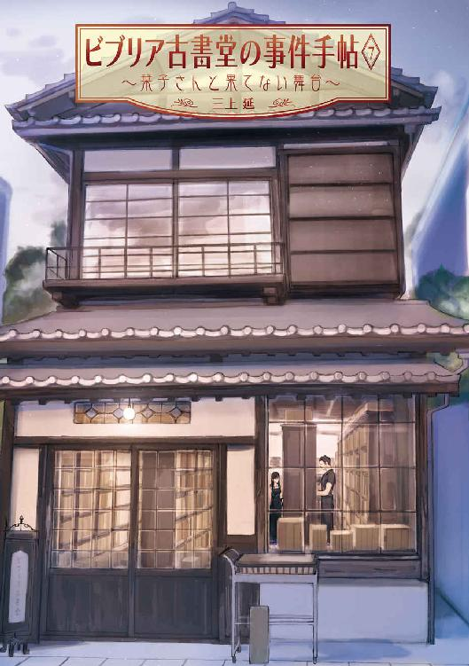
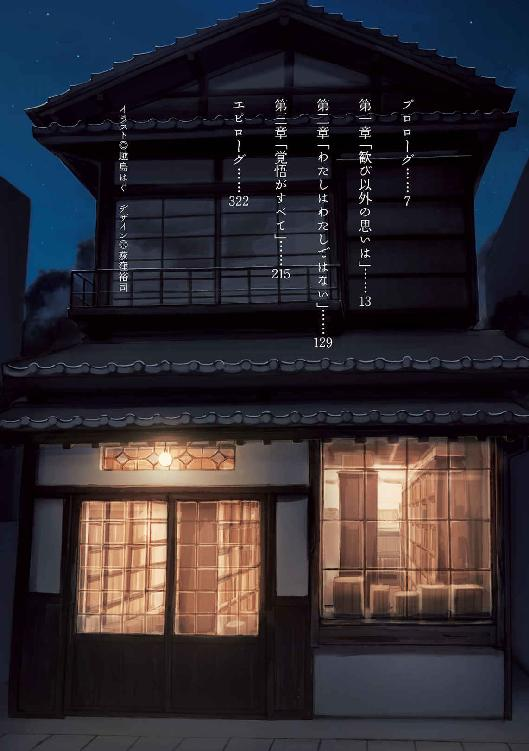
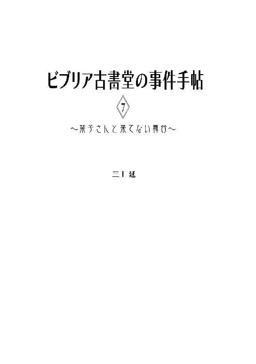
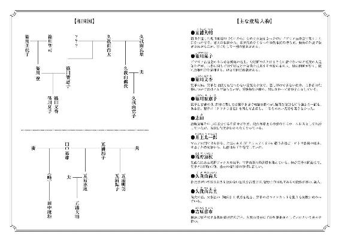
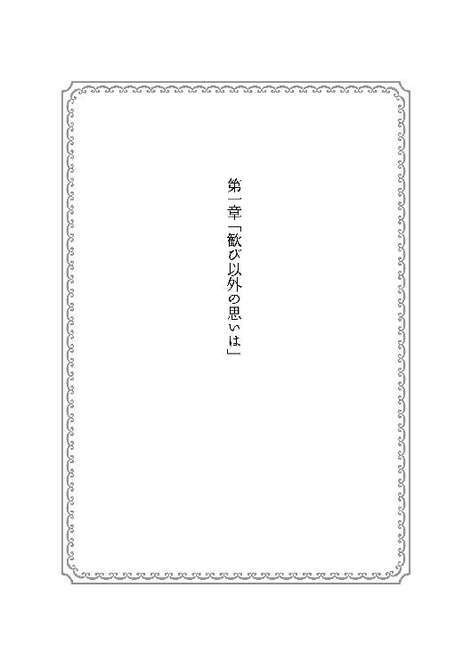
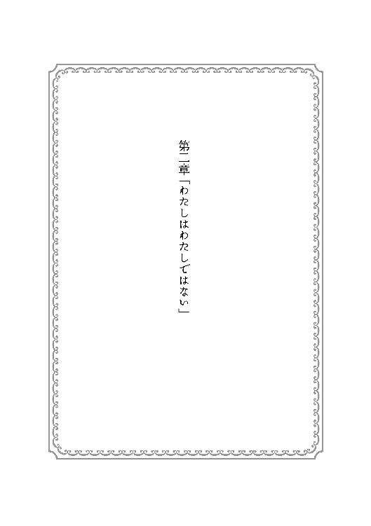
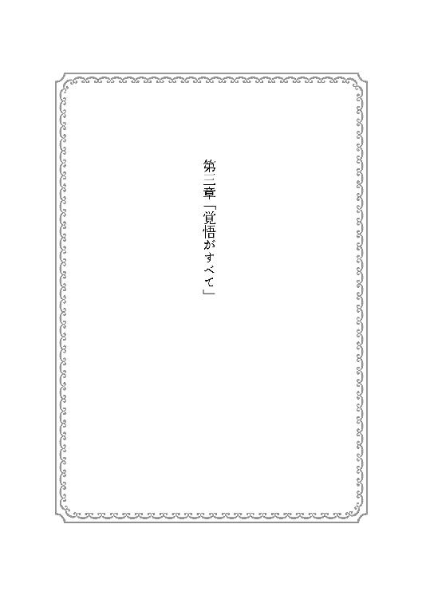

| ビブリア古書堂の事件手帖7 ～栞子さんと果てない舞台～<ビブリア古書堂の事件手帖> (メディアワークス文庫) | |
| 三上 延 | |
| 株式会社KADOKAWA (2017) | |


本書（電子版）に掲載されているコンテンツ（ソフトウェア／プログラム／データ／情報を含む）の著作権およびその他の権利は、すべて株式会社ＫＡＤＯＫＡＷＡおよび正当な権利を有する第三者に帰属しています。
法律の定めがある場合または権利者の明示的な承諾がある場合を除き、これらのコンテンツを複製・転載、改変・編集、翻案・翻訳、放送・出版、公衆送信（送信可能化を含む）・再配信、販売・頒布、貸与等に使用することはできません。


プロローグ
大きな黒檀の座卓に、大判の本が三冊並べられている。
表紙と背表紙を覆う美しい仔牛革には書名も著者名もなく、小口と天地には厚く金箔が塗られていた。どれもまったく同じ大きさ、同じ装丁だったが、革の色だけが違っている。
赤と、青と、白。
ここは西鎌倉の高台にある料亭の一室だ。雪見障子から差しこむ強い日射しに、なめらかな革が鈍い光沢を放っている。窓の向こうで緑色のカエデの葉が揺れていた。
藍色の和服を着た大柄な老人が、肘掛のある座椅子に体を沈めている。弛んだ首筋の肉が襟元にまで乗っていた。
「この中から一冊を取れ」
分厚い唇の隙間から、濁った声が発せられる。座卓を挟んだ正面に、黒髪を長く伸ばした若い娘が正座をしている。制服のような白いブラウスに紺色のスカートと、黒縁の眼鏡を身に着けている。見た目こそ奥床しいが、おそろしくしたたかな性格で目端が利く。老人の刺すような視線にもまったく臆さなかった。
「一冊だけ価値のあるものが混じっている。本を開けずに見分けてみせろ。当てずっぽうでは駄目だ。理由も尋ねる」
素っ気ない態度を装っているが、語尾にはうっすらと歓びが滲み出ている。洒落た趣向のつもりで、信じられないほどの大金を使って色違いの本を用意させたのだ。
「わたしが見分けられたら、どうなりますか」
「その本をお前に譲る。わしの店と、いつか見せた他の蔵書も一緒に。これは試験だ」
芝居がかった調子で重々しく告げ、そこでたっぷりと間を取った。
「合格すればお前がわしの後継者だ。正式に店を継いでもらう」
静まり返った書斎に、老人の荒い息づかいだけが聞こえていた。長年の不摂生で内臓にいくつも病を抱えている。
娘はかすかに眉をひそめた。
「わたしの他にも娘はいるでしょう。鶴代さんには継がせないんですか」
半分血の繫がった姉の名を出した途端、老人の頰にさざ波が立った。娘たち同士に面識はないはずだが、いつのまに名前を知ったのだろう。
「あれはただの文学少女だ。お前と違って古書の取り引きなどできん。この仕事にはなにがあろうと品物を手に入れ、売りつける熱意と覚悟が要る。お前ならわしがここまで築き上げたものを、立派に引き継ぐことが......」
「お断りします」
娘は父親の言葉をばっさり断ち切った。
「......なんだと？」
「見分けることはできます。ですが、店はいただかなくても結構です」
「言葉を選べ。せっかくの幸運が台無しだぞ......母親に反対されているからか？」
「確かに母は古書店の仕事を嫌っています。でも、理由は別にあります」
老人の声が弱々しさを帯びる一方で、娘のそれはいっそう力強く響いた。
「わたしは他人の用意した試験で、人生を決めるのは嫌です。そんなわたしはわたしではありません......いつどこでなにをするか、どう生きるかは自分で決めます」
「わしの用意したものが欲しくはないのか」
「もちろん、欲しいわ」
矢のようにまっすぐな答えだった。
「きっと本当に価値のあるものなのでしょう。でも、その本も他の本も、欲しいと思った時に、自分の力で手に入れます。それこそ、どんなことがあろうとも」
娘は軽やかに立ちあがった。老人の方は岩のように腰を下ろしたままだ。その気があったとしても、衰えた手足はもう容易には動かない。
「さようなら。もう二度とお会いしません」
ためらいがない分、別れの挨拶はいっそう冷ややかに響いた。娘はスカートを翻して、和室を出て行った。取り残された老人は体を小刻みに震わせている。断られるなんて想像もしていなかったのだろう。念には念を入れた準備を台無しにされるのはこの上ない辱めだ。古今東西、肘鉄を食わされた男ほど惨めなものはない。
まあ、わたしはこうなると思っていたが。
「盗み聞きも大概にしろ、馬鹿者」
老人の怒声が飛んでくる。わたしは間仕切りの襖を開け、肩をすくめて次の間から入っていった。
「盗み聞きなんてとんでもない。隣の部屋にいれば否でも耳に入りますよ」
「口答えをするな、半端者が。恥を知れ」
置きっ放しになっている大判の本に目を近づける。どれが正解かは知らないが、中身がなにかは知っている。もし売りに出せば、一体どれほどの大金が転がり込むことか。
「誰が触っていいと言った」
「一度ぐらい見せていただいても罰は当たらないでしょう。減るものでもなし」
「離れろ。誰にも触れさせん」
しぶしぶ手を引っこめる。そう冷たくしなくてもいいだろう。なにしろわたしは最後に残ったあんたの弟子だ。気の短さ、腹黒さに耐えかねた兄弟子たちが去った後も、影みたいにこうして付き従っている。住みこみで世話をして、今日もここまで車を運転してきたのはわたしだ。
「小賢しい小娘だ。親不孝者が......わしの手に嚙みつきおった......これまで面倒を見てやった恩を忘れて......あの罰当たりが......」
大きな背中を丸めてつぶやいている。見た目はまるでいじめられた熊だが、頭の方も動物並みに退化してるのかもしれない。あの娘はあんたの愛人が産んだ子で、ほんの数年前までほったらかしだった。本妻の娘が頼りにならないものだから、慌てて手なずけようとしただけの話だ。
あんたの命はもうすぐ尽きる。
本当はわたしが財産を引き継いでもいいぐらいだ。一から十まで手ずから叩きこまれたわたしなら、それこそどんな取り引きでもこなす熱意と覚悟を持っている。
「必ずあいつを罰してやる......呪いをかけてやる。あいつがすべてを捨て、すべてに見捨てられるように。そうだ、世界中を駆けずり回らせてやるぞ......おい、聞いているか。馬鹿者」
「聞いていますとも。耳に栓をしなくてよかったんですか。薄気味悪いことばかり口にしていましたよ」
「ペンを寄こせ」
しかめっ面を作りつつ、万年筆を手渡す。まあ、わたしも馬鹿には違いない。もう何者でもない寂しい年寄りと、おさらばできずにぐずぐずしている。利口な連中はみんな逃げていったのに。
「わしがこれから書くものを用意しろ......このことは決して誰にも洩らすな」
背中を丸めて手帳になにか記し始める。とにかく、最期まで見守ってやろう。それがきっとわたしの役割だ。その後は自分で考えて、せいぜい好きにやらせてもらう。あの娘と同じように。

１
ガラスの引き戸を開けた途端、犬の吐息みたいにねっとりした風が吹きこんできた。一瞬、白く輝いた視界が元通りになる。青いストライプの入った電車が横須賀線のホームに滑りこむのが見えた。
俺は左肩をなるべく使わずに、回転式の鉄の看板を引きずって店の外へ出る。しばらく手入れされていなかったせいか、表面にはうっすらと埃が貼りついていた。白い塗料で描かれた店名を念入りに雑巾で拭き始める。
店の名前は「ビブリア古書堂」。
ＪＲ北鎌倉駅のすぐそばにある、昔ながらの古書店だ。俺の名前は五浦大輔。去年大学を卒業し、この店でバイトしている。就活に失敗してフラフラしているところをここの店主に拾われた。一ヶ月ばかり店を休んでいて、数日前に復帰したばかりだ。なまった体に七月の暑さが堪える。Ｔシャツの背中はもう汗ばんでいた。
「お店、今日はお休みなの」
くぐもった声に振り向くと、藍色の涼しげなワンピースを着て、日傘を差した年配の女性が立っていた。男のようにさっぱりと短くした白い髪には見覚えがある。午前中よくやって来る客だった。
「申し訳ありません。明日は営業してるんですが......」
「あらそう。じゃ、また寄るわね」
残念そうな様子もなく、向きを変えて円覚寺の方へ去っていった。たぶん近所に住んでいるのだろう。この店を散歩のコースにしているお年寄りは多いが、ほとんど本を買っていってくれない。三月以降は特にそうだった。
東日本大震災の後、本を買いに来る客は減った。古書を読む余裕などないのかもしれない。しかもこの一ヶ月、ビブリア古書堂は仕入れや品出しにも不自由していた。俺が左肩の骨を折り、重い本を運べる店員がいなかったからだ。今日は臨時で店を閉めて商品を入れ替えている。
看板をそのままにして建物へ戻った。背の高い書架が向かい合わせに店の奥へ伸び、床にもうず高く古書が積まれている。棚の商品を入れ替えている今は、普段以上に足の踏み場もない。看板を外へ出したのは作業に邪魔だったせいもあった。
ここにある膨大な古書の中身を俺はほとんど知らない。長時間活字の本を読んでいると気分が悪くなるという妙な「体質」のせいで、興味はあっても読書ができなかったのだ。
「福武文庫も入れ替えていいですか」
店の奥に向かって声をかける。返事はなかった。というかカウンターの奥には誰もいない。さっきまでそこで店主が本の値付けをしていたのだが。
俺は作業を中断すると、足音を忍ばせてカウンターへ戻る。値付けの済んでいない絶版文庫と鉛筆が置きっ放しになっていた。内田百『新・大貧帳』。福武文庫。最後のページを確かめると、まだ価格は書きこまれていなかった。
ぎしりと椅子の鳴る音が聞こえた。
入荷した古書の整理ができるように、Ｌ字型のカウンターの内側には広いスペースが取られている。塀のように本がうず高く古書が積み上がっているのだが、その奥には人が隠れられるぐらいの隙間がある。店主はそこで椅子に腰かけていた。
背中まで伸ばした長い黒髪。ノースリーブのブラウスにロングスカート、作業用のエプロンといういつもの地味な姿だ。ただ、丸みを帯びたむき出しの肩がなまめかしい。半ば背を向けて座っているので、俺の視線にまだ気付いていない。
この人の名前は篠川栞子。俺とあまり年齢は変わらないが、ビブリア古書堂の三代目店主だ。並外れた古書の知識と洞察力を活かして、店に持ちこまれる本についての相談事を解決してきた。
それはいいのだが、気になる本が入荷すると仕事中でも物陰でこっそり読み始めてしまう。そのたびに「仕事して下さい」と注意するのが俺の役目だった。
「し......」
口から出かかった文句が立ち消えになる。食い入るように栞子さんが見つめているのは古書のページではなく、パソコンの画面だった。この隙間にまで続いているカウンターの上に、デスクトップのパソコンが置かれている。主に通販の業務に使っているのだが、今起動しているのは会計ソフトらしく、細かな数字が並んでいる。この店の収支表のようだった。
「困ったな......」
ふう、とため息をつき、カウンターの天板に顎を載せる。俺は反省した。仕事をサボってこっそり本を読んでいたわけではなかった。バイト店員の俺と違って、店主には考えなければならないことがいくらでもある。古書店の経営が楽なはずはないのだ。きっと今までも俺の知らないところで真剣に悩んで──。
（ん？）
顎をカウンターに載せたまま、ゆっくりと頭を左右に振り始める。
「困ったなー......困ったなー......」
節を付けて小声で歌っていた。この人の鼻歌を耳にしたことはあったが、歌詞までついている歌は初めてだった。柔らかくてきれいな声だ。俺より年上なのに可愛い。とにかく可愛い。ちなみに俺はこの人と二ヶ月前から付き合っている。
「今月もー、赤字かもー、来月もー、ひょっとしてー、ふんふふーん」
ただ音程は微妙だ。それになんだか歌詞が暗い。
「どうしようー、大輔くんの、お給料......」
「えっ」
つい声が出てしまった。ぴんと栞子さんの背中が跳ねて、俺の方にゆっくり顔を向ける。フレームの太い眼鏡の奥で、長い睫毛に彩られた両目が見開かれていた。肌は陶器のように白く、古書だらけのこの空間にしっとりと馴染む。目立つタイプではないが、バランスよく整った容姿だ。ただ、ブラウスを押し上げている豊かな胸元だけがアンバランスだった。もう手遅れだったが、両手でしっかり口を塞いでいる。
「そ、そうですよね......大輔くん、もう戻ってきてるんでした......」
指の隙間からもごもごと声が洩れてくる。
「すみません、わたし、実は前から独り言で歌っちゃう癖があって......ひ、人前でなるべく出さないようにしてたんですけど、大輔くん、最近お店にいなかったから、つい......あ、本の値付けですね」
俺が持っていた『新・大貧帳』をもぎ取ると、ぱらぱらとめくって状態を確認する。
「研磨されてスピンも切れているので、均一台でいいです」
話を打ち切るように本を返してくる。肩越しに見えるパソコンの画面には収支の一覧が表示されたままだ。歌ってしまう癖よりも別のことが気になる。
「店の経営、そんなにまずいんですか」
「......そういうわけでは」
彼女は気まずそうに言葉を濁す。
「このところ赤字なのは確かですけど......万が一、高額の仕入れがあった時に備えて、ある程度のお金を店の口座に預けているんです。だから、お給料のことは心配しないで下さい」
あまり安心はできなかった。給料のことはどうでもいい──わけではないが、仕入れの資金に手を付けるのは心配だった。大船で長年定食屋を切り盛りしていた祖母は「金の使い道をきちんと分けるのが商売を続けるコツだよ」と言っていた。万が一に備えている金を俺の給料に回してしまうのは、かなり切羽詰まっていることにならないか？
「俺が休んでたせいですよね。一ヶ月以上も」
正確には四十日だ。受験生の妹をそうそう手伝わせるわけにいかず、足の悪い彼女一人ではうまく店は回らない。売り上げが落ちるのも当然だった。
「大輔くん」
栞子さんが声を張った。壁に立てかけてあった支えつきの杖を肘にはめて立ち上がる。少しよろけたので、俺は思わず彼女の腕に手を添えた。こちらを見上げる黒目がちの瞳は怒っているように思えた。
「大輔くんはなにも悪くないです。怪我をしただけでしょう？ こんなに早く回復するだけでも凄いです......あの石段から落ちたのに」
栞子さんの肩がかすかに震えた。自分が落ちた時の恐怖が蘇ったのかもしれない。俺たちは二人とも北鎌倉にある同じ石段から、違う時期に落ちて入院している。もちろん偶然ではない。二冊の太宰治『晩年』をめぐる、とても複雑な事情があった。
２
一年前、栞子さんは田中敏雄という古書マニアにストーキングされていた。狙われていたのはビブリア古書堂で代々引き継がれてきた、太宰治『晩年』初版本のアンカットだった。
田中は栞子さんを石段から突き落とし、今も足に後遺症が残るほどの怪我を負わせた。どう考えてもまともではない男だが、実は俺と血が繫がっている。田中の祖父と俺の祖母は一時期不倫関係にあり、生まれたのが俺の母だった。もちろん知っている人間はごくわずかだ。
栞子さんは蔵書を守るために偽物を燃やし、アンカットが失われたように見せかけて、この店で働き始めたばかりだった俺も利用して田中を警察に引き渡した。
ところが今年の五月の終わり、田中敏雄名義の脅迫状が舞いこんできた──栞子さんの芝居を知っているという内容だ。保釈中の田中に会いに行くと、脅迫状については知らん顔で奇妙な依頼をしてきた。かつて祖父田中嘉雄の蔵書だった、栞子さんの持つアンカットとは別の『晩年』初版本を捜して欲しいという。意図を疑いつつも調べていくと、田中嘉雄は北鎌倉に住んでいた久我山尚大という冷酷な古書店主に脅迫され、『晩年』を強引に買い取られていた。尚大の死後『晩年』を引き継いだのは、寝たきりになっている未亡人の久我山真里だった。
田中敏雄とは別の意味で『晩年』に執着を抱く彼女は、太宰自家用の一冊を持っているだけでは満足せず、栞子さんの持つアンカットをも手に入れようと画策していた。この店に脅迫状を出したのも彼女の差し金で、俺たちの反応を確かめていた。
俺は久我山真里の手先になっていた孫の寛子と、『晩年』の奪い合いでもみ合った挙げ句、石段から転げ落ちたというわけだ。
俺が入院している間に、久我山真里は体調を崩して東京の病院へ移った。脅迫や強盗未遂、傷害などの罪に問われるはずだった。しかし、高齢の彼女から警察は供述が取れず、逮捕された久我山寛子も「『晩年』のアンカットを欲しがっている祖母のために自分がすべてやった」と主張したために、結局すべての容疑が寛子一人に向けられることになった。祖母の罪を被るつもりらしい。俺たちも主犯は久我山真里だと警察に話したのだが、証拠は発見されなかった。
「久我山家の人たちは、最近どうしてるんですか」
俺が尋ねると、栞子さんは目を伏せた。
「真里おばあさまは今も病院で......昨日、鶴代おばさまと電話でお話ししたら、最近はほとんど意識もないそうです。おばさまもかなりお疲れのようでした。拘置所にいる寛子さんの面会にも通っていますし」
六月の事件で被害を受けたのは俺たちだったが、久我山真里の娘であり、寛子の母親でもある久我山鶴代も被害者だと思う。二人のしていたことをまったく知らなかった彼女が後始末に奔走している。俺の自宅にも謝罪に訪れて、怪我の治療費と見舞金を支払いたいと申し出てきたが、入院費だけ受け取って後は断った。
久我山真里たちは『晩年』のアンカットを奪おうと俺を田中敏雄に襲わせていた。田中がぎりぎりのところで俺たちに寝返ってくれなければ、もっと多くの人間が傷ついていたかもしれなかった。
田中には裁判の判決が下り、今は刑務所で服役している。栞子さんが『晩年』を隠し持っていたことを警察に話しても、判決をそのまま受け入れた。俺たちの方も田中に襲われたことを口外しなかった。
お互い協力しあったわけだが、決して心から信頼し合っているわけではない。久我山真里の持つ『晩年』初版本をビブリア古書堂が買い取って田中に売る、という約束でどうにか保たれている関係だ。
もしその約束を果たせなければ、出所後にどんな報復を受けるか分からない。久我山鶴代に事情を話すと、必ず俺たちの希望に添うようにすると応じてくれた。もともと母親から相続する日が来たら、久我山尚大の蔵書を残らず手放すつもりだったらしい。
今、そのことで一つ問題が起こっていた。
「久我山家にあった『晩年』は見つかったんですか？」
俺が石段を転げ落ちた日、太宰自家用の『晩年』を含む久我山尚大の蔵書は、久我山家の書斎にある開き戸棚に間違いなく収まっていた。しかし、いつのまにか戸棚は空になっていたという。栞子さんの持つアンカットが奪われそうになった事件と久我山家の古書は直接関係がなく、警察も証拠品として押収しなかったらしい。
久我山真里がどこかに隠したことは間違いなかった。自分の計画を阻止した栞子さんへの嫌がらせには違いなかったが、容態が悪いせいで行方を聞き出せずにいた。
「鶴代おばさまとお話ししたのはそのこともあったんです。実は悪い知らせがあって......太宰自家用の『晩年』はもう人手に渡っていました」
栞子さんの返事に、俺は一瞬言葉を失った。
「人手に渡ったって、売られたってことですか？」
「ええ。わたしも油断していました。真里おばあさまの性格上、蔵書を手放したり傷つけたりはしないだろうと......都内の病院に移る前、鶴代おばさまの外出中に知り合いの古書業者を呼んで全部運び出させていました。百万円の買い取り明細が郵送されてきて、おばさまも気付いたそうです。もう真里おばあさまの個人口座に代金も振り込まれています」
「まずくないですか、それ」
百万円の代金が支払われている以上、取り引きは成立してしまっている。一度市場に出てしまった古書を取り戻すのは簡単ではないはずだ。もし熱烈な太宰ファンの手に渡っていたら、貴重な作者自家用の『晩年』を手放したりはしないんじゃないか？
「たぶん大丈夫です。業者の方とは連絡が取れました。久我山家から買い取った蔵書はまだ一冊も売っていないそうです。今夜、その方がうちにいらっしゃることになっています。『晩年』をわたしたちに売って下さるとのことで、その相談に」
「そうだったんですね。よかった」
俺は胸をなで下ろした。取り引きの相手が久我山家からその業者に変わっただけだ。しかし、大丈夫だと言うわりには栞子さんは浮かない顔つきだった。
「どうかしたんですか？」
「気になることがあって......結局、どうして真里おばあさまは蔵書を売ることにしたんだろうって」
「え、そんなの、栞子さんへの嫌がらせじゃないんですか。俺たちと田中との約束を果たせなくするため、とか」
「そのつもりだったなら、一刻も早くどこかのコレクターの手に渡るよう手配していたはずです。特にそういう指示はなかったと業者の方もおっしゃっていました」
「頼みそこなっただけじゃなくて？」
大したことには思えなかった。なにしろ体調の悪い老人のやったことだ。
「だといいんですが......なにか、裏があるような気がして」
俺はそれよりも仕入れにかかる費用が気になっていた。まとまった金額が必要なはずだ。大口の仕入れに備えた資金はあると言っていたが、今この店の経営は赤字になっている。本当に大丈夫なのか──気を揉むばかりなのが情けない。
「どこの古書店に買い取られたんですか」
「専門の古書店ではなくて、横浜にある骨董屋さんです。舞砂道具店さんといって、海外のアンティークと洋書を扱われていて......古くから久我山家と付き合いがあったそうです」
「栞子さんも知らない店なんですね」
彼女はうなずいた。筋金入りの古書マニアでもあるこの人は、当然古書を扱う店にも詳しい。それでも知らない店があるのか。
「十五年ほど前に店舗を閉めて以来、限られたお得意様向けに目録販売だけをやってらっしゃるとか。ほとんど海外で過ごされているとおっしゃっていました。声の感じではかなりお年を召した方でした......わたしの母なら、知っているかもしれません」
思いがけない人物が話題にのぼって、俺はぎくりとした。篠川智恵子。栞子さんよりも古書に詳しい、油断のならない女性だ。十年前になにかの本を追ってビブリア古書堂から姿を消してしまい、つい最近まで行方が分からなかった。
「どうしてですか」
「母もずっと海外にいて、洋書の売り買いをしてきたはずですから。日本の同業者には詳しいのではないかと......わざわざ聞きたくはありませんが」
栞子さんの声に棘が混じった。俺は彼女の顔をまじまじと見つめる。この人は母親ととてもよく似ている。だからこそ許せないものがあるのだろう。同族嫌悪というやつだ。でも、もしもう一つの秘密を知ったら、嫌悪する人間がもう一人増えるかもしれない。
はっきりした証拠があるわけではないが、おそらく久我山尚大は篠川智恵子の父親だ。西鎌倉の深沢に住んでいた愛人との間に生まれたのが智恵子らしい。客を脅迫して取り引きするような、危険な古書店主が栞子さんの祖父ということになる。
「......大輔くん」
俺がそのことに気付いたのは、肩の骨折で入院している時、見舞いにやってきた篠川智恵子と話したせいだ。たぶん気付くように仕向けられていた。娘と付き合っている俺がどう反応するか、試されている気がする。もちろん誰にもそのことを話していないが──。
「あの......大輔くん。ちょっと」
俺は我に返った。栞子さんはぎゅっと目を閉じて首をすくめている。
「し、仕事中は駄目です......文ちゃん、そろそろ帰ってきちゃう、から」
消え入りそうなささやき声で言う。
「なんの話ですか」
「えっ」
栞子さんは顔を上げる。思ったよりも互いの距離が近い。いや、俺の方が顔を近づけていた。考え事をしているうちに前のめりになっていたらしい。この人が立ちあがろうとした時に添えた手も放していなかった。
キスしようとしていると思われたらしい。つい彼女の口元に目が行く。ピンクのリップグロスが塗られたつややかな唇は、ほんの少し開いていた。俺の喉がひとりでに動く──その瞬間、母屋と店を仕切っているドアが音高く開いた。
「いちゃいちゃしてるカップルはいねがー！」
なまはげ風のセリフとともに現れたのは、高校生ぐらいの小柄な娘だった。膝下までのハーフパンツとボーダーのＴシャツを着た姿は、たった今海から帰ってきたように見える。小麦色に日焼けした肌にポニーテールがよく似合っていた。小動物っぽい顔立ちも全体的な雰囲気もまったく違うが、この娘は栞子さんの妹だ。名前は篠川文香。今、夏休み中の高校三年生だ。
「あ、本当にいた......」
ばつが悪そうな笑みを浮かべる。
「ごめん。本当にごめん。冗談のつもりだったんだけど......いやいやいや、いいからいいから。そのままそのまま、そのままそのまま......」
両方の手のひらをこちらに向けたまま、後ずさりで母屋に引っこもうとする。
「ま、待って文ちゃん！ 誤解だから」
栞子さんが慌てて呼び止めた。誤解かどうかは微妙なところだと思う。
携帯の画面の中で白いベビー服姿の赤ん坊が、濃い色のサングラスをかけた初老の男性に抱っこされている。場所は縁側で、背後にガラス戸が写っている。二人とも目を細めてカメラを見つめているが、眉間にはそっくりのしわが寄っていた。間違いようのない血の繫がった親子だ。
「本当にねー、坂口さんにそっくりなの」
篠川文香は自分の携帯を見せながら言った。今日、彼女は逗子に住んでいる坂口夫妻のアパートに行っていた。坂口が『論理学入門』という本を売りに来たことがきっかけで俺たちと親しくなった。今月のはじめに子供が産まれ、俺と栞子さんの代わりに出産祝いを届けてもらった。本当は俺たちも行きたかったが、仕事もあって都合がつかなかった。
「でもね、しのぶさんにも似てるんだよ。男の子だけど」
次の画像で赤ん坊は丸顔の中年女性の膝に移っていた。坂口の妻のしのぶだ。誰か冗談でも言ったのか、顔中を口にして笑っていた。笑い声がここまで聞こえてきそうだった。確かに顔の輪郭はよく似ている。
「こういうの見てるとさー、そのうちあたしも赤ちゃん抱っこする日が来るんだなーって思うよ」
「そのうちって......文ちゃんの子供？」
「あたしのわけないじゃん。お姉ちゃんにだよ。いつ結婚してもおかしくないんだから」
「なっ」
栞子さんは喉になにか詰まったような声を上げた。
「そんなことあるわけないでしょ！ け、結婚なんてまだ先で......大輔くんのお母様にもきちんとご挨拶してないんだから！」
もうそこまで考えていたのか。言われてみるとまだうちの親と会ってもらっていなかった。結婚するつもりで付き合い始めたのに間が抜けている。
（今度、うちに来てもらおう）
ただ、彼女が言ったように結婚するのはまだ先だと思う。
怪我の治療中につくづく思い知った。体を動かせなくなると、俺はなに一つ仕事ができない。去年、入院しながらこの店を経営していた栞子さんとはまるで違う。体力だけが取り柄のままでいいとは思えない。この人と結婚したとしても、自分がビブリア古書堂でどう働いていくのか、少し時間をかけて考えたかった。
「あ、そういえば五浦さん」
携帯を仕舞いながら、篠川文香が俺に話しかけてきた。
「志田さんってどうしてるか知らない？」
「志田さんか......」
鵠沼にある橋の下に住んでいたホームレス兼せどり屋だ。三ヶ月ぐらい前までよくこの店に顔を出していた。威勢がよくて気前もいい、さっぱりした性格の人だった。もしここへ来ていたら、栞子さんとの結婚について話を聞いてもらっていたかもしれない。ビブリア古書堂の内情や、篠川母娘の関係について詳しく知っている年長者の知り合いは志田ぐらいしかいなかった。
「いや、俺も知らない。四月の終わりから突然店に来なくなって......電話もメールも全然来ないし」
以前にも数日ふらっといなくなることはあったが、今回は様子が違う。志田のねぐらがあった引地川の橋の下を見に行くと、寝起きしていたテントはきれいに片付けられていた。古書を売りに行っていた他の古書店にも、やはり五月以降は姿を見せていないらしい。
「志田さんのことでなにかあった？」
「奈緒ちゃんがね......さっき鎌倉駅で会って話したんだけど、夏休みに入ってから志田さんをあちこち捜してるみたいなんだ。受験勉強で忙しいのに『先生が行き倒れになってるかも』って、すごく心配してて」
奈緒ちゃん──小菅奈緒は篠川文香と同じ高校に通っている。小山清の『落穂拾ひ・聖アンデルセン』という新潮文庫をきっかけに志田と親しくなり、河原で本の話をするようになった。彼女は志田を「先生」と呼んで慕っている。
「もし万が一のことがあったら、どこかの古書店に連絡が行ってると思う。出入りしてた店の住所とか電話番号のメモを必ず持ってたし......たぶん引っ越しただけじゃないかな」
俺はちらっと栞子さんを窺った。自分の意志で引っ越したと考える理由はもう一つある。この数ヶ月、栞子さんは志田の話に自分から触れようとしない。なにか知っているからじゃないかと思う。四月の終わり、栞子さんは『彷書月刊』という雑誌のバックナンバーをめぐる相談事に乗ったのだが、志田が姿を消したのはその直後だった。志田の友人が関わっていた一件だ。
「うん、まあ、そうだよね......志田さん、そこらで行き倒れちゃう人には思えないし。でも引っ越すなら引っ越すで、みんなに挨拶ぐらいしていけばいいのに」
確かにそうだ。理由があってどこかへ行ったにしても、後から手紙の一つぐらいは出せるはずだ。義理堅い性格だと思っていたのだが。
「奈緒ちゃんにはあたしから話しとく。あんまり心配しなくても大丈夫だと思うって」
篠川文香はそう言って、姉の方を向いた。
「じゃ、あたし夕方まで自分の部屋で課題やってるね。台所にお茶菓子用意してあるから、お客さんが来たらそれ出して」
彼女は母屋へのドアを開けようとする。俺は首をかしげた。昼間に来客があるように聞こえるが、そんな話は初耳だった。
「待って文ちゃん......お客様がいらっしゃるのって、夜だったわよね」
慌てたように栞子さんが声をかける。振り返った彼女の妹は喉まで見えそうな勢いで大口を開け──いきなり天井に向けた顔を両手で覆った。
「うわー、やっぱ聞いてなかったかー。確認するんだったー。失敗したー」
「えっ、どういうこと？」
「朝ご飯の後で話したじゃん。今朝早くその人から電話があって、ひょっとしたら今日の午後に行くかもしれないって......お姉ちゃん、生返事だったから耳に入ってないかなーって思ったんだよね......」
話を聞くうちに栞子さんの顔色が変わっていく。なにか思い当たることがあったらしい。
「ひょっとすると、あの時......『本を読むか歯磨きするかどっちかにして』って注意された後......？」
「そうそこ！」
篠川文香はびしっと姉を指差した。読書の最中なら聞いていなくても不思議はない。というか、歯磨きの最中でも読書するのかこの人は。意外でもなんでもないが。
その時、表のガラス戸が開いた。
「ごめんください」
歌っているように節をつけた挨拶が店内に響いた。真っ青なストライプのスーツを着て、同じ柄の帽子をかぶった小男が開きっぱなしの敷居をまたいでくる。オレンジ色の太いネクタイが目に眩しい。革製らしいアタッシュケースを提げている。
七月の北鎌倉の風景にまったく馴染まず、くっきりと浮かび上がって見える。一瞬、知らない芸能人が立ち寄ったのかと思った。
丸みを帯びた体型だが、足取りは軽やかだった。すいすいと本の山を避けて俺たちのいるカウンターへ近づいてくる。毒気を抜かれた俺たちは誰も口を利けなかった。
「ビブリア古書堂の皆さん、初めてお目にかかります。舞砂道具店の吉原喜市と申します」
のんびりしているが張りのある声で名乗り、芝居がかったしぐさで帽子を取った。一本の毛もない頭がてらてらと光沢を放っている。彫刻刀で削ったようなはっきりした目鼻立ちだが、口元や目尻のしわもはっきりと目立つ。かなり年を取っているようだった。
「太宰治『晩年』のお取り引きの件で伺いました。今、お話しさせていただいてもよろしいですかな」
頭がやっと働き始める。この老人が久我山家から尚大の蔵書を買い取った業者なのだ。今まで知り合ったどんな古書店主ともタイプが違う。容姿にも服装にも隙がなく、隅々まで注意は行き届いているが、どことなく人工的な匂いがする。まるで一から作り上げたキャラを忠実に演じているみたいな。
俺はうっすらと胸騒ぎを覚え始めていた。
３
栞子さんが母屋の和室に客を通した。
俺は隣の台所で来客用のグラスに麦茶を注ぎながら様子を窺っていたが、話はまだ始まっていなかった。吉原と名乗った老人は座卓の向かいに座っている栞子さんを見つめている。愛想よく目を細めたまま、ガラスで固めたようにまったく表情が動かない。栞子さんは落ち着かない様子で座り直している。
和室から死角になっている食器棚のかげに、篠川文香がぴったりと張りついている。さっき夏休みの課題をやると言っていたはずだが。
「文香ちゃん、なにしてるんだ」
小声で尋ねると、ぴんと立てた人差し指で黙らされた。
「盗み聞きしようと思って。なんかうさん臭いじゃん。あのおじいさん」
こんなに堂々とした盗み聞き宣言は初めてだ。この娘には客の話を勝手に聞く癖がある。どうせ止めてもここから動かないだろうが、
「......変なこと言ってないで、部屋に戻っててくれ」
一応大人として注意して、グラスと茶菓子の載った盆を和室に運ぶ。横から二人の前にグラスを置いていると、不意に老人が笑顔のままで口を開いた。
「うさん臭いと思われるのも無理はありませんが、どうぞ警戒なさらずに」
げふっと咳きこむ声が台所から響いた。内緒話のつもりだったが、耳に届いていたのだ。栞子さんが深々と頭を下げた。
「た、大変失礼いたしました......」
俺も慌てて同じことをする。どう考えてもこちらが悪い。ちなみに台所から人の立ち去る気配はなかった。まだ盗み聞きを続けるつもりらしい。
「海外での生活が長いせいか、芝居じみた話し方をする癖がついてしまいました。特に欧米人には日本式の曖昧な表現は通じませんのでね。最初は慣れませんでしたが、今は世の中が舞台のようなものと割り切っております。誰でもなにかの役を演じなければなりません」
老人は意味ありげにウィンクする。最初は慣れなかったのが本当だとしても、今はずいぶん楽しそうだ。この人の性格に合っていたのだろう。
「舞砂......というのは、どなたかのお名前ですか？」
栞子さんの前にはこの老人の名刺が置かれている。「吉原喜市」という名前の横には「舞砂道具店」と印刷されていた。住所は横浜市中区元町だ。吉原は栞子さんから目を逸らさずに、座卓の上で節くれ立った指を組む。答えが返ってくるまでに間があった。
「祖父がドイツ出身で、マイスナーという姓だったのです。大正時代の初めに開いた輸入雑貨屋がうちのルーツでしてね。最初はそのままマイスナーを屋号にしていたんですが、第二次大戦中に横文字を使うのは憚られて、後を継いでいた父が漢字を当てたそうですよ。わたしは幼い頃だったので、はっきり憶えておりませんが」
言われてみると顔立ちには欧米人らしさがある。第二次大戦の時代に生まれていたなら、この老人はかなりの年配だ。少なくとも七十代にはなっている。
「......久我山書房さんとは、お付き合いがあったんですよね」
また沈黙が流れた。さっきからこの老人は栞子さんの表情を窺っている。相手がなにを知っているか、読み取ろうとしているみたいに。どういうわけか俺は栞子さんの母親──篠川智恵子を思い出していた。あの人も似たような態度を取ることがある。
「もともとわたしは骨董よりも古書に興味がありまして。父が久我山尚大さんの友人だった縁で、久我山家に住みこみで働いておりました。尚大さんが亡くなる前の数年は、書生兼番頭のような地位にありましたね。亡くなった後は、父の店に戻って後を継ぎましたが」
俺の背筋がいつのまにか強張っていた。吉原が「番頭」だったとしたら、久我山尚大が悪どい取り引きをしていたことも知っているはずだ。それどころか加担している可能性すらある。
「わたしの祖父のことも、ご存じなんですか？」
栞子さんの表情はいつもと変わりがない──というか、いつも通り人の目を見ずにぼそぼそ話している。本の話をしていない時の彼女だった。
「......ああ、篠川聖司さんのことですね。もちろん知っておりますよ」
息継ぎほどの間を置いて、老人はうなずいた。
「数年は一緒に久我山書房で働いておりましたから。番頭だった聖司さんが独立してビブリア古書堂を開き、わたしが次の番頭に収まった次第です。番頭と言っても体のいい使い走りですな。仕事の時もそうでない時も、尚大さんにはずいぶんとこき使われたものですよ」
もう一つ、気がかりなことがある。仕事以外でも使い走りをしていたなら、久我山尚大のプライベートに詳しくなるはずだ。雇い主に智恵子という隠し子がいたことを知っていてもおかしくない。
「そういった縁で、真里奥さんに尚大さんの蔵書を引き取って欲しいと依頼されたわけです......失礼、無駄話が過ぎましたな。そろそろ本題に入りましょう。お持ちした古書を買っていただかないと」
吉原は白い革のアタッシュケースを開ける。取り出された袱紗の包みが座卓の上で広げられる。『晩年』という書名の古びた本が現れた。拝見します、と栞子さんが手に取ってページを丹念にめくっていった。
「......間違いありません」
俺は安堵の息を洩らす。まともに売ってくれるつもりはあるらしい。
「それは良かった。ではお譲りしましょう。八百万円で」
さらっと老人の口から出た数字に、俺は耳を疑った。八百万円？ 『晩年』を袱紗の上に戻していた栞子さんの動きが止まる。
「八百万円、ですか？」
「ええ。珍しいものですからね。それぐらいの希少価値はあるかと」
そんな馬鹿なはずはない。『晩年』の初版本はアンカットでなければ百万円前後で売られていると栞子さんから聞いている。太宰が自家用として持っていた珍しい一冊だとしても、そこまで高くはならないだろう。第一、この老人が久我山真里に支払ったのは全部で百万円だ。上乗せするにもほどがある。
「相場より、ずいぶん高い気がいたしますが」
栞子さんが抑えた声で言う。
「そうでしょうか」
吉原は笑顔のままで卵の形をした頭を傾ける。視線はそれでも栞子さんから離れない。
「わたしには適正な価格だと考えますがねえ。八百万でも欲しがるお客様はいらっしゃると信じております」
「確かに太宰自家用の『晩年』に興味を示すコレクターは多いでしょうけれど......その金額を出す方はまずいらっしゃらないかと」
「この店の客ではそうかもしれませんな。例えばあなたに大怪我を負わせて、今は刑務所に入っている田中敏雄氏でも、そこまで出さないでしょう。いくら田中嘉雄氏の孫だと言っても」
やっと俺にも理解できた。この老人はビブリア古書堂がなんとしても太宰の自家用『晩年』を手に入れなければならない事情を把握している。もちろん、田中嘉雄がこの『晩年』を久我山書房に買い叩かれたことも知っているはずだ。その上で、ビブリア古書堂から搾れるだけ搾り取ろうとしている。師匠と同じく強欲で冷酷な古書業者ということだ。
久我山真里もこうなることを見越して、久我山書房の元番頭に蔵書を買い取らせたのだろう。これは栞子さんへの復讐なのだ。
「あなたの気が進まなければ、他の方に売るしかありません。もちろん、当店は顧客のプライバシーを重んじておりますので、どなたの手に渡ったかを決して知られないよう取りはからいます。もし今日を逃せば、あなたがこの『晩年』を買い取る機会は二度とないかもしれません。少なくとも、田中敏雄氏の出所には間に合わないでしょう。一体どれほど怒り狂うか、想像するだけでも恐ろしいことです。古書のためにはなんでもする御仁だという噂ですし」
老人はわざとらしく体を震わせた。ふざけている。ほとんど脅迫じゃないか。こんな奴の言いなりになるなんて冗談じゃない。
「承知しました。八百万円、お支払いします」
栞子さんが低い声で告げた。思わず顔を見る。本気ですかと尋ねそうになる。彼女は軽く首を振って俺を制した。
「......他に、方法はないようですから」
前を向いたままでつぶやく。認めたくはなかったが、確かに取り引きの主導権は俺たちにない。取り引きをやめると言われればそれまでだ。
「ありがとうございます」
吉原は馬鹿丁寧にお辞儀をする。つるつるの頭を見るだけでも不愉快だった。
「お支払いはどうされますか。全額をすぐに支払うのは難しいでしょうから、多少はお待ちいたしますが」
「明日、半額お支払いします......残りは来月でも構いませんか」
「もちろんですとも。この場で売買契約書を作りましょう。いくらか手付金をいただければ、『晩年』も今日そちらにお渡ししますよ」
目の前で淡々と進められていく取り引きを、ただ黙って眺めているしかなかった。俺はさっきの栞子さんの話を思い出していた。栞子さんは大口の仕入れに備えた預金があると言っていたが、それでは足りるはずがない。どこから出すつもりなんだろう。それに今、ビブリア古書堂は赤字経営に陥っている。
「......では、これで商談成立ですな。品物をお納め下さい」
吉原は俺たちの方に『晩年』を押しやる。栞子さんが手に取る前に、もう一冊別の本をその隣に置いた。
小型の薄い本で、なにかのパンフレットのように見える。書名は『人肉質入裁判』。紙質や変色の様子から言って、相当に古いもののようだ。
「『晩年』をお買い上げいただいたお礼に差し上げましょう。こちらのお代は結構です」
栞子さんは表紙に目を走らせる。戸惑っているのがありありと分かった。どうしてこんなものを差し出されたのか、この人にも分からないらしい。
「これは久我山尚大さんの蔵書ですね？ 『晩年』と一緒に戸棚に入っていた......」
「そうです。わたしが買い取ったものの一冊です」
吉原はうなずく。栞子さんは『人肉質入裁判』を手に取って素早くページを確認する。その動きを吉原はしつこく目で追っていた。
「ありがとうございます。ありがたく頂戴いたします」
栞子さんが頭を下げる。断る理由もないと思ったのだろう。『晩年』の上にその古書を重ねた。
商談成立だと自分で言ったのに、吉原はなかなか動こうとしなかった。無言で座っている相手に、栞子さんの方が声をかけようとする。
「あの、他に......」
「わたしについて、智恵子さんから話を聞いたことはありますか」
吉原が言葉をかぶせた。愛想の良さは変わらないが、これまでとどこか雰囲気が違う。母親の名前が出た途端、栞子さんの顔が強張った。
「......いいえ」
「最近、智恵子さんとお会いになりましたか」
「しばらく会っていません。連絡もありませんし......どこにいるのかも分かりません。なぜ母について、お尋ねになるんですか？」
急に吉原の視線が鋭くなる。ざわりと俺の胸が騒いだ。
「面識があるからですよ。智恵子さんが大学生だった頃、洋書についての基礎を教えこんだのはわたしですから。とても優秀な生徒でしたね。当時、彼女は歴史学を専攻していて、欧米の古い書籍に関係する分野を研究していました。まあ、研究と言っても、個人的な趣味も兼ねていたでしょうが」
冷たいものが背中に触れた気がした。以前、篠川智恵子が学生時代に「近世ヨーロッパの出版流通」に関心を持っていたと彼女の友人から聞いたことがある。吉原の話が本当だとしたら、目の前にいる老人は篠川智恵子の師匠ということだ。
他人の感情を読み取っているような薄気味悪い目付き。さっきは篠川智恵子に似ていると思ったが、逆だったかもしれない。篠川智恵子がこの老人に似ているんじゃないのか？
「本当は尚大さんご自身が教えたがっておられましたが、あの方は古い洋書の取り引きに長けていても、中身についてはご存じない。ほとんど読書をしない方でしたからね。そこでわたしが智恵子さんに教えるよう命じられたわけです。祖父がドイツ生まれだったこともあり、わたしは洋書に囲まれて育ちましたから」
ドイツという国名を自慢げに強調する。ふと、栞子さんの眉が寄った。
「なぜ久我山尚大さんが、母に古書のことを教えるんですか？」
一瞬、怪訝そうに吉原の目が細められる。それからこれまでにない喜びの色が顔に広がっていった。まずい、と俺は思った。久我山尚大と篠川智恵子の繫がりを栞子さんは知らない。それをよりによってこの相手に気付かれてしまった。吉原はぴしゃりといい音で自分の頭を叩く。
「驚きましたな。それもご存じないとは。まったく、智恵子さんも人が悪い」
「......どういうことですか」
「なに、簡単な話ですよ。尚大さんは智恵子さんの......」
「待って下さい！」
俺は思わず叫ぶ。これも失敗だった。老人はちらりと俺を見た。栞子さんすら知らない篠川家の秘密を部外者の俺が知っている──そのことがこの場にいる全員に伝わってしまった。
「尚大さんは智恵子さんの父親ですよ。久我山書房の後継者にするつもりで、教育を施そうとしていました。失敗しましたがね」
なにも聞かなかったように、吉原は話を続けた。
「つまり、あなたは尚大さんの孫ということになりますな」
「えーーっ！」
叫んだのは栞子さんでも俺でもなかった。その場にいた三人が一斉に台所との間仕切りの襖を見る。まだ盗み聞きを続けていたらしい。考えてみれば栞子さんの妹も久我山尚大の孫だ。
「話は分かりました......他になにかご用件はございますか」
栞子さんが言った。もう落ち着きを取り戻しているように見える。今の話をどう受け止めているのか、俺にはまったく分からなかった。
「いいえ。もうありません。またのご用命を心よりお待ちしております」
吉原は胸に手を当てて、大袈裟に礼を言った。
二度とねえよと思ったが、さすがに口には出せなかった。
４
次の日、ビブリア古書堂は営業を再開した。
俺はカウンターのそばにある古書マンガのコーナーで商品の入れ替えをしている。立ち読みしていた客がいつのまにかいなくなって、店内にいるのは俺一人だ。殺人的な猛暑のせいか、午後になっても客はほとんど来なかった。栞子さんは舞砂道具店に『晩年』の代金を振り込むために銀行へ出かけている。
昨日、吉原喜市が帰った後、色々質問されるだろうと思ったが「明日落ち着いたら話しましょう」と言われただけだった。今朝、出勤した時も仕事の指示以外はほとんど会話はなかった。
藤子不二雄の『新・オバケのＱ太郎』を棚に差していた俺の手が止まる。
（黙ってるんじゃなかった）
久我山尚大の娘が篠川智恵子だと気付いたのは、一ヶ月以上も前だ。証拠がないことを言い訳に、栞子さんにもずっと黙っていた。真実かどうか自分で確かめようともしなかった。俺は恐れていたと思う。栞子さんが祖父や母親との繫がりに、これ以上悩むのを見たくなかった。でも、あんな風に暴露されるなら、俺の口から言った方がよかった。
カウンターの奥にあるドアが開いて、母屋から栞子さんが現れた。
「......ただいま帰りました」
母屋の玄関から建物に入ったのだろう。店の前を通りすぎたはずだが、まったく気付かなかった。すぐに店へ来たらしく、白い首筋や二の腕はまだうっすらと汗ばんでいた。
「お疲れさまです。外、暑かったですよね」
店内も微妙に暑い。振り返ると引き戸が半分開いていた。さっき出て行った客が閉め忘れたのだろう。
「......暑かったです」
はにかみながら小声で答える。ただ、俺の目を見ようとしない。昨日からずっとそうだった。やっぱりちゃんと謝ろう。俺は作業を中断して彼女の方を向いた。
「大輔くん」
いきなり出端を挫かれた。カウンターに視線を落としたまま、彼女は言葉を継いだ。
「母から、どこまで聞いていますか？ わたしの祖父母について」
篠川智恵子から聞いたことはバレている。当たり前か。俺にそんな話をしそうな人間は他にいない。
俺は覚悟を決めて手短に説明した──智恵子の母親は久我山尚大の愛人だったこと。彼女は新しい家族と一緒に、今も鎌倉市の深沢に住んでいるらしいこと。そして久我山書房の後継者しか見ることのできない、久我山家の蔵書の状態を篠川智恵子は知っていた。その機会を持てたのは尚大の妻と、愛人の娘だけだということ。
話が終わってからも、栞子さんは同じポーズのまま動かなかった。すいませんでした、と頭を下げると、彼女は驚いたように俺の顔を見た。
「なにがですか？」
「だから......知ってたのに、ずっと黙ってたんで」
「話さなくて当たり前です。そんなこと、気にしてません」
栞子さんはきっぱり断言した。怒っていたわけではないらしい。少しほっとした。
「それに、ひょっとしたら、とわたしも思っていました」
「そうなんですか？」
「ええ。大輔くんが今言ったように、母は久我山尚大さんの蔵書の状態を知っていました。こっそり盗み見た可能性もありますが、それを許すほど甘い方たちには思えません。もし母が尚大さんの娘だとしたら、そういう機会を与えられても不思議はないかなって」
やっぱり疑いを抱いていたのだ。俺の気付けたことにこの人がまったく気付かないのもおかしいと思っていた。
「母方の祖母が存命だと分かっただけでもよかったです。母は『自分の家族はいない』と言っていましたが、今思うと亡くなったとは言っていませんでした。きっと、姓も変わって自分の家族ではなくなった、という意味だったんでしょうね」
栞子さんの声は弾んでいたが、俺は素直に喜べなかった。再婚して新しい家族がいるのは分かる。だとしても、これだけ近くに住んでいれば、普通は孫たちの顔ぐらいは見に来ると思う。できない事情があるのか、普通の性格ではないのかもしれない。なにしろ篠川智恵子の母親だ。
「あの......大輔くん、大丈夫ですか？」
「えっ、あっ、すいません。なんて言ったんですか？」
話しかけられていたのに、耳に入っていなかった。彼女は杖を何度も握り直してから、もう一度勇気を振り絞るように口を開いた。
「わたしのうちって......面倒じゃないですか」
「は？」
なにを言われているのか、まったく見当がつかなかった。
「こ、こんな風に切り出されたら、面倒だなんて言えないのは、分かってるんですけど......わたしの母はあんな人ですし、その父親もとても善人とは......大輔くんは、わたしとその、お付き合いしていて、嫌になったりしないかな、とか......」
「絶対ないです」
思ったより強い口調になってしまった。栞子さんが目を丸くしている。俺は深呼吸をして気を鎮めた。
「嫌だなんて思ったことない......母親とか祖父のことなんて、栞子さんに全然関係ない。そんなこと言ったら、俺のうちにだって人に言えないこと、あったじゃないですか」
俺の祖母は不倫して子供まで産んでいる。起こった出来事は違うが、大っぴらに言えないのは同じだ。そこまでではないにしても、どこの家もなにかしら問題を抱えていると思う。はっきり口に出さないだけで。
「俺のうちのこと、面倒だと思います？」
栞子さんはぶんぶん首を横に振る。
「だったらいいじゃないですか。全部昔あったことで、今起こってることじゃない。これから先、俺たちが気をつけていけばいいだけです」
栞子さん自身も意識していないのかもしれない。たぶん、この人が本当に不安がっているのは、いつか自分が祖父や母親のように、古書のために他人を脅迫したり家族を捨ててしまうことだ。あるいはもっと別のおぞましいことを。
俺にはこの人が誰かを踏みにじって自分の欲求を押し通そうとするとは思えない。なにがあったとしても、きっと別の道を探すはずだと信じている。俺はそういう彼女の支えになりたかった。
「......『ああ、歓び以外の思いはすべて空に消えてゆく。数々の疑惑も、先走った絶望も、ぞっとするような不安も、緑色の目をした嫉妬も』......」
うつむいたまま、栞子さんがつぶやく。語尾が微かに震えていた。
「なんなの、その言葉」
栞子さんの妹が尋ねる。そう、俺も今訊くつもりだった。なにかの本から引用した文句かも──ん？
「なにしてるんだよ」
いつのまにか俺たちのすぐそばで、篠川文香が腕組みをしていた。
「なにって......ほら、盗み聞きはよくないし、堂々と聞こうと思って」
毛先ほども悪びれていない。俺はため息をついた。
「聞くのはやめないんだ......」
「だってあたしにも関係あるじゃん！ あたしのお祖父さん、お祖母さんでもあるんだから！」
鼻息荒く主張する。それもそうだ。この娘も部外者ではない。
「真里おばあさんの旦那さんがあたしたちのお祖父さんだったら、久我山さんのうちはあたしたちと血が繫がってるんだよね。鶴代おばさんは本当の伯母さんで、寛子さんは従姉で......あ、真里おばあさんは違うか。あたしたちの本当のお祖母さん、深沢にいるんだもんね」
あちこちに人差し指を振って、一人でうんうんうなずいている。
「ここだけの話にしてね、文ちゃん。鶴代おばさまや寛子さんも、知っているかどうか分からないの」
栞子さんが真顔で釘を刺す。少なくとも久我山寛子はこの二人と従姉妹同士だと知っても喜びそうにない。栞子さんとの血縁に反感を募らせるだけだと思う。
「分かってる分かってる......でも、お祖母さんには会ってみたいんだよね。すぐ近くに住んでるのに、行き来がないなんてもったいないよ」
と、深沢の方角を顎で指した。相手がいいと言ったら、本当に明日にでも会いに行って、仲よくなって帰ってきそうだ。いい意味で遠慮がないし嫌味もない。
「それはそうと、お姉ちゃん大丈夫？」
「......なんの話？」
「お金お金。太宰治の本の代金。うちに八百万なんて出す余裕ないじゃん」
遠慮と嫌味のなさで核心を突いている。栞子さんが気まずそうにちらりと俺を見た。やっぱり足りなかったのか。
「大丈夫。どうにかするから」
きっぱり言い切った。妹の方は納得が行かない様子だった──が、急に両手を広げて姉に抱きついた。姉の方も当然のように抱きしめ返している。この姉妹には家族同士でハグする習慣がある。ほんの数秒で何事もなかったように離れた。
「今日のところはこれぐらいにしとく！ でも、お金のことで困ったら相談してよね。母屋の家計簿はあたしが付けてるんだし......じゃ、予備校行ってくるね。スーパー寄って買い物するから、ちょっと帰りが遅くなるかも」
そう言い残して母屋に去っていった。当然のように家事もこなしているが、受験勉強との両立は楽ではないはずだ。ドアが閉まった後も、俺たちはしばらく口を利かなかった。
「店の経営だけを考えるなら、大丈夫だと思うんです」
俺が質問したがっているのを感じたのだろう。栞子さんがやっと口を開いた。
「他にもなにかあるんですか」
「ええ......今度、きちんと話します。大輔くんにも、知って欲しいので」
店の中では話しにくいことらしかった。
「それよりも、今は気になることがあります......吉原さんからの買い取りの件、これで終わりではないかもしれません」
「あのじいさん、またなにか言ってきたんですか」
「そうではないんですが......ただ、あの方の意図は結局なんだったのか、今ひとつ分からなくて。『晩年』を高く売りつける以外にも、なにかあるように思うんです」
篠川智恵子に似た、心の奥まで覗きこむような老人の目付きが脳裏に蘇った。確かに金儲けだけでは説明がつかないかもしれない。
「これ、見て下さい」
栞子さんはカウンターに置いてあった小型の薄い本を手に取って、表紙を俺に見せた。『人肉質入裁判』。あの老人が太宰の『晩年』と一緒に置いていった古書だ。受け取ってページをめくる。表紙はぺらぺらで本文も二、三十ページしかない。
相当に古い本らしく、漢字はすべて旧字体だ。改行も句読点もまったくない。
『......爰に金あり渡すべしと迫立るを法官ポルチヤは暫しと止めて聲柔和にバツサニヲよ然まで急ぐ事勿れサイロクは既に業に抵當物たる肉一斤の外......』
突然、くらりと目まいがした。頭を振って視線を上向ける。最近は本が読めない「体質」も少しはマシになっているが、こんな風にぎっしりと文字の詰まったページはキツい。内容はまったくと言っていいほど分からなかった。書名に「裁判」が入っているし、法廷で言い争っているのかもしれない。
「吉原さんはこの古書を渡した後、明らかにわたしたちの反応を窺っていました......あの、大丈夫ですか？」
視界の外から栞子さんの声が聞こえてくる。大丈夫ですと答えて、もう一度『人肉質入裁判』に目を落とす。つまりこの古書になにか意味があるのだ。一気に最後のページまでめくり、奥付を確かめる。出版社は鶴鳴堂という会社らしい。「翻譯人」は井上勤。そして「明治十九年八月九日翻刻御届」と印刷されていた。
「明治十九年って......」
「一八八六年ですね。今から百三十年近く前です」
打てば響くように栞子さんが答える。もう少し遡ったら江戸時代だ。今までビブリア古書堂で見てきたどの本よりも古い。
「これは戯曲の翻案です。とても有名な作品を初めて日本語にした一冊ものなんです。明治十九年に刊行されたこの本は再版で、別の出版社から最初に出たのは明治十六年ですね」
相変わらず本に関係する話になると、この人の話はスイッチが入ったように流暢になる。
「翻案ってことは、外国の戯曲なんですか？」
「ええ。大輔くんも題名は知っていると思いますよ」
明治十六年に翻案が出版されたのなら、作品が発表されたのはそれ以前になる。海外の古典文学は俺の人生で最も縁遠い。今でも出版され続けているということは、息の長い人気があるのだろう。
「......全然思いつかないです」
降参した俺に、栞子さんが答えを明かした。
「ウィリアム・シェイクスピアの『ヴェニスの商人』です」
５
あ、と声を上げそうになった。
さすがに『ヴェニスの商人』は聞いたことがある。人間の肉を担保に金を貸す悪徳商人が出てきて、裁判かなにかでやり込められる──みたいな話だったと思う。考えてみると『人肉質入裁判』はそのまんまのタイトルだ。さっき読んだ文章にも「肉」とか「抵当」という単語が出てきた。
もちろん戯曲を読んだことはないし、舞台も観たことはない。『ヴェニスの商人』に限らず、他のシェイクスピアの作品もそうだが。
「シェイクスピアっていうと、あれですよね......『ロミオとジュリエット』とか」
「はい。一番知名度が高いのはやっぱり『ロミオとジュリエット』でしょうね。何度となく映像化されていますし」
あれだけは俺もちゃんとストーリーを知っている。レオナルド・ディカプリオの主演映画を観たからだ。敵対している二つの家に生まれた男女が恋に落ちて、最後は死んでしまう悲劇だった。俺の母親がディカプリオのファンで、ＤＶＤの自宅上映会に嫌と言うほど付き合わされた。映画では時代設定が現代になっていたが。
「いつの時代の人なんですか、シェイクスピアって」
教科書に出てくるような昔の偉人、というイメージしかない。肖像画もぼんやりとしか頭に浮かばなかった。
「一五六四年にイングランド中部のストラトフォード＝アポン＝エイヴォンで生まれ、十六世紀末から十七世紀初頭のロンドンで主に劇作家として活動していました。一六一六年に五十二歳で亡くなっています。日本では安土桃山時代から江戸時代初期にかけてですね。没年は徳川家康と同じです......本人についての記録がほとんど残っていないので、その生涯は謎に包まれていますが」
栞子さんは打てば響くように答える。日本の時代で言われるとものすごく昔の人に思える。戦国武将と同じぐらいの年代の人というわけだ。
「それでも、世界で最も有名な文学者の一人です。日本でもこの『人肉質入裁判』が出版された明治十年代から本格的に翻訳や翻案されるようになり、時代を超えた人気を得てきました。最近でも新訳の全集が刊行されています」
そういえば、俺も新刊の書店にシェイクスピアの戯曲がずらっと並んでいるのを見たことがあった。演劇として観るだけではなく、本として読む人も多いのだろう。
「どういう作品がありましたっけ」
「色々ありますが......まずは悲劇ですね。『ロミオとジュリエット』だけではなく、四大悲劇と言われる作品群もとても有名です。『ハムレット』『マクベス』『オセロー』『リア王』......」
「そういえば、どれも聞いたような......あ、『オセロー』は聞いたことないか」
「『オセロー』も題名はよく知られていますよ。ほら、オセロというボードゲームがあるでしょう？ 表と裏が白黒に色分けされている石を使って、陣地取りをする......起源になったゲームはリバーシと呼ばれていたそうですが」
「え......あれってシェイクスピアが語源なんですか？」
栞子さんはうなずいた。
「『オセロー』は中世のイタリアを舞台に、ムーア人の将軍オセローが部下であるイアーゴーの策略で嫉妬に狂い、妻デズデモーナを殺害してしまう物語です。オセローとデズデモーナの肌の色や、めまぐるしく登場人物たちが寝返る展開にちなんでいるそうです」
全然知らなかった。意外と身近なところにも関係しているものだ。
「そういえば、シェイクスピアの悲劇で有名な台詞がありませんでしたっけ。『生きるべきか死ぬべきか』みたいな......」
「To be, or not to be, that is the question.『ハムレット』ですね」
食い気味に栞子さんが答える。英語の発音は意外に片仮名っぽい。それはそれで親近感が湧いた。
「舞台は中世のデンマーク王家で、国王の父親を暗殺された王子ハムレットが、犯人である叔父に復讐を考えつつも、自分の人生について思い悩む......まさに苦悩する場面の台詞ですね。優柔不断にも見える青年ハムレットの人物像は後世の文学に大きな影響を与えています。太宰治も『ハムレット』にインスパイアされて『新ハムレット』という長編小説を書いていますよ」
優柔不断な青年というと、なんとなく太宰治や太宰ファンが、自分たちに重ねたりしそうなキャラクターだ。ハムレットの方はデンマークの王子だけど──ふと、俺は首をかしげた。
「ん？ 『ハムレット』も『オセロー』も、イギリスの話じゃないんですね。作者イギリス人なのに」
「エリザベス朝以前のイングランド王家を舞台にした歴史劇は多いですよ......でも、シェイクスピアが存命だった時代のイギリスを舞台にした戯曲はほとんどありません。『ジュリアス・シーザー』や『アントニーとクレオパトラ』などは古代ローマが舞台ですし。シェイクスピアは様々な時代設定で多彩なジャンルの物語を執筆する、自由自在な作風を売りにしていたようです。喜劇も多く書いていますし」
「喜劇？」
俺は聞き返した。『ロミオとジュリエット』のせいか、どちらかというと深刻な作品を書いているイメージが強い。
「ええ。シリアスな要素を含むものも多いので、どこまで喜劇に分類するかは難しいところですが......代表的な作品は『じゃじゃ馬ならし』『お気に召すまま』『夏の夜の夢』『恋の骨折り損』『から騒ぎ』......」
栞子さんはすらすらと口にする。喜劇の代表作だけでも多い。一体どれぐらいの戯曲を書いていたんだろう。それにどの題名もなんとなく聞き覚えがある。
「......もちろん、『ヴェニスの商人』も有名な喜劇です」
「そうなんですね......って、喜劇なんですか？ 『ヴェニスの商人』って」
肉を切り取るのがどうとか、残酷そうな内容だからてっきり暗い話だと思いこんでいた。
「様々な要素が絡み合ってはいますが、一応は喜劇として分類されていますね。シェイクスピアの戯曲の題名には法則性があって、悲劇や歴史劇などのシリアスな内容のものは登場人物の名前が題名になっているんです。この『ヴェニスの商人』もそうですけれど、喜劇はどれも違いますよね」
俺は栞子さんが口にした戯曲の題名を思い返した。言われてみるとどれもそうなっている。
「ストーリーがよく分かってないんですけど......どのへんが喜劇なんですか？」
「そうですね。どこから説明したらいいか......」
栞子さんはそばにあったスツールを俺に勧めて、当たり前のように自分も別のスツールに腰を下ろした。長い話になりそうだ。仕事中だということは頭から追い出した。こっちの方が面白そうだ。
「物語はヴェニスの若者バサーニオが、美しい令嬢ポーシャに求婚するために、友人の貿易商アントーニオに資金援助を申し出るところから始まります。手持ちの現金がなかったアントーニオは、ユダヤ人の高利貸しシャイロックに融資を頼みますが、アントーニオに悪意を抱いていたシャイロックは、期限までに返せなかったら体のどこでも肉一ポンドを切り取るという条件を出します」
「肉一ポンドってどれぐらいですか？」
「五百グラム弱ですから......これぐらいでしょうか」
栞子さんは握った両手を合わせる。かなり大きい。切り取る場所によっては確実に死ぬ。
「アントーニオはその条件を吞むんですが、嵐で持ち船を失って期限までに借金を返せなくなり、契約の実行を迫られてしまいます。シャイロックは周囲の説得にも耳を貸さず、あくまでもアントーニオの肉一ポンドを要求します」
いつのまにか、俺の頭の中でシャイロックのイメージは卵頭の老人になっていた。吉原喜市も『晩年』を売るにあたって無茶な条件を出してきた。シャイロックのように栞子さんになんらかの悪意を抱いているのかもしれない。
俺はカウンターの上にある『人肉質入裁判』を眺める。そういえばさっき栞子さんは、この本を見せることに意味があったと言っていた。
「......この『人肉質入裁判』、吉原さんからのテストではないかと思うんです」
栞子さんがつぶやいた。いつのまにか彼女も古書に目を向けている。
「テスト？」
「こういったものを示して、わたしの知識の幅を確かめていたんじゃないかと」
確かに栞子さんがこの本の中身を確認している時も、彼女の動きをずっと目で追っていた。なにも見逃すまいとしているみたいに。
「あの方がこうおっしゃっていたのを憶えていますか......『今は世の中が舞台のようなものと割り切っております。誰でもなにかの役を演じなければなりません』」
「ああ、言ってましたね」
俺はうなずいた。妙な言い回しだったので印象に残っている。
「世界が舞台で人間はそれを演じる役者だというのは、シェイクスピアの戯曲にしばしば登場する考え方で、テアトラム・ムンディ......世界劇場と呼ばれています。『ヴェニスの商人』第一幕でも、アントーニオは友人に向かってこう言っています。『世間は世間、大したもんじゃない、グラシアーノ、つまり舞台だ、誰もが一役演じなきゃならん』」
あの老人の言葉に似ている。あっさりそれを見破るこの人も普通ではないが。あの時、吉原は意味ありげにウィンクをしていた。それこそ芝居がかったしぐさで。はっきりとは触れなかったが『ヴェニスの商人』を端々に匂わせていたわけだ。
「栞子さんがシェイクスピアに詳しいかどうか、確かめてたってことですか」
「そうですね。それに、どんな話を聞けば動揺するか......わたしの母がよくやっているようなことです」
吉原の態度から篠川智恵子を連想したのは俺だけではなかった。実の母親のことだから気付くのは当たり前か。
「だから表情を変えなかったんですか？」
この人は緊張していたが、それ以外の感情をほとんど表に出さなかった。篠川智恵子の名前が出るまでは。
「ええ、まあ......でも、最後に失敗してしまいましたけれど」
栞子さんはふうと息を吐いた。いや、なにを提示しても顔色を変えないこの人に吉原は焦れたのかもしれない。そこで切り札として母親のことを持ち出した──うっかり反応してしまったのは俺だったが。
「ごめんなさい、『ヴェニスの商人』がどういう話か、説明が途中でしたね」
淀んだ空気を変えるように、栞子さんが明るく言った。そういえばそうだ。俺はスツールの上で座り直した。
「肉一ポンドを担保にした契約をめぐる争いは、法廷に舞台を移します。シャイロックは証文を盾にアントーニオを殺害寸前まで追い詰めますが、友人バサーニオと結婚したポーシャの機転により、肉を切り取る際に一滴も血を流してはならない、という条件をつきつけられてしまうんです」
「そうか、それで勝つんですね」
血を流さずに肉は切れない。どういうオチなのか、初めてきちんと知った。
「そうです。裁判に敗れたシャイロックはアントーニオの殺害未遂で有罪になり、全財産も一度は取り上げられますが、ヴェニスの公爵の慈悲で娘に財産の半分を譲ること、キリスト教に改宗することでやっと許されるんです」
「ん？ なんでそこでキリスト教が出てくるんですか？」
この話にはあまり関係ないような。栞子さんが苦いものでも舐めたように顔をしかめた。
「実は『ヴェニスの商人』には問題があって......キリスト教徒によるユダヤ人迫害が肯定的に描かれているんです。強欲で執念深いシャイロックの人物造形は、当時のユダヤ人に対する偏見をそのままなぞっていますし、キリスト教徒のアントーニオは高利貸しでユダヤ教徒のシャイロックを日頃から激しく非難し続けて、唾まで吐きかけているんです」
「それじゃ、シャイロックがアントーニオを恨んでも無理ないんじゃないですか」
「まあ、だからといって相手を殺そうとするのはやりすぎだと思いますが......当時の観客は滑稽な守銭奴が最後には懲らしめられる、痛快な喜劇として受け取っていたんでしょう。この戯曲が執筆された当時、ロンドンにユダヤ教徒はほとんど住んでいませんでしたし、高利貸しの異教徒という偏見がそのまま流布していたようです」
「今も上演されているんですよね？」
以前、手塚治虫の『ブラック・ジャック』のエピソードが、障害者団体からの抗議でコミックスに収録されなくなったとこの人から聞いた。何百年も前の作品だとしても、今の時代に不愉快に思う人たちはいると思うが。
「世界中で上演されていますね。問題のある戯曲ですが、一方で多様な解釈を許す内容になっています。シェイクスピアはシャイロックを平凡な悪役ではなく、傷つき怒る人間としてきめ細かく描いています。自分の信仰や職業を否定され続けて、復讐のためにアントーニオを殺害しようとする......娘がキリスト教徒と駆け落ちしたことを嘆く場面は特に有名です。自分を蔑み、大事なものを奪っていくキリスト教徒に、シャイロックはこう叫ぶんです。
『ユダヤ人には目がないか？ ユダヤ人には手がないか、五臓六腑、四肢身体、感覚、感情、喜怒哀楽がないのか？ キリスト教徒と同じものを食い、同じ武器で傷を受け、同じ病気にかかり、同じ治療で治り、同じ冬の寒さ、夏の暑さを感じないと言うのか？』」
栞子さんは澄んだ声で淡々と暗唱する。かえって台詞の激しさが際立つようだった。それだけ聞くと差別を否定する内容にしか思えない。
「民族差別が公に否定されていなかった時代、悪役にこういう台詞を用意したシェイクスピアは非凡だったと思います。近代以降に『ヴェニスの商人』が上演される場合は、シャイロックに観客が感情移入するように演出されることも多いようです。シャイロックにとっての悲劇として描くわけですね......そういう解釈がきちんと成り立つという点でも、すぐれた戯曲だと思います」
俺の中ではまだ栞子さんの暗唱が尾を引いていた。シェイクスピアが凄いという理由が少し分かった気がする。
「......被害者としてのシャイロックを強調しすぎると、アントーニオ側のドラマが浅く見えて、不自然になると思いますよ」
俺たちは反射的に腰を浮かせる。話に夢中になって、人が入ってきたことに気付いていなかった。黒いポロシャツとチノパンを身に着けた小柄な男性が、狭い通路に立っていた。つるりとした白い肌にひげの剃り跡が青々と残っている。額の下がり具合を見ると少なくとも三十代の後半にはなっていそうだ。
言った本人も驚いている様子だった。話しこんでいる俺たちに声をかけようとタイミングを計っているうちに、うっかり口を出してしまったらしい。シェイクスピアの戯曲が好きな人なのかもしれない。
「し、失礼しました......なにか御用でしょうか」
立ちあがった栞子さんが尋ねると、男性は不快そうに眉を寄せた。
「ぼくはただの付き添いです。用があるのは父ですよ」
男性の背後から杖を突いた老人がひょっこり顔を出した。同じぐらいの身長で息子と顔立ちもよく似ているが、日焼けしていかにも健康そうだ。白い麻のジャケットの下に今時珍しいループタイを締め、リボンのついた麦わら帽子をかぶっていた。
「どうもどうも、こんにちは。本当に今日は暑い！」
不安定な横向きの姿勢のまま、帽子を取って大声で挨拶した。さっそくバランスを崩しかけて、息子に腕を支えられている。その体勢のままで、栞子さんの方へ近づいてきた。
「わたしは水城といいます。水城禄郎。あなたが篠川栞子さんですか」
「は、はい......」
栞子さんが答える。この人のフルネームを知っているということは、普通に古書の売り買いをしに来た客ではなさそうだ。
「実はですね、わたしはあなたの......その、なんと言ったらいいかな。つまり、一言でいうと......」
目を閉じて小刻みに帽子を振り始める。全員が見守る中、沈黙が続いた。結局、一言で説明できなかったらしい。諦めたように帽子をカウンターに置いて、きりっとした顔つきで自分の胸を指差した。
「わたしは水城禄郎！」
俺は奥歯で笑いを嚙み殺した。名乗るところからやり直す気だ。
「家内は水城英子......英子は、あなたのお祖母さんです」
栞子さんが息を吞むのが分かった。初めて彼女の祖母の名前を知った。俺だけではなく、この人も初耳のはずだ。水城はいきなり杖を手放すと、ふらつきながらカウンターに両手を突き、栞子さんに深く頭を下げた。
「どうか相談に乗ってもらえませんか。家内の......英子の本のことで」
６
「いやあ、いいお宅ですなあ」
座卓の前であぐらをかくなり、水城禄郎は目を細めて和室を見回した。昨日、吉原喜市と話し合った部屋だ。
「い、いいえ......古いばかりで......」
栞子さんが首を縮める。
「そんなそんな。やっぱり昔ながらの日本家屋の方が落ち着きますよ。わたしたちも昔は一軒家に住んでいたんですがね、どうしても段差があるし、階段も急でしょう、こういう家は。足下も少々覚束なくなってきたので、二年ほど前モノレールの深沢駅に近いマンションへ移ったんです。息子は同じマンションの別の階に......ああ、これはどうも」
隣に座っている息子を指差しながら、麦茶を置いた俺に礼を言った。指を差された息子は無言で頭を下げただけだ。さっきから名乗ろうともしない。ただの付き添いという言葉通り、居心地悪そうにしている。
水城の方は上機嫌と言ってもいい。お喋りで明るい好人物のようだが、昨日の吉原のような例もある。俺はまだ警戒を解いていなかった。
「申し訳ないんですけれど、わたし、祖母......については、母からなにも聞かされていないんです。失礼ですけれど、あの、いつ頃ご結婚を......？」
老人は急に真顔になってグラスを置いた。
「失礼だなんてとんでもない。あなた方がここに住んでいるのを分かっていながら、会いにも来なかったのはわたしたちの方だ。長い間、失礼してしまいました」
また深々と頭を下げる。しばらくその姿勢をキープしていたが、いきなり栞子さんに照れ笑いを向けた。
「結婚した時期の話でしたな。英子と籍を入れたのは三十年近く前になります。あなたのお母さん......智恵子さんがこちらにお嫁入りした少し後です。わたしは亡くなった前の妻との間に子供を二人もうけていました。この息子の上に年の離れた長女がいるんですが、その娘が結婚したすぐ後、英子と一緒に住み始めたんです」
俺は頭の中で整理する。つまり子持ちの男女同士が結婚したわけだ。当然、相手の子供とは血が繫がっていない。さっきこの人が栞子さんとの関係を一言でいえなかったのは、血縁上の祖父ではないからだ。
「わたしたちも五十路になって、病気にかかることもありました。連れ合いのいない生活も長かった。お互い心細さを感じていたんですな。隆司、お前はいくつだったかな、英子が来た時は」
息子に尋ねる。やっと名前が分かった。
「十一か......十二だったかな」
水城隆司は仕方なさそうに答える。母親を早くに亡くし、年の離れた姉は結婚して、小学校高学年で義理の母親が来る──すぐ受け入れるには成長しすぎているし、父親のパートナーと割り切るには幼すぎる。あまりうまく行かなかったんじゃないだろうか。
「今はご夫婦でお住まいなんですか？」
「ええ、ええ。息子が大学に入って、一人暮らしを始めてからはずっと英子と二人です......卒業してうちで働き始めてからも、この子は実家ではなく近所のマンションに住むようになって」
不満げに息子の顔をちら見する。父親の方は同居したいのかもしれない。
「独立するならするで、親としてはいい加減身を固めて欲しいものです。もうすぐ四十だというのに気楽な独り身で......」
ますます話が愚痴っぽくなった。水城隆司の顔がこわばる。
「そんな話、関係ないだろう」
小声で父親をたしなめる。俺は息子に同情した。結婚するしないは本人の勝手だし、初対面の俺たちに自分のプライベートなど知られたくないはずだ。
「うちで働き始めてから......とおっしゃってましたが、会社を経営なさってるんですか？」
栞子さんが話題を変える。老人は顔の前でひらひらと手を振った。
「会社だなんて大層なものじゃありません。町の小さな歯科医ですよ。モノレールで深沢駅のそばを通ると、古いビルの二階に『水城歯科』という看板が見えると思います。そこです」
俺は記憶を辿る。言われてみるとあったような気がする。
「今はこの子に経営を任せて、わたしは楽隠居の身です......とはいえ、古くからの患者さんはわたしが診るようにしていますので、週に一、二度は出勤していますが」
「祖母とは......その、どこで知り合われたんですか？」
「うちの患者さんでした」
水城禄郎はにっこりと白い歯を見せた。さすが歯科医だけあって、健康そうに光り輝いている。
「といっても英子ではなく、智恵子さんの方ですが。まだ小学生の頃、英子に連れられて虫歯の治療に来たんです。あの頃から芯の強そうな、しっかりした子でした」
水城は懐かしそうに遠くを見る。俺には子供時代の篠川智恵子がまったく想像できない。人間がいきなり大人になるはずはないのだが。
「治療を待つ間、自分のうちから抱えてきた分厚い本を何冊も積み上げては、母子で黙々と読んでいました。どれも難しそうな本ばかりで、待合室では目立っていましたね」
栞子さんは当たり前のようにうなずいている。この人も子供の頃、病院で似たようなことをしていたに違いない。篠川智恵子と母子で本を積み上げて──俺ははっとした。
「栞子さんのお祖母さん......英子さんも本が好きな方なんですか？」
話に口を挟んでしまった。そういえば、さっきこの老人は家内の本のことで相談があると言っていた。
「そうですな。仕事柄、かなり好きな方でしょう。今でも新刊の本屋にはよく通っていますから」
「あの、どういった仕事を......？」
栞子さんが尋ねる。水城はペンでなにかを書くしぐさをして見せた。
「フリーの翻訳業です。出版される本の翻訳も少しやっていたようですが、実務翻訳というんですか、企業の契約書や資料なんかを日本語に訳したり、英語に訳したりするのが主な仕事でしたね。今はもう引退しておりますが......やっぱり英子だけに英語が得意なんでしょうなあ」
はっはっは、と肩まで震わせて大笑いした。息子の方はうんざりした顔つきだ。普段から口にしている駄洒落なのだろう。
「若い頃から、祖母は翻訳の仕事をしていたんでしょうか？」
本という単語が出てきた途端、栞子さんはスイッチが入ったようにはきはきと喋り出した。篠川家は祖父母の世代から古書や本に関わっている人ばかりだ。もっと昔に遡ってもそうかもしれない。栞子さんのような人が生まれるのも当然だ。
「女子大の英文科にいた頃から、アルバイトでちょっとした翻訳を請け負っていたそうですが、本格的に始めたのは智恵子さんが生まれてからだと聞いています。自宅で子供の面倒を見ながらできる仕事ということでね。ほとんど翻訳の仕事だけで智恵子さんを育て上げ、大学院にまで行かせたんだから大したものですよ......もっとも、過労がたたって病気になってしまったんですが」
あ、と栞子さんが声を上げた。なにかに気付いたようだった。
「ひょっとして、母が大学院を中退したのはそのせいですか？」
「ご存じでしたか」
水城禄郎はうなずいた。篠川智恵子は「家庭の事情で」大学院をやめて、ビブリア古書堂で働き始めたと聞いている。
「それなら英子が智恵子さんと親子の縁を切ったのもお聞きになってるんですな」
「えっ」
そっちは初耳だ。栞子さんも啞然としている。
「ど、どうしてですか？」
「この店で智恵子さんが働き始めたことを知ったからです。英子は古本屋という仕事を毛嫌いしていましてな。人の弱みにつけ込んで本を安く買い叩き、高く売りつけるのが古本屋だと......ああ、失礼なことを申しました。そんな古本屋など滅多にいないはずだと昔から言っているのですが」
そうですねとは言いにくかった。人の弱みにつけ込んで『晩年』の初版本を高く売りつけた古書業者が、つい昨日この人と同じ場所に座っていたからだ。
「どうして、そこまで......古本屋を嫌うんでしょうか？」
栞子さんが尋ねる。軽快に喋り続けていた水城が初めて口ごもった。
「それは......若い頃、英子は古本屋に騙されたんです」
「......騙された？」
「ええ。大学を卒業する前、英子は学内の図書館に出入りしていた古本屋と付き合いましたが、その男は自分に妻子がいることを隠していたんです。それを知った英子がきっぱり縁を切った時には、もう子供を身ごもっていました。その古本屋が智恵子さんの父親というわけですが......」
「久我山尚大さん、ですね。その古書店主は」
栞子さんは苦い顔で指摘した。さん付けで呼んではいるが、祖父と呼ぶには抵抗があるらしい。水城禄郎は息を吞んだ。
「そこまでご存じだったとは......その男です。わたしも会ったことはありませんが。久我山と別れて以来、英子は古本屋というものに金輪際近づかないと心に決めてしまったんです。あなたに会いに来ないのも、そういう理由です。意志が固いというか気が強いというか......」
彼は一つため息をついて、さらに言葉を継いだ。
「久我山は養育費も出しませんでしたが、智恵子さんが成長してから店の跡取りとして迎えたいと申し出てきたそうです。もちろん、英子は頑として応じませんでした。そんな事情でしたから、智恵子さんがビブリア古書堂の店員になったと分かった時には大喧嘩になってしまった......」
パズルの空白が埋まっていくような気分だった。栞子さんと母親だけではなく、篠川智恵子と母親の関係にも深く古書が絡んでいる。どちらの母と子も古書をきっかけに仲違いしているのだ。
「その話がどこまで本当か、分かりませんよ」
ずっと黙りこくっていた水城隆司がつぶやいた。さっと父親の顔色が変わった。
「別に証拠があるわけじゃない。彼女がそう言っているだけですから」
「あれは頑固だが噓をつかん」
水城禄郎が鋭い声を上げた。
「お前にも分かっているだろう。あれは頑固だが生真面目だ。義理とはいえ母親のことを悪く言うもんじゃない。お前は昔から英子のことになるとすぐに......申し訳ありません。みっともないところを」
謝罪は俺たちに向けたものだった。やはり水城英子は義理の息子とうまく行っていない。それに相当変わった人物のようだ。悪く言うなと言っている夫自身が頑固だと連呼している。
「それで、わたしへの相談というのは......？」
と、栞子さんが尋ねる。父親の方が説明を始めた。
「実は数日前、吉原という骨董屋がうちを訪ねてきました。久我山の元部下だった男です」
ぴくりと栞子さんの肩が震えた。吉原喜市。昨日、ここへ来たあの老人は、水城英子のところにも行っていた──嫌な予感しかしない。
「どういった用件でしたか？」
「吉原は久我山の持っていた古い本を未亡人から買い取ったそうですが、本来あるはずの本が一冊見当たらず、代わりに古い借用書が入っていたと言うんです」
「借用書......」
と、栞子さんが言葉をなぞる。
「そこには英子の名前が書かれていました......つまり、名目上は英子が久我山から本を借りたままになっていると。本の所有権は久我山から未亡人に移り、未亡人から自分に移ったので、本を自分に返して欲しい、とまあ、こういう話なんです」
そんなバトンパスみたいに所有権が簡単に移っていくものだろうか。第一、篠川智恵子が生まれる前ということは、五十年以上も昔の話になる。そこまで大昔のものに効力があるのか？
「借用書は、本物なんでしょうか？」
「ええ、一応は。実は智恵子さんを後継者に、という話を断ったすぐ後、久我山から突然古い洋書が送られてきたそうです。嫌な思いをさせたお詫びに、ということで。英子はすぐに返そうとしたんですが、相手が頑として受け取ろうとしない。せめて借りて読んで欲しいと頼みこまれて、借用書を書いたそうですよ。英子もその洋書に興味はあったんでしょう」
俺は首をかしげた。知っている限り、久我山尚大はそんなお詫びなどしそうにない人物だ。渡し方が強引なのも引っかかる。
「ところが英子が読んでいる最中に、久我山は亡くなってしまいました。英子は奥さんのところへ返しに行ったんですが、あちらが頑として受け取ろうとしない。久我山が英子に譲るように申し渡していたから、と言われて、英子も仕方なく持ち帰ったそうです」
それで借用書だけが久我山家に残ったわけか。しかし、栞子さんは腑に落ちない様子だった。
「そういったいきさつのある本を......大事になさっていたんですか？」
「そうです」
栞子さんの問いに、水城禄郎は深くうなずいた。
「わたしと結婚した頃は他の本と変わらない扱いをしていたように見えましたが、実はなかなか手に入りにくい、珍しいものだったんでしょうな。十年ほど前、ボヤで表紙が焦げた時も処分せずに装丁をし直していました。どこかの業者に革も貼り直してもらって、傷など分からないようになってからは、きちんと鍵のかかる棚に仕舞うようになりました。黒い革張りの、立派な装丁でしてね。ヨーロッパの図書館にでも置いてあるようなものでした」
洋書を扱わないこの店で見たことはないが、イメージは湧く。きっと高価なものだろう。栞子さんが考えこみながら口を開いた。
「貸し借りの法的な問題についてはあまり詳しくありませんが......仮に借用書が有効だったとしても、その古書を返却する義務が発生するかどうかは、疑わしいところだと思います。まずは相手の要求に応じる前に、法律の専門家に相談されては......」
「いや、家内はその場で本を渡しました」
「渡した......？」
栞子さんは目を丸くする。
「どうしてあっさり手放したのか、理由を尋ねても本人は口を割りません。老い先短い身で、わたしをこんな騒ぎに巻きこみたくなかったのかもしれない。でも、好きでしたはずはないんです。長年一緒にいるわたしには分かります」
「英子さんはなにか隠しているんだと思いますよ」
不意に水城隆司が口を挟んだ。
「噓をついていないにしても、自分に都合の悪いことは伏せているのかもしれない。本を貰った過程も不自然ですしね」
父親が不快そうに顔をしかめたが、俺はその可能性を否定できないと思っていた。嫌いな相手から贈られた古書でも長年大事にしてきたのに、有効かどうかも分からない借用書一枚で引き渡してしまう──やっていることがちぐはぐだし、確かになにか隠していると考える方が自然だ。
「今日、こちらへ伺ったのはその本を買い戻したいからです。吉原にはわたしから交渉を持ちかけましたが、他の同業者に売るつもりで交渉も始めているから、と断られてしまいました」
「う......」
噓くせえ、という言葉を慌てて吞みこんだ。この人は信じているようだが、あの強欲な老人のことだ。値段を吊り上げようとするハッタリじゃないのか。
「わたしたちのような素人には無理でも、同じ古本屋のあなたならその交渉に割って入れるかもしれない。厚かましいお願いだとは思いますが、他に頼める方がいないんです。もちろん必要な代金はお支払いします。どうか骨を折ってくれませんか」
水城は両手をついて、座卓の天板に額をこすりつける。不意に胸が締め付けられた。栞子さんの祖母は本当にいいパートナーと出会ったのだと思った。頑固な妻のために、会うのも気まずい相手に向かって、何度もこうして頭を下げている。
「お顔を上げて下さい」
栞子さんがよく通る声で言った。
「わたしでよろしければ、できる限りのことをいたします」
跳ね上がった老人の顔が明るく輝いている。もう本が戻ってきたような喜びようだった。お礼の言葉が一段落するのを待ってから、栞子さんが質問をした。
「お祖母さまがお持ちだったのは、どういった本だったんでしょうか」
「それが......よく分かりません」
水城は首を横に振った。
「中身は英語でしたし、表紙や背表紙には作者の名前も題名もありませんでした。とにかく大きな本で、ずいぶん昔に印刷されたもののように見えましたね。おそらく、シェイクスピアの伝記かなにかだと思います。最初のページにシェイクスピアの名前と、大きな肖像画が印刷されていたので」
またシェイクスピアだ。とても偶然とは思えなかった。吉原は俺たちにも『人肉質入裁判』を持ってきている。なにかこの件と繫がりがありそうだ。
「まずは書名が分からないことには......他になにかお気づきのことはありませんでしたか。細かいことでも構いません」
「わたしも最初のページ以外は開いたことがないので......ああ、本当に細かいことですが、肖像画の下にシェイクスピアの死んだ年が印刷されていましたよ。一六二......三年、だったかな」
「......シェイクスピアの没年はもう少し前だよ」
息子が呆れ顔で訂正する。そういえば栞子さんも徳川家康が死んだ年だと言っていたと思う。水城禄郎は自信がなさそうに首をひねった。
「そうか。まあ、わたしの記憶違いだろうな」
「あっ......」
突然、栞子さんが小さく悲鳴を上げた。自分の声に驚いたように、両手でしっかりと口を塞いだ。全員の視線が彼女に集まった。
「......申し訳ありませんでした」
と、咳払いする。眼鏡越しの瞳には強い興奮が滲んでいた。その本のことでなにかに気付いたのかもしれない。
「実は、吉原さんはここへもいらっしゃって、ある古書の件で法外な価格の取り引きを持ちかけてきました。取り戻すにしても一筋縄では行かない相手だと思います......まずはその時の詳しい状況を聞かせていただけますか」
「詳しい状況と言っても......」
水城は腕組みをして天井を見上げた。
「借用書の話が出てからはほとんど時間がかかりませんでしたね。その前は噂話だの知り合いの近況だの、そんな話を一方的にまくし立てていました。英子は我慢して聞いていたと思いますよ。そんな顔つきでした」
「お祖母さまと吉原さんの間に、面識はあったんですか？」
「ええ。英子がわたしと結婚してからも、うちに二、三度来たことがありました。英子に古書を売り込みにきたんですが、そのたびに追い返されていましたね。あなたのお母さんの智恵子さんと付き合いがあって、英子の趣味を聞いていたらしい。
智恵子さんとは仕事の折に海外で何度か行き会っているそうです。写真のアルバムまで引っ張り出して、彼女の写真を見せていました......商売のためにも方々で写真を撮ったり、集めたりしているとか」
吉原はそんな話を昨日は一言も口にしなかった。まさかとは思うが、篠川智恵子と共謀している可能性もゼロとは言いきれない。
「お前のことも少し話しとったな」
突然、水城禄郎は息子に話しかける。水城隆司は面食らった様子だった。
「そんな古本屋、ぼくは知らないけど」
「いや、うちに来た時に挨拶したことはあったぞ。お前がまだ中学か高校の頃だが」
息子は思い出せないようだった。十代の頃に一度挨拶した程度では無理もない。
「あの男はお前を憶えていたようでな。仕事でオーストラリアに行った時、たまたまお前の古い友達と知り合ったらしい。ほら、お前あっちの大学に一年間語学留学しとっただろう。日本人の友達がいると言われて、聞いてみたらお前だったそうだ」
たまたま知り合った、などという話を鵜吞みにはできなかった。吉原はビブリア古書堂や水城家の情報を事前に集めていたに違いない。俺たちと初対面のような顔をしていたが、大抵のことを知っていたわけだ。
「......アルバムを見ながらお喋りした後、借用書の話に入ったんですね？」
「おそらくそうです。ちょうど宅配便の業者が来たので、わたしが受け取りに行ったんですが、戻ったらあの男が借用書を出すところでした」
栞子さんは口元に拳を当てて動きを止める。長い間考えこんでいる様子だったが、やがて肩からすっと力を抜いた。
「推測できることはいくつかありますが、判断するには情報が足りません......祖母と、話ができればいいんですが......」
「もちろんです。よろしければ、今から会って下さい」
水城禄郎はきっぱりと答える。あまりの即答ぶりに俺たちが面食らった。
「今からですか？」
栞子さんが聞き返した。
「はい。日を置く必要はありません。どうせ了解を取ろうとしても嫌だと答えるだけですから。それなら今日でも同じです」
「だったら、今日行ったってなにも話してくれないんじゃないですか？」
と、俺は言った。いきなり押しかけていったら、かえってこじれるかもしれない。
「たぶんそうはなりません。意固地にはなっていますが、顔を合わせれば態度も変わります。あいつにも分かっているはずです。わたしたちのような年寄りは、人と会える時に会っておいた方がいい......ぐずぐずしていたら機会を失ってしまう」
ふと、俺はせどり屋の志田の言葉を思い出していた。若い連中には時間がある、自分たちのような年寄りとは違う──いなくなる直前、そんなことを言っていた。年を取ったと自覚した人は、みんなそんな風に思うものかもしれない。
たぶん、水城禄郎の目的は本を取り戻すことだけではない。自分の妻と孫を会わせることだ。
「分かりました」
緊張を帯びた硬い声で、栞子さんは答えた。
「今から伺って、お祖母さまと話します」
７
杖を使う人が二人いるので、俺が店のライトバンを出した。助手席に栞子さんが座り、後ろの座席に水城親子が座っている。篠川文香の携帯にも連絡したものの、予備校の授業中らしく反応はなかった。祖母と顔を合わせるわけだから、できれば彼女も一緒に来てほしかったのだが。一応伝言だけは残しておいた。
あいにく休日で、線路沿いの県道は混んでいた。助手席の栞子さんはそわそわと両手を閉じたり開いたりしている。緊張しているのだろう。
「そういえば、さっきから気になっていたんですが」
水城禄郎の大きな声が真後ろから響いてきた。
「運転しているあなたは、篠川さんのご親戚かなにかですかな」
「あ、いえ......俺はその、店員です」
篠川家に深く関わってきたので麻痺していたが、ただの店員だとしたらかえっておかしい。店主の身内話に当たり前のような顔で加わっているのだ。
「そうでしたか。それにしても、ずいぶん栞子さんとは仲がよろしい......ああ、ひょっとしてご結婚なさっているんですかな」
不意打ちに咳きこみそうになる。徐行運転でつくづくよかった。なんで一足飛びに結婚なんだ。ルームミラーで水城禄郎を確かめたが、冗談で言っている様子はない。
「いや、別に結婚しているわけじゃ......」
どこまで俺たちの関係を伝えたらいいか──栞子さんとアイコンタクトを取ろうとしたが、肝心の彼女の目はぐるぐる泳いでいた。俺以上に動揺している。
「はっはい、まだ結婚してません！」
上ずった声が車内に響き渡った。ステアリングを握る手に力がこもる。せっかく言葉を濁した意味がなくなった。
「まだというのはこれから決まる、というわけでもなくて、本当にまだなにも決まってないんです。やっ、やっぱり一生のことですし、色々考えることも......あっ、でもわたしの方が結婚を嫌がってるとか、そういうことではありません......こういう言い方で彼にプレッシャーをかけているとか、そういうつもりも......ああ、もう......」
墓穴を掘ることにいたたまれなくなったのか、彼女は両手で顔を覆った。気持ちは嬉しいが脂汗が止まらない。むずがゆいこの空気をどうすればいいのか。県道を折れてようやく車の流れはよくなったが、まだしばらくは目的地に着かない。
ぱん、ぱんと小さく手を打つ音が沈黙を破った。おそるおそるルームミラーを覗きこむと、水城禄郎が心底嬉しそうに拍手している。
「つまり結婚を前提としたお付き合いというわけですな。お幸せそうでなによりだ。いやあ、実にめでたい！」
本心から祝福しているようで、ますますいたたまれなくなった。
「子供じゃあるまいし、父さんもいい加減にしてくれよ......すみません。変なことをお聞きして」
水城隆司が割って入ってくれたが、父親は上機嫌のまま彼の肩を叩いた。
「いいじゃないか。お前も少しは見習ったらどうだ。今すぐ結婚しろとは言わんが、女っ気がなさすぎるのも考えものだ。周りも心配するぞ」
「余計なお世話だ」
「お前から聞いた浮いた話と言えば、留学中のあれぐらいじゃないか。演劇サークルの公演で、恋人役だった相手と付き合ってたとか......」
「やめてくれよ、もう」
絞り出すような声で遮った。いきなり過去の恋愛をぶちまけられるのは辛い。水城禄郎は思ったことを無神経に口にしてしまう性格のようだった。悪気はなさそうなのがかえって困る。
「演劇サークルに入っていらっしゃったから、シェイクスピアにもお詳しかったんですね」
やっと立ち直った栞子さんが、水城隆司に話しかけた。そういえば店に入って来た時、『ヴェニスの商人』について自分の解釈を口にしていた。
「それほど詳しくはないですよ。ぼくが公演に参加したのは一度きりで、それが『ヴェニスの商人』だったんです。人気のない地味なサークルでした。ぼくも含めてみんな下手な奴ばっかりで」
ふっと水城隆司は笑う。この人の笑顔を初めて見た。
「でも、英語でやるんですよね。台詞憶えるだけでも大変なんじゃないんですか」
俺も尋ねる。やっと雰囲気が変わったと内心胸をなで下ろしていた。
「まあ、英語の文法や表記が確立されていない時代の作品ですから、今は使われていない言い回しや単語も多かったですね。でも、原文の言葉遊びや韻文は、翻訳で読んだ時よりは分かりやすかったですよ」
そういうものなのか。大学の語学の講義以来、英語とはほとんど縁がない俺にはよく分からない世界だった。栞子さんが水城隆司に顔を向けた。
「『ヴェニスの商人』には出演なさったんですか？」
「ええ、まあ。でも、大した役じゃありません......主な担当は小道具と衣装だったんです。演出の意向でエリザベス朝時代の舞台をなるべく再現することになって、調べるのが大変でしたね。今の時代と全然違いますから」
「どう違うんですか」
前を向いたまま質問した。ライトバンはモノレールの高架の下を走っている。
「まず照明設備がないので、舞台は基本的に自然光の下です。だから暗転も明転もしません。緞帳も存在しなかったので、俳優はいつも舞台の袖から現れて袖に消えるんです。大がかりなセットもありません。音楽はもちろん生演奏で、舞台の天井に演奏者のスペースが設けられていました。まあ、そこまでは再現できませんでしたが」
「でも、場面が変わったりする時は？」
「登場人物の台詞や小道具で説明されていました。台詞で朝が来たと言ったら朝、松明を持ってきたら夜、といった調子で。だからシェイクスピアの戯曲はどれも会話主体なんです」
「それで分かるもんなんですね」
「当時の観客は俳優の台詞から想像することに長けていたはずです......それに、今がどの場面かを把握できなくても、登場人物たちの会話を聞くだけで楽しめたのかもしれない。観客席の多くは立ち見でしたし、長時間集中してストーリーを追うのは難しかったと思います」
さっきビブリア古書堂に来た時とはうって変わって、水城隆司はいきいきと喋っていた。自分では詳しくないと言っていたが、シェイクスピアの作品が好きなのは間違いない。
「お前も英子と趣味は合うはずなんだがなあ」
和みかけていた空気を水城禄郎が吹き飛ばした。
「二人とも英文学は好きじゃないか。いい加減少しは仲よくして欲しいもんだ。英子の方はお前と打ち解けようと努力をしてきたんだぞ」
息子はまた黙りこんでしまう。車内ではそれっきり口を開いてはくれなかった。
水城親子が住むマンションはモノレールの駅から車で二、三分の距離にあった。地下駐車場からエレベーターで水城英子のいる部屋へ向かう。栞子さんの不安や緊張が動きの端々から伝わってくる。
顔を合わせれば態度も変わると水城禄郎は言っていたが、内心俺は分からないと思っていた。ここまで車を使って十五分もかからなかった。それなのに一度も孫に会いに来ない──頑固というよりは無関心なだけかもしれない。
最上階の玄関ドアを開けても、水城英子の出てくる気配はなかった。店を出る時に夫と電話で話していたので、栞子さんが来ることは分かっているはずだった。
「ぼくはあっちにいますよ」
と、水城隆司が関心なさそうにリビングへ行ってしまったので、俺たちは三人で水城英子の書斎だという部屋の前に立った。
「英子、栞子さんを連れてきたよ」
ドア越しに返事がかえってくるまで、しばらく時間がかかった。
「......会わないと言ったはずです」
嗄れた低い声だった。俺は首をかしげる。勘違いでなければ、どこかで聞いた憶えのあった。栞子さんも妙な顔をしている。
「でも、もう連れてきたんだ。入るよ、英子」
持ち前の強引さで水城禄郎がドアを開ける。
そこは広めの和室だった。まず目に入ったのは壁を覆うスチール製の無骨な書架だった。大型の本がぎっしりと詰まっている。中央には飾り気のないテーブルとスチール椅子があり、そこにも本が積み上がっていた。まるで図書館だ。俺は似た雰囲気の場所を知っている──栞子さんの部屋だ。
腰高窓の前には木製のデスクが置かれていて、その上に古そうなデスクトップのパソコンが載っている。さっぱりと白髪を短くした、黄色いサマーニットの女性が机の前に腰かけていた。ちょうど本を読んでいたらしい。デスクライトを消して、眼鏡を外しながらしぶしぶ俺たちの方を向く。
「え......」
俺も栞子さんも目を丸くした。仏頂面で座っているのは、昨日の午前中、店の前で看板を拭いていた俺に、今日は休みなのか聞いてきた年配の女性だ。本を買ったことはないが、しょっちゅうビブリア古書堂に立ち寄る常連だった。
８
「篠川栞子です......あの......」
「あの本のことは気にしていません。大した値打ちもないものですし」
水城英子は有無を言わせぬ口調で遮った。
「わざわざ来てもらって悪いけれど、わたしからあなたにお願いしたいことはありません」
「そうではなくて......うちの店に時々いらっしゃってますよね？」
栞子さんが尋ねると、水城英子はぎゅっと唇を結んだ。こうして二人を比べると、目の大きさや鼻筋の長さに共通するものがある。
「えっ？ そうだったんですか？」
水城禄郎は驚いている。この人も知らなかったらしい。
「ええ。わたしが父から店を継いだ頃から、月に一度ぐらい......本を買われたことはないんですが......散歩の途中に店内を覗いていかれるだけの方も多いので、気に留めていませんでした......」
「人違いです。そちらに行ったことはありません」
きっぱりと水城英子は否定する。しかし、夫の方は感じ入ったように何度もうなずいている。
「そうかそうか......栞子さんたちがお父さんを亡くされたと人づてに聞いた時、英子が言ってたんですよ。『女手だけで店を続けるのは大変だ』って。たまに様子を見に行っていたんだな......ひょっとして、昨日も伺っていたんじゃないのか。午前中、ずいぶん長いこと散歩に出かけてただろう」
「いいえ。昨日は笛田公園まで行って、帰ってきただけです」
まだしらを切っている。問い詰めるのは忍びなかったが、俺も黙っているわけにいかなくなった。
「でも、俺に昨日会ってますよね？ うちの店の前で。確か青いワンピースで、日傘を差して......」
「昨日、その服で出かけとったな」
と、水城禄郎が付け加える。しかし、それでも彼女は首を横に振った。
「いいえ......他人のそら似です」
他人のそら似と素で言う人に初めて会った。頑固もここまで来ると新鮮だ。表情は岩のように揺るがなかったが、動揺が顔色に出るタイプらしい。耳のあたりが赤くなっている。そういうところも栞子さんに似ていた。
「素晴らしい蔵書ですね」
いつのまにか本棚の前に移動した栞子さんが、背表紙を一列ずつじっくり眺めていた。
「百科事典や語学の辞書がとても充実しています。お仕事の資料として揃えられたんですか？」
振り返った瞳がきらきらしている。水城英子は釣りこまれたようにうなずいた。
「そうですね......もう引退したので、これでもかなり処分しましたけれど」
「シェイクスピア関連の蔵書も凄いですね。最初に読まれたのは、こちらのペンギン版の全集ですか？」
栞子さんの指が小型の洋書らしい背表紙を撫でた。何十冊も並んでいるが、どれもかなりぼろぼろになっている。
「最初は図書館にあった坪内逍遥のシェイクスピア全集でしたね。高校生の頃に舞台で見た『ヴェニスの商人』が素晴らしくて、それで興味を持つようになって......」
「福田恆存訳はまだ出版されていない頃でしょうか」
「福田恆存訳の全集が出たのは、わたしが大学に入ってからです。同じ頃に古いペンギン版の全集が運良く手に入ったので、福田恆存訳を参考に全部読みました......英語の勉強も兼ねて」
「アーデン版の全集まで揃えられたんですね。凄いです......」
「それはずっと後になって買ったものですよ。註が充実しているでしょう......あなた、とても詳しいのね。あの店では洋書を扱っていないのに」
話すうちに水城英子の声が柔らかくなっていった。内容はさっぱり分からなかったが、盛り上がっていることだけは伝わってくる。さすがは栞子さんの祖母だと思った。本の話になると途端に打ち解ける。
「この写真......」
シェイクスピアの本が並んでいる棚の上に置いてあった、一枚の写真を栞子さんが手に取った。俺も肩越しに覗きこむ。どこかの野外ステージらしい場所で、白いシャツの胸をはだけた男と、重そうなガウンを着てナイフを持った男が向かい合っている。二人とも外国人のようだった。
「『ヴェニスの商人』のクライマックスですね。アントーニオの胸の肉を切り取ろうとしたシャイロックが、法廷で問い詰められている場面でしょう......あら、こちらは隆司さんですね」
栞子さんが舞台の奥の方を指差す。黒い法服を着た裁判官らしい男が、手前の二人になにかを語りかけている。確かに水城隆司だ。かなり若い頃のようで、今よりも髪が多く瘦せている。
「吉原が持ってきた写真です......あなた方のところにも現れたそうですね。さっき主人から電話で聞きました」
水城英子の声が低くなった。吉原と呼び捨てた時の苦々しい表情で、あの古書業者をどう思っているのか分かった。
「はい。でも、どうしてあの方が隆司さんの写真を？」
「隆司くんの古い友人にたまたま会って、話のついでに貰ったと言っていましたよ。エリザベス朝時代の『ヴェニスの商人』を再現したと聞いて興味を惹かれたそうです。それをわたしにくれたんです。シェイクスピアが好きなあなたなら、義理の息子さんがこういうことを留学中にしていたことも当然ご存じでしょうね、と」
それから目を伏せて、力なく付け加えた。
「わたしは知りませんでした......聞く機会は、いくらでもあったはずなのに」
「いや、わたしも詳しいことは知らなかった。あの子は昔から自分のことをほとんど喋らん子だ」
夫が大きな声で慰める。水城隆司は義理の母親に知られないよう、わざと家族には演目を伏せていたんじゃないかと思う。これだけシェイクスピアに詳しい人が知れば、きっと自分に話しかけ、関わろうとしてくる──それを嫌がったんじゃないだろうか。
吉原がこの写真を渡した理由もなんとなく想像がつく。『人肉質入裁判』を差し出して栞子さんの反応を読み取ろうとした時と同じだ。水城英子が今の家族とどこまでうまく行っているかを確認して、取り引きに役立てるつもりだったのだ。
「吉原さんが持っていった洋書のことで、お聞きしたいことがあります」
栞子さんが重々しい声で尋ねる。
「シェイクスピアに関係した書籍、ということでしたね」
「そうです。でも、さっき話した通り、値打ちのある品ではありませんよ」
「わたしもそうだろうと思っています。でも、万が一のこともありますし、一応確認させていただきたいんです......冒頭のページに一六二三年という表記があるのは本当ですか？」
「......そうですね」
祖母の答えを聞いた栞子さんは、目を閉じて呼吸を整える。
「大事なことなんですか？」
俺が小声で尋ねると、栞子さんは深くうなずいた。
「......古い洋書の扉には、インプリントが印刷されていることがあります」
「インプリント？」
「日本で言う奥付のようなものです。印刷された場所や年、発行者や販売店などが記載されているんです」
「奥付......ってことは、一六二三年に出版された本ってことですか」
だとしたらものすごく古い。四百年近く前の本じゃないか。
「そうです。シェイクスピアが一六一六年に死去してからわずか七年後......その頃出版された関連書籍というと、ファースト・フォリオ以外ありえません」
しんと書斎が静まり返る。誰も口を開かないので、俺が尋ねるしかなかった。
「すいません、ファースト・フォリオ、ってなんですか？」
「シェイクスピアの戯曲を集めた最初の作品集です。フォリオというのは二つ折り本という意味で、一枚の紙を二つ折りにした判型の本ということです。他にも四つ折り本や八つ折り本などがあります......」
俺は黙って先を促した。つまり「Ａ５」とか「Ｂ４」みたいに、本のサイズを示しているのだろう。
「十七世紀初頭は紙も高価でしたから、判型が大きくなればなるほど豪華な本ということになります。生前から人気があったとはいえ、劇作家の個人作品集がきちんと出版されることは非常に画期的なことだったんです。シェイクスピアの役者仲間が追悼のために出版したと言われていて、劇場で使われていた公認の台本から原稿を起こしたようです。ファースト・フォリオが世に出たおかげで、シェイクスピアの戯曲は後世に残ったと言っても過言ではありません」
「ファーストってことは、セカンドもあったりするんですか」
「セカンド・フォリオが一六三二年、サード・フォリオが一六六三年、フォース・フォリオが一六八五年に出ています......それだけ需要があったんですね。もちろん、最も人気が高いのはファースト・フォリオです」
「数はどれぐらい出てるんですか？ その、ファースト・フォリオって」
「はっきりした数字は分かりませんが、発行部数は七百五十部程度と言われていて、現存が確認されているのは二百数十部です。多くはオリジナルのページが一部失われていたり、複数のフォリオを合わせて一冊にした不完全なもので......それでも、世界中の古書コレクターにとって間違いなく垂涎の的です」
聞いているうちに鳥肌が立ってきた。ビブリア古書堂で珍しい古書も何度か目にしてきたつもりだったが、それらとは性質が違う。とんでもないものだということは伝わってくる。
「もし見つかったら、いくらぐらいになるんですか」
「もちろん状態にもよりますが......二〇〇六年にサザビーズでオークションにかけられた一冊は、当時の日本円にして約六億円で落札されました」
「ろく......」
あまりの金額に絶句した。この世にそんな値段のする古書が存在するなんて想像もしていなかった──いや、待てよ。そんな一冊がこの部屋にあったのか？
「英子......そんな貴重なものを、あの男に持っていかれたのか？」
水城禄郎がよろよろと妻に近づいていった。妻の方は呆れ顔で自分の座っていた椅子に夫を座らせる。
「少しは落ち着いて下さい。そんなはずがありますか......栞子さんも、分かっているんでしょう」
栞子さんはうなずいて話を続ける。
「はい。あくまで本物だったら、という話です......やっぱり、お持ちだったのはファクシミリだったんですね」
「ファクシミリ......って、ファックスのことでしたっけ。電話の」
俺が口を挟む。水城英子が首を横に振った。
「それもファクシミリですが、この場合は複製本という意味です。わたしが持っていた本は、すでに発見されているファースト・フォリオを複写して製本しただけのものですよ」
つまり本物ではなかったらしい。まあ、当たり前か。全身からどっと力が抜ける。
「と言っても、かなり変わったものですよ。久我山はヒンマンという研究者が編纂したファクシミリを元にしていると話していましたね。わたしはファースト・フォリオにはあまり詳しくありませんが、あれは確か......」
「一九六八年に刊行されたノートン・ファクシミリですね。三十冊のファースト・フォリオの中から、最もコンディションのいいページをそれぞれ写真版にして、一冊にまとめ上げたという」
彼女の孫が打てば響くように説明する。水城英子はうなずいて話を続けた。
「ええ、そのファクシミリです。それをさらに写真製版して、隅々まで自分好みに装丁したものだとか」
「ファクシミリをさらに複製したんですか？」
栞子さんが目を丸くする。
「ええ。顧客の注文に応じて特注の複製本を作る商売を考えていて、その試作品として作ったと言っていました。どこまで事実か怪しいものですが」
確かにうさん臭い。またなにか悪どい取り引きを企んでいたのかもしれない。
「あれを作った本当の事情も、わたしにくれた理由も分かりません。わたしもファースト・フォリオにさほどの思い入れは持っていません。シェイクスピアの作品は他の全集で読んでいますし」
「でも、その本を大事になさっていたんですよね」
水城英子は無言で視線を窓の外に移した。思い入れはないのに大事するのは奇妙だ。一体どういう事情があるのか、それをどうして手放したのか──肝心なことはなにも教えてくれる気がないらしい。
ふと、栞子さんが俺と水城禄郎に顔を向ける。
「少しの間、お祖母さまと二人だけでお話ししても構いませんか？」
なにか考えがありそうだった。水城禄郎が顔をほころばせて大きくうなずいた。
「もちろんですとも。少しと言わずに好きなだけ話して下さい。さあ、わたしたちは席を外していましょう。さあ！」
腕を取られてドアの方に引っ張られる。大輔くん、と部屋を出る前に呼び止められた。
「はい？」
首をねじまげると、栞子さんが小声で告げた。
「大輔くんは、地下の駐車場で待っていて下さい」
「......え？」
詳しく聞き返す余裕もなく、俺は廊下に引き出された。
９
指示を無視する理由もなかったので、そのまま一人で駐車場に戻った。
（どうして俺を外に出したんだろう）
水城家の人たちだけと話したいことがあったのかもしれない。どうしてもなにも、もともと栞子さんの身内の問題だ。部外者の俺が聞いているのもおかしいのだが、少し疎外感を覚えていた。
地下の駐車場には人も車も出入りがなかった。十分ほど待ってもなにも起こらないので、とりあえずライトバンの中に入ろうとした瞬間、さっき俺が出てきたエレベーターの扉が開いた。
段ボール箱を抱えた水城隆司と栞子さんが降りてくる。どうやら水城家からなにかを運び出したらしい。急いで二人に駆け寄った。
「俺が持ちます。車に運べばいいんですか？」
尋ねながら箱を受け取る。見た目ほど重くはない。水城隆司は驚いたように目を瞬かせた。
「君、骨折で荷物が運べないんじゃなかったんですか？」
「え？ いえ、もうほとんど治ってますけど」
水城隆司は不審顔で栞子さんを振り返った。
「書斎から本を運び出せる人がいないから、手伝って欲しい......さっきはそう言っていませんでしたか」
「ごめんなさい。噓です」
栞子さんが頭を下げる。
「隆司さんとお話ししたいことがあって一芝居打ちました......箱の中身はただの古新聞です」
やっと状況が吞みこめてきた。最初から荷物運びを口実に誘い出すつもりだったのだ。俺を先に追い出しておけば、頼む相手はこの人しかいなくなる。水城夫妻に聞かれたくない話があるのだろう。
「少し、お付き合いいただけますか？」
静かだがよく通る声で、栞子さんが言った。
俺たちはモノレールの線路沿いにあるファミレスに入った。ランチタイムを過ぎて、店内にはほとんど客がいない。隅の窓際の席を栞子さんが選んだ。一番近いテーブルでカップルらしい若い男女が熱心に話しこんでいるが、声はここまで聞こえなかった。
「それで、話したいことというのは？」
水城隆司はシートに深く背中を預けて、正面の俺たちと距離を取っている。警戒していることを隠そうともしていなかった。
「これを見て下さい」
栞子さんが一枚の写真をテーブルに置いた。さっき水城家の書斎で見かけた『ヴェニスの商人』の公演を撮影したものだ。とたんに水城隆司の両目が飛び出しそうなほど見開かれた。
「どこで、これを......」
「それをお話しする前に、一つだけよろしいですか」
栞子さんが人差し指を立てて、隣にいる俺を目で示した。
「ここにいる大輔くんは、なにも事情を知りません。今から席を外してもらうこともできます。とても口は堅いですし......その、信頼できる人だということは、わたしが保証しますけれど」
照れながら最後まで言い切った。褒められるのは嬉しかったが、同時に驚いてもいた。この人はこれまで古書について様々な相談事を受けてきたが、話をする相手に対して、俺が同席していいか尋ねるのは初めてだ。よほどのわけがありそうだった。
彼は深く長い息を吐き、気持ちを切り替えるように首を振る。
「いや、あなたに知られているなら同じことでしょう。それで、この写真はどこから手に入れたんです？」
「先日、吉原さんがお祖母さまに渡したものです。本を持ち去った時に」
「そうか......だったら、あの人も気付いたわけか。参ったな」
水城隆司は苦笑してアイスティーを一口飲んだ。俺と栞子さんの前にも同じものが入ったグラスが並んでいる。
「この写真がどうかしたんですか？」
クライマックスの法廷シーンを撮ったものだ。車の中で聞いた説明どおり、照明設備も緞帳もない殺風景な野外ステージで演じられている。
「......隆司さんがシェイクスピアの時代の演劇の話をされた時、不思議に思いました。照明や舞台装置の他にも、現代の演劇とは大きく違う点があります。そのことに、一切触れられていませんでした」
栞子さんが淡々と説明を始める。
「それに、ご自分がなんの役を演じられたのか、答えを避けていらっしゃるように思えましたし......この写真を見た時に、理由が分かりました」
もう一度写真をじっくり眺める。派手な衣装を着た男子学生たちが、素人演劇を楽しんでいるだけにしか思えなかった。
「実は......シェイクスピアが演劇人として活躍していた時代、舞台女優というものは存在しなかったんです」
俺は顔を上げた。
「えっ、女の登場人物だっていますよね」
「すべて声変わり前の少年が演じていました。女性の出演が制限されるという意味では、日本の歌舞伎に似ているでしょうか。イギリスで舞台女優が誕生するのは、十七世紀後半の王政復古期です」
「だったら、その前は男しか舞台に上がってなかったんですか？ 『ロミオとジュリエット』とかでも？」
栞子さんがうなずいた。あのカップルも男同士で演じていたのか。確かにシェイクスピアの時代と今では全然違う。それなのに、今も上演され続けていることが逆に凄い。
「でも、この写真となんの関係があるんですか」
写っているのは男性ばかりで、女性の登場人物は見当たらない。シャイロックとアントーニオ、それに水城隆司が演じる裁判官だ。栞子さんがその裁判官を指差す。
「ここでシャイロックを追い詰めている裁判官ですが、この物語の中では男性ではありません。バサーニオの求婚を受け入れたポーシャが男装して、裁判官になりすましているんです。彼女は『肉を切り取っても血を流してはならない』という機転によって、夫の親友であるアントーニオを救います」
頭が混乱してきた。男性が女役を演じていて、その女役が芝居の中でまた男装──結局、男性がそのまま演技しているだけじゃないか。
「なんかややこしい話ですけど......観客は混乱しなかったんですか？」
「ちゃんと分かった上で、喜んでいたと思いますよ。シェイクスピアの戯曲には男装するヒロインが多いんです。『ヴェニスの商人』以外にも、『お気に召すまま』『十二夜』『シンベリン』......当時のイギリスでは、性別は厳密な秩序とされていて、肉体的な性と違う服を着ることは非難の対象でした。だからこそ、何重もの性別の転換は、観ている側にとって刺激的だったはずです」
ふと、栞子さんの話を思い出していた。「世界が舞台で人間はそれを演じる役者」。裏返せば舞台もまた世界の一部で、登場人物も本物の人間と変わらない。境目が壊れるような快感を楽しんだのかもしれない。
「ってことは、水城さんがポーシャの役を演じてたんですね。なんでさっきはそう言わなかったんで......」
俺は息を吞んだ。演劇サークルの公演で、恋人役だった相手と付き合っていた、水城禄郎は息子についてそう言っていた。ポーシャの恋人はバサーニオだ。エリザベス朝時代の演劇を再現しているなら、どちらも演じているのは男性だ。
つまり、男性同士で付き合っていたことになる。
目の前の水城隆司を見る。なにも言わない以上、認めたということだ。同性を好きになる人と知り合うのは初めてだった。驚いてはいたが、当たり前にいるんだな、というのが素直な感想だった──いや、今までもどこかで知り合っているのかもしれない。その人たちが俺には言えなかっただけで。
「子供の頃から、自分の性別がよく分かりませんでした」
水城隆司は細い声で言った。
「ふだんは男として暮らしているのに、時々無性に姉の着ている服や、使っている化粧品が欲しくなったり。男と女の間を行ったり来たりしているような、不安定な感じで......でも、好きになる相手の性別はいつもはっきりしていました。男の人ばかりだったんです」
「......ご家族の中で、ご存じだった方はいらっしゃるんですか？」
栞子さんが尋ねる。
「姉はなにか気付いていたかもしれない。だとしても、子供の頃のことだと思っているでしょうね。父はなにも知りません。悪気はないんですが、最近は結婚しろとうるさくて」
彼はため息をついた。水城禄郎は俺たちに息子の結婚や恋人の話を繰り返していた。あれが毎日のように繰り返されるとしたら、この人にとっては針のむしろだ。
「英子さんと距離を置いてきたのは、気付かれたくなかったせいもあります。本当は地元を離れたかったんですが、子供の頃から歯科医の仕事をしたかったし、父の開いた歯科医院も守りたかった......地元の友達にも打ち明けたことはありません。パートナーを見つけられないまま、仕事ばかりで過ごしてきました」
水城隆司は言葉を切って、少し離れた若いカップルに目を移す。二人とも同じハンバーグセットを食べ始めている。
「英子さんは、ぼくの留学時代のことで脅されたんですね。その吉原という男に」
「はっきりとは言わなかったそうですが、あなたのお父さんに伝えるとほのめかしたそうです......本と引き替えに、この写真を置いていったんです」
吉原への怒りがこみ上げてきた。目的のために相手の弱みを平気で利用する。久我山尚大が田中嘉雄の『晩年』を買い叩いた時と同じだ。
「英子さんは、どうしてその本を大事にしていたんですか？」
「十年前にその本の表紙が焼けた時、装丁をし直してくれたのが、わたしの母だったんです」
隣にいた俺もぎょっとした。
「あなたのお母さん......智恵子さん、でしたっけ」
栞子さんはうなずいた。
「わたしの母は学生時代、近代以前の欧米の書籍を研究していて、古書の修繕や製本も趣味でやっていたようです。ご存じのように二人は絶交していましたが、たまたま鎌倉駅でばったり会った時、久しぶりに少し世間話をして......お祖母さまの古書の話を聞いて、母の方から補修を申し出てきたそうです」
たぶん関係を修復したい気持ちがあったのだろう。古書をきっかけに仲違いをして、古書をきっかけに仲直りしようとするのはいかにもこの人たちらしい。内容に思い入れがなくても大事にしていたのは、娘が装丁し直してくれたからだったのだ。
「だったら、そう言えばよかったのに......どうして隠していたんだろう」
水城隆司がつぶやく。
「絶交したはずの娘が直してくれた古書を、大事にしているとは言いにくかったようです。自分はもう水城家の人間だから、誤解されたくなかった、と」
それがかえって誤解を招いたわけだ。頑なに口を閉ざしていたせいで、守ろうとしていた本人から疑われてしまっていた。
「でも、それをあなたに話したということは、本を取り戻すことに決めたわけですね。あなたに説得されて」
「いいえ、お祖母さまは本を諦めていらっしゃいます。あなたの方が大事だとはっきりおっしゃっていました......わたしは伝言を頼まれただけです。本当は直接伝えたいけれど、あなたは自分と話したくはないだろうから、と」
伝言、と水城隆司は口の中で繰り返した。
「どういう伝言ですか」
「事情を知ってしまった以上、あなたの力になりたいそうです。このまま隠し通すにしても、他のご家族に打ち明けるにしても、どちらでも構わないとおっしゃっていました......わたしたちも、その判断に従います」
同意を求めるように俺を見る。もちろん異論はない。吉原に対する怒りはあるが、持ち主が諦めると言っている以上、俺たちの出番はない。なにより事情が事情だ。
「そうですか......」
水城隆司は背中を丸めて、テーブルの上で緩く両手を組んだ。くるくると回っている二本の親指が、内心の迷いを物語っているようだった。
「英子さんは、ぼくのことをどう言っていましたか？ ......つまり、男しか好きになれないことについて」
「......驚いたとおっしゃっていました。それにその......場違いだと思ったけれど、『ヴェニスの商人』の有名なシャイロックの台詞が頭に浮かんだ、とも......」
「『同じものを食い、同じ武器で傷を受け、同じ病気にかかり、同じ治療で治り、同じ冬の寒さ、夏の暑さを感じないと言うのか？』......ですか」
日本語訳をさらりと暗唱する水城隆司の口元に、乾いた笑みが浮かんだ。
「確かに場違いです。これは宗教や民族の話じゃないし、ぼくはシャイロックみたいに復讐なんて考えたこともない。馬鹿げていますよ」
馬鹿げているという言葉のわりに、その声は穏やかだった。せわしなく回っていた親指が動きを止める。
「ただ、あの頃、ぼくも同じ台詞を思い浮かべたことはありました。たとえ周囲と違っていても、同じ人間であることに変わりはないのに、って」
それから顔を上げて、強い意志のこもった視線を栞子さんに向けた。
「父には事情を話します。英子さんの本を取り戻してあげて下さい」
「でも、それは......」
「どうせ隠しきれないところまで来ていました。他の誰かから父に知られるよりは、自分の口からきちんと話した方がいい......英子さんにも立ち会ってもらうかもしれません。まずは彼女に相談します」
一気に話し終えてから、若いカップルのいるテーブルをまぶしそうに眺めた。料理はもう片付けられている。お互いに身を乗り出して、同じスマホの画面を笑顔で覗きこんでいた。
「留学時代のぼくに恋人はいなかったんです、本当は」
唐突な告白に、俺たちは言葉を失った。
「バサーニオを演じた彼を好きになって、公演後に気持ちを伝えたのは噓じゃない。でも、きっぱり拒絶されてしまいました。父には見栄を張っていたんです......たぶんぼくがなによりも知られたくなかったのは、男しか愛せないことじゃない。家族以外の誰からも、愛された経験がないことなんです......」
「......『ヴェニスの商人』には、三組のカップルが出てきます」
水城隆司をマンションまで送り届けた後、ビブリア古書堂へ帰る車中で栞子さんが話し始めた。
「アントーニオに資金援助を求めたバサーニオと令嬢ポーシャ、ポーシャの侍女ネリッサとバサーニオの友人グラシアーノ、シャイロックの娘ジェシカとキリスト教徒の紳士ロレンゾー」
「......多いですね」
俺は運転しながら素直な感想を口にした。
「ええ。実は恋人同士のやりとりが多い戯曲です。物語で最も重要な役割を果たしているのは、バサーニオとポーシャのカップルですが」
水城隆司の青白い顔が頭をよぎった。今頃、義理の母親と話し合っているはずだ。
「ポーシャは莫大な遺産を引き継いだ若い女性です。亡き父の遺言で金、銀、鉛の三つの箱から正しいものを選んだ男性と結婚することになっています。身分の高い求婚者たちは豪華な金や銀の箱を開けますが、無一文のバサーニオだけは地味な鉛の箱を開けるんです。『見かけの美しさは中身とは別ものかもしれない』と」
「鉛の箱が正解なんですよね？」
一番地味な箱に宝物が入っているのは、よくあるパターンだ。栞子さんがうなずいた。
「もちろん。相手の本質を見極められるかというテストでしょうね......出会った時からバサーニオに惹かれていたポーシャは、箱が開かれる前に感極まってこう言います......『ああ、歓び以外の思いはすべて空に消えてゆく。数々の疑惑も、先走った絶望も、ぞっとするような不安も、緑色の目をした嫉妬も。ああ、恋よ、抑えて、有頂天になっては駄目、歓びの雨は静かに降らせて、度を超さないように！』」
さっき栞子さんが店の中で口にしていた言葉も含んでいた。あれは『ヴェニスの商人』だったのか。台詞の朗読というより、彼女の心の声を耳にしているみたいで、かっと体が熱くなった。
「隆司さんも舞台の上で、この台詞を口にしたはずです......稽古の時を含めれば、きっと何度も」
見た目に惑わされずに、中身だけで自分を選んでくれる──自分の心を重ねずにはいられなかったんじゃないだろうか。
帰りの道路は運良く空いていた。今、車は横須賀線沿いの県道を走っている。
「あの人が父親に打ち明けられたとして......本を取り返せると思いますか」
それがずっと引っかかっていた。俺たちが失敗したら、水城隆司の秘密が暴かれただけで終わってしまう。
「わたしにも自信はありません。本来はまず借用書の無効を訴えるべきだと思いますが、そんな風に大事にしていいのか......吉原さんから買い戻すのが手っ取り早いのは確かです......たぶん、吉原さんは水城家がそういう交渉を持ちかけてくると見越しているはずです。わたしたちが窓口かどうかは別にして」
「だったら、昨日みたいに吹っかけてくるんじゃないですか」
相手の肉をえぐり取るような笑顔で。昨日の交渉を思い出すとまだ腸が煮える。自分たちが後手後手に回っているのも歯がゆかった。
「吉原の目的って、結局なんだと思います？」
金だけが目的でないことは、さすがに俺でも分かる。どちらの件にもシェイクスピアが関係していて──それに、篠川智恵子の存在が見え隠れしている。
「まだはっきりとは......でも、これまでのことは間違いなく周到に仕組まれています。今後もなにか起こるはずです。まずは相手の目的を探ることが......」
俺のものではない携帯の着信音が響いた。
「ちょっと待って下さい」
栞子さんは携帯を取り出すと、外の方に顔を向けて話し始める。途中で「えっ」と驚いた以外は終始聞き取りにくい小声だった。
「わざわざ連絡ありがとうございます......わたしたちも確認してみますね......はい、それでは」
彼女は通話を切る。よくないことが起こったことは表情の険しさで分かった。
「誰からだったんですか？」
「蓮杖さんからです。今、古書会館にいらっしゃるみたいで」
滝野蓮杖。港南台にある滝野ブックスの二代目だ。栞子さんの幼馴染みで、俺も世話になっている。古書組合主宰の古書交換会──市場を取りしきる経営員も務めていた。いつも頼りになる人だった。
「お祖母さまのファースト・フォリオらしい複製本が、明日の市場に出品されているようです。放っておけば、他のお店に買われてしまうかもしれません」

１
ビブリア古書堂は神奈川県古書組合の湘南支部に加盟している。
戸塚にある湘南支部の古書会館では、加盟店同士が古書を売り買いする古書交換会が週二回開かれている。月曜の今日行われているのは、会場に並べられた古書を買い手が見て札を入れていく「置き入札」だ。
古書会館の前に着いた時、道路には俺と栞子さんが乗ってきたライトバン以外にも、荷物が多く載りそうなワゴン車が列を作っていた。古書会館は築五十年の古い四階建てで、敷地内には大きな駐車場はない。遅れてやって来た店員は路上駐車するしかなかった。
「一緒にここへ来るの、久しぶりですね」
栞子さんが降りながら言った。声にあまり力がない。猛烈な暑さのせいだけではなく、ここ数日の出来事で疲れているのだろう。そうですね、と俺は相づちを打った。最後にここへ来たのは怪我をする前で、もう二ヶ月は経っている。
ここへはファースト・フォリオの複製本を買い戻しに来た。市場に出品されていることを栞子さんから水城英子に伝えたところ、今朝になって自分たちの代わりに入札して欲しいという連絡が来た。水城隆司が父親と話し合ったかどうかについては、なにも言わなかった──栞子さんも尋ねなかったそうだ。当事者ではない俺たちの側から問いただすようなことでもない。
ちなみに今日、水城家には篠川文香が訪問することになっている。昨晩事情を聞いた彼女はさっそく祖母に電話で挨拶し、約束を取り付けていたらしい。手土産にフルーツゼリーまで作っていた。
受付で店名の入ったネームプレートを着けて階段を上がった。ワンフロアーの二階全体が置き入札の会場になっている。開札までかなり時間はあるが、古書店員たちでごった返していた。エアコンの調子が悪いのか、粘るような熱気が立ちこめている。
今日はかなり出品数が多い。近くのテーブルには紐で括られたコミックスや文庫本が俺の身長より高く積み上げられている。内容が分かるように背表紙はどれもこちらを向いていて、古書の山ごとに一つずつ黄色い封筒が挟みこまれている。その封筒に用紙を入れて入札していくわけだ。
顔見知り同士があちこちで雑談を交わしているが、ただ和やかな雰囲気ではない。誰もが注意深く会場を見て回り、自分の店に必要だと思う古書をきちんと判断していく。いつもの置き入札の市場だった。
俺たちは複製本の情報をくれた滝野蓮杖を見つけようとする。ここのどこかにいるはずなのだが。
「お前たちも来てたのか」
凄味のある低い声をかけられる。振り返るとがりがりに瘦せた鋭い目付きの男が太い杖を突いていた。白髪頭と額に上げた眼鏡は相変わらずだが、以前よりも髪を短く切り、真新しい白いシャツを着ている。
「井上さん、お久しぶりです」
俺たちは頭を下げる。井上太一郎──藤沢の辻堂にあるヒトリ書房の店主だ。篠川智恵子との因縁からビブリア古書堂を敵視していたが、江戸川乱歩コレクターの遺産についての謎を解いて以来、俺たちとも多少は親しくなっていた。
「怪我はもういいのか」
俺に向かって尋ねる。
「はい。まだ力仕事は厳しいですけど」
「お前がいないと宅買いもできんだろう。今日は仕入れか？」
「ええ、うちの入札したいものが出ているみたいで......」
栞子さんが言い淀むと、井上はかすかに眉を寄せた。事情があるのを察したのかもしれない。
「蓮杖さんから連絡をいただいて来たんですけれど、今どちらかご存じですか」
「滝野ならついさっきそこで見かけたが......」
そう言って会場の奥を見渡したが、いないようだった。
「見かけたら声をかけておく」
「......よろしくお願いします」
井上は古い文庫本が積み上がっているテーブルへ向かおうとして、突然くるりと振り返った。
「俺にできることがあったら、いつでも言ってくれて構わん。お前たちには借りがあるからな......その、直美のことで」
女性の名前を口にすると、照れ隠しのように大股で去っていった。鹿山直美はヒトリ書房で働いている井上の幼馴染みだ。栞子さんは乱歩コレクターの娘である彼女が父親に抱いていた誤解を解き──結果的に井上たちが互いへの感情を口にするきっかけを作った。二人が入籍を考えているという噂は俺の耳にも入っている。そのことで井上はビブリア古書堂に恩義を感じているようだった。
滝野と話す前に、まずはファースト・フォリオの複製本を見ることにした。
窓際の台には一冊だけで出品されているものが多い。「黒っぽい本」と呼ばれる専門書や稀覯本の他にも、古い映画ポスターや江戸時代の古地図らしいものも並んでいる。
台の端にあるひときわ大きな黒い革表紙が目を惹いた。
「これですね」
と、栞子さんが言った。書名も著者名も見当たらない。表紙の上からビニール紐で一文字に緩く縛られていて、入札用の封筒が挟まれている。封筒には「ノートン・ファクシミリ自家装丁 補修有」と走り書きされていた。誰が出品したのか封筒からは分からないが、吉原のしわざであることは間違いない。
「......札、入ってますね」
と、俺が指摘する。封筒はそれなりにふくらんでいた。何店か入札しているらしい。
「いい装丁ですし、目を惹きますから......でも、たぶん普通に売る気はないと思います。わたしたち以外は大した金額を付けないでしょうし」
確かに豪華な装丁で、つるりとした小口や天地には金箔が貼られている。背表紙や表紙の角は違う材質の柔らかそうな黒革で覆われている。そのあたりが補修されたのかもしれない。
「背表紙の革がぼこぼこしてるのって、意味があるんですか」
背表紙のところどころにコブのような盛り上がりがあった。そういえば、どこかで目にした古い洋書はこうなっていた気がする。
「これは背バンド装と言って、この下にページ同士を結びつける紐が通っているんです。製本用の強力な糊がなかった時代は、こういう方法で製本していました」
「ん？ でも、これは複製本なんですよね。そんなに昔のものじゃなくて」
「古い洋書の製本を再現したのかもしれませんね。疑似バンドといって、持ち主の好みで飾りとしてこの突起をつけることもあります」
「......持ち主が本を作りかえたりもするのって、普通にあることなんですか」
「もともと中世のヨーロッパの本屋では、新刊の本は中身のページだけ売られていました。本を買った客は製本屋にあれこれ注文して、一冊の本に仕立ててもらっていたんです。古書を買った場合も持ち主が自分の好みで製本し直していました」
「えっ、それって一度表紙とかをバラバラにしないといけないですよね」
「もちろんです。ヨーロッパの古書コレクターには、傷みや汚れを補修するだけではなく、古書を新品のように美しく整えようとする傾向があったようです。本を手に入れると小口や天地の端を少し切り落として、表紙や背表紙も真新しくすることが多かったんです。だから現存している本物のファースト・フォリオも、見た目は一冊ずつまったく異なりますよ」
俺は目の前にある大判の本を見下ろした。そういうところも本物らしいということだ。水城英子も言っていたように、久我山が複製本をわざわざ豪華に仕立て上げる理由がよく分からなかった。
実はこれが本物だと言うなら、話は変わってくるが。
栞子さんが片手で紐を外し、表紙を持ち上げる。かなり重いもので、俺も横から手を添えた。見返しの紙も表紙の角と同じように黒く、同じ色の遊び紙が何枚も続いている。表紙の色に合わせているらしい。しばらくめくってようやく肖像画のあるページが現れた。頭の上まで禿げ上がった、ひげの生えた中年男性がリアルに描かれている。銅版画というものだろう。耳が隠れるほど伸ばした髪や、首に巻かれたやたらと大きな襟が昔のヨーロッパっぽい。
これがシェイクスピアの顔なのだ。
肖像画の上には「Mr.WILLIAM SHAKESPEARES COMEDIES,HISTORIES,&TRAGEDIES.」と印刷されている。「ウィリアム・シェイクスピア氏の喜劇、歴史劇、悲劇」ということだと思う。現代とはなんとなく字体が違うし、印刷も少しかすれている感じだ。俺のような素人には十分古い本に見えるが、本当に複製なんだろうか。
「......どういうことかしら」
栞子さんが低い声でつぶやいた。真剣な眼差しを肖像画のある見開きに向けている。そして、慌てたようにぱらぱらとページをめくっていく。なにか重大なことに気付いたらしい。俺ははっとした。まさかとは思うが──。
「ひょっとして、本物のファースト・フォリオだったりします？」
「いえ、間違いなくファクシミリです」
即座に否定された。
「紙質が明らかに現代のものです......ただ、おかしなことがあります」
栞子さんが開かれているページを指差した。戯曲の冒頭らしく、題名の下に台詞が左右の二段組で印刷されている。本来、余白にあたるはずの文字の周囲は、見返しと同じように真っ黒だった。
「どこが変なんですか？」
「本来、ファースト・フォリオは枠の中に文字が印刷されていて、その周囲はただの余白のはずです。でも、このファクシミリは余白部分が黒いですよね。普通のファクシミリはこんな風にはなっていませんが......」
彼女は台に片手を突いて、眼鏡がくっつきそうなほど顔を近づけた。本にかからないよう長い髪を押さえるしぐさにどきりとした。
「これは、手作業ですね......印刷ではなく。枠の外側にあった余白をインクかなにかで塗りつぶしています」
「え......」
俺は絶句した。余白といってもかなりのスペースがある。それにこの本は百科事典並みの厚みで、一ページずつ塗りつぶしたらとんでもない手間がかかる。
「なんでそんな面倒なことしたんですか」
「分かりません......見当がつかないです」
この人がここまで分からないと断言するのは珍しい。古書コレクターや古書店がまずやらない行為なのだろう。はっきりしているのは、ここにあるのはただの複製本ではないということだ。なにか秘密が隠されている。
周囲の喧噪が急に大きくなる。俺たちは無言のまま、開かれているページを見下ろしている。実はさっきから戯曲の題名が気になっていた。「THE TRAGEDIE OF ROMEO and IVLIET.」。最後の単語が読めない。イヴ......なんだろう。
「なんの戯曲なんですか、これ」
「『ロミオとジュリエットの悲劇』......有名な『ロミオとジュリエット』です」
俺は最後の単語を二度見した。「IVLIET」──どう読んでも「ジュリエット」ではない。
「ヒロインの名前、ジュリエットじゃないんですか？」
「いえ、この綴りで『ジュリエット』なんです。十七世紀の英語では現代とはアルファベットの表記が違っていて、他の文字で代用できたり、今とは違う文字が使われたりすることがありました。ＪはＩ、ＵはＶ、ＷはVVで表記してもよかったんです。『ロミオとジュリエット』はページによって題名の綴りが違いますよ」
栞子さんが一枚ずつめくっていく。どのページにも一番上に題名が印刷されているが、ジュリエットの名前に「Ｉ」が使われていたり、「Ｊ」に似た文字が使われていたりとばらばらだ。なんだか落ち着かない。
「......統一しようとか、思わなかったんですかね」
「そういう発想がない時代だったんでしょう。仮に統一したかったとしても、活字が足りなかったのかもしれません。当時は活字も高価でしたから、印刷所もそれほど多く持っていなかったんです。ファースト・フォリオも数ページごとしか印刷できませんでした」
「昔の印刷っていうと......金属の活字を一個ずつ拾って、箱みたいなのに入れて組んでいくっていう......」
「そうです！ それが活版印刷です。大輔くん、詳しいんですね」
褒められて悪い気はしなかったが、別に詳しいわけではない。子供の頃、テレビで見たアニメ版の『銀河鉄道の夜』に、猫の姿の主人公が活字を拾うシーンがあったのを憶えていただけだ。
「当時は一枚ずつインクを押し付けて印刷していましたから、膨大な時間が必要でした。約九百ページのファースト・フォリオを刷るのに二年かかっています」
「長っ！」
つい大きな声が出てしまった。俺の反応に栞子さんが微笑む。
「それに、十七世紀の印刷技術の水準は決して高くありませんでした。活字ミスなども多くて......原料の紙が高価だったせいもあり、印刷の途中でミスに気付いて訂正しても、それまで刷ったページを捨てずに使うことがありました」
「じゃあ、ミスったページも本にしてたんですか」
「ええ。同じ内容でも本によって誤植が多かったり少なかったりすることが珍しくなかったんです。特にファースト・フォリオを印刷したジャガードはミスの多い業者だったようで......外見だけではなく、中身も一冊ずつ微妙に異なっているんです。他にも今では考えられないことが沢山ありますよ。それぞれの植字工の好みで単語の綴りが違っていたり、印刷の途中で急に収録される戯曲が増えて、ページのノンブルが混乱していたり......」
ノンブル、というのはページの隅に印刷されている数字のことを指す。もちろん、俺もこの店に入ってから知った。
「本に対する感覚が違うんですね......今の時代と」
「ええ。......中の戯曲だけではなく、本が作られて流通していく過程にも、今の時代とは違う物語があります。とても面白いですよね」
ふと、彼女の母親のことを思い出す。学生時代の篠川智恵子は「近世ヨーロッパの出版流通」を研究していた。今、栞子さんが言ったようなことを感じたからじゃないのか？
結局、母娘は同じ道を辿っているのかもしれない。
「篠川、五浦」
背後から声をかけられる。振り向くとひげを薄く生やした長身の男性が立っていた。夏だというのに黒い服を着て、赤いエプロンをかけている。
「悪かったな、捜させたみたいで」
「いいえ......こちらこそ、連絡ありがとうございました、蓮杖さん」
栞子さんは滝野蓮杖に礼を言った。
２
「相変わらず仲がよさそうでなによりだ」
滝野はそう言って頰を緩めた。
「いや、皮肉とか冷やかしじゃない。本当によかったと思ってるんだ......それにしても、お前ら本の話になると夢中だな」
ということはさっきから聞いていたのだろう。
「すいません、気が付かなくて」
俺が謝ると、滝野は顔の前でひらひら手を振った。
「いや全然。ファースト・フォリオの話、面白かったぞ......あ、そうだ篠川。お前、巻田さんの話、聞いてるか。篠川のおじさんが理事だった頃、理事長だった......」
「いえ。父が亡くなってからは年賀状のやりとりぐらいで......古書会館でもお見かけしませんでしたし」
「店、閉めるらしいぞ。だいぶ体悪くしてるみたいで」
「まあ......そうだったんですか......」
二人の声がだんだん低くなる。自分と面識のない人の噂を聞いているのも気が引けて、『ロミオとジュリエット』のページが開かれたままの複製本を確かめるふりをした。紙質が現代の本とは違うと栞子さんは言っていたが、俺にはよく分からない。古い洋書に触れたことがないのだから当たり前だ。
ページをめくると『ロミオとジュリエット』に続いて別の戯曲が載っている。「THE TRAGEDIE OF Troylus and Cressida」。俺の知らない題名だ。
（ん？）
俺は手を止めた。今のページ数が急に分からなくなったからだ。『ロミオとジュリエット』の終幕が七十八ページで、次の戯曲が七十九ページから始まっているが、八十一ページ以降、何ページ目かを示す数字が本文の角にない。その次も同じだ。ぱらぱらめくっていくと、何十ページにも渡ってごっそりノンブルが抜け落ちている。
栞子さんが「ページのノンブルが混乱している」と言っていたのはこのことだろう。ノンブルのないページが大量にあるなんてめちゃくちゃだが、この時代の本はそういうものだったのかもしれない。
「......で、今日はそのシェイクスピアの本のためだけに来たのか？」
滝野の声で我に返った。元理事長の話は一段落したようだ。
「はい。実はわたしの方から、この本が今日の市場に出品されていないか、蓮杖さんにお訊きしようと思っていたんですけれど......」
栞子さんは一度言葉を切った。ということは、滝野は自分から電話をかけてくれたのだ。てっきり、出品されたら連絡するように、栞子さんから滝野に頼んでいたのかと思いこんでいた。
「どうしてこのファクシミリが出品されていることを、わたしに連絡して下さったんですか」
言われてみると不思議だ。この本とビブリア古書堂を結びつけるものはなにもない。滝野は決まり悪そうに頭をかいた。
「どうしてこれがここにあるのか、俺の方も篠川に訊こうと思ってたんだ......もともと、これは誰のものなんだ？」
「母方の祖母が大事にしていたものです。数日前、事情があって手放すことになってしまって......わたしの手で買い戻そうと思っているんです」
吉原のことを伏せて簡単に説明する。
「母方って篠川のおばさんのお母さんだよな。会ったことないんじゃなかったのか」
滝野は目を丸くしている。栞子さんと付き合いの長いこの人は、篠川家の事情もよく知っている。
「最近、お会いしました。深沢にお住まいで......やっぱり本の好きな方でした」
年齢や性格や職業よりも前に、本が好きかどうかを報告するのはこの人らしい。
「そうか、そうだろうな」
滝野の方も素直に受け止めている。考えたらこの人も本好きだ。
「この本、ビブリア古書堂で見かけたことがあったんだ。十年ぐらい前に」
俺たちは驚いた。十年ぐらい前というと、篠川智恵子が母親から本の補修を請け負った頃だろう。栞子さんが首をかしげる。
「店の中に置いてあったんですか」
「店頭に並んでたわけじゃないぞ。うちの親父からの届け物でビブリアに行ったら、篠川のおばさんがカウンターでこの本の表紙に革を貼ってた......物珍しかったんで、しばらく横で見てたんだよ。てっきりおばさんの蔵書だと思ってたんだが」
「母はなんて言っていました？ この本のこと」
「シェイクスピアの古い作品集のファクシミリってこと以外、はっきり説明しなかった。作業に熱中してたよ。おじさんも客も店にいなかったし......いや、そういえば妙なことを言ってたな」
「妙なこと......？」
栞子さんが小声で繰り返した。
「これは特別に装丁されたファクシミリで......色違いが全部で三冊ある、とか」
「他にどういう色があるか、聞きましたか？」
「確か......赤と青と白、だったはずだ。フランスの国旗と一緒だと思ったのを憶えてる」
思わず複製本を見下ろした。ここにある表紙は黒で、赤でも青でも白でもない。
「この本も入れたら、全部で四冊じゃないんですか」
俺が口を挟むと、滝野はうなずきながら顎のひげを撫でた。
「そうなんだ。あの時は気が付かなかったんだが、今考えるとおかしな話だよな。記憶違いってわけじゃないと思うんだが......」
「蓮杖さん、今のお話、正確にはいつ頃の話ですか」
突然、つんのめるような早口で栞子さんが尋ねる。
「俺が大学に入った年の......九月の初めだ。横浜駅の地下街でやった催事にうちもビブリアも参加してたんだが、持ち帰った荷物にビブリアの在庫が紛れこんでて、夏休みで家にいた俺が車で届けたんだよ。お前と文香ちゃんはもう学校に通ってた」
滝野さん時間です、と別の経営員が声をかけてきた。滝野は腕時計をちらっと見る。
「悪い。そろそろ開札だ。その本に札を入れるんだったら、早めにしとけよ」
そう言い残して滝野は去っていった。神奈川で行われる交換会では、封筒を開けて落札者を確定する開札作業は会場に並べられた長机の列ごとに行われる。開札が始まっていない場所では入札を続けていい決まりになっていた。俺たちのいる場所は最後に開札されるので、まだ時間の余裕はある。
「本を補修した時期がどうかしたんですか」
栞子さんに尋ねた。あたりにぼんやりと視線を彷徨わせているだけで、彼女は答えなかった。横顔が青ざめている。
「大丈夫ですか、栞子さん」
肩に触れると、やっと俺の方を向いた。
「大丈夫です......まずは入札しないと」
自分に言い聞かせるように答えて、目の前の本に視線を落とす。俺も質問を吞みこんだ。
「......装丁やページの彩色などでかなり手を加えられていますが、中身がファクシミリであることに変わりはありません。一九六八年刊行のノートン・ファクシミリは日本の古書店でも手に入ります。限定版でも店頭価格はほとんど五万円以下ですし、それ以外の版は一万円台でも取り引きされています」
俺はうなずいて先を促した。それでも普通の本に比べれば高いが、これだけ大型の専門書なら不思議ではない。
「わたしたちは店で売るつもりはありませんから、利益を考える必要がありません。たぶん五万円出せば落札できるはずです......ただ、止め札が入っている可能性があります」
俺も知っている用語だ。何度か市場に来ているので、見たこともある。
「止め札って、出品した荷主が封筒に入れる札ですよね。自分で最低落札価格を決められる......」
出品した古書が安すぎる価格で落札されるのを防ぐためだと聞いている。さっき栞子さんは吉原がこの本をビブリア古書堂以外に売る気はないはずだと言っていた。それが本当なら、誰も落札できないように高額の止め札を入れているに違いない。
「そうです。この場合、吉原さんの止め札がいくらかを考えないといけません」
栞子さんは拳を唇に当てて考えこむ。なかなか判断がつかないらしく、一、二分そのまま固まっていた。その間も俺たちの背後で開札は手際よく進んでいる。
俺が焦り始めた頃、彼女はようやく近くにあった入札用紙の束を引き寄せた。無地のメモ帳を小さくしたような形で、上から一枚ずつ切り離して使っていく。会場のどこにでも置いてあるものだ。
いったん杖を右腕から外すと、台に寄りかかった不安定な姿勢で入札用紙に金額を書きこむ。七万二千円、六万二千円、五万二千円、四万二千円──。
（四枚札だ）
俺は心の中でつぶやいた。入札金額が高くなる場合、複数の金額を書きこむことができる。最高全額が五千円以上なら二つ、一万円以上なら三つ、五万円以上なら四つで、それぞれ二枚札、三枚札、四枚札と呼ばれる。高額の札になればなるほど、幅を持たせた入札ができるわけだが、四枚札を目にする機会は滅多にない。
栞子さんは本来落札できるであろう五万円より上の金額を多く書いている。もし吉原の止め札や他店の札がそれ以上の金額を書いても、七万二千円より下の金額ならうちのものになる。例えば他店の最高入札額が六万円だった場合、うちは上から二番目の六万二千円で落札できるわけだ。
金額を書き終えても、栞子さんはすぐに入札しなかった。迷いがあるらしい。その札を切り取って、新しい用紙に時間をかけてまた書きこんでいく。しかし結局、金額は一枚目に書いたものと変わらなかった。
この人が入札でこんなに迷うのは初めてだ。判断が難しいせいもあるだろうが、さっきの滝野との話が尾を引いているのかもしれない。
「あっ......」
切り取られた用紙が彼女の手から通路に落ちる。こういうミスも珍しい。急いで俺が拾い上げて、四つに折り畳んで封筒に入れた。彼女の顔色はさっきよりもさらに悪い。会場は暑い上に空気もいいとは言えない。人通りも多かった。
「一階に降りますか」
入札が終わったらここですることはない。杖を腕に嵌めながら、栞子さんはこくりと首を振った。
「......はい。そうします」
振り返った俺は立ちすくんだ。白いスーツで身を固めた、背の低い老人が目の前で笑っている。丸みを帯びた体つきと服の色のせいか、今日は頭だけではなく体全体が卵にしか見えなかった。
「お二人ともご機嫌よう」
吉原喜市は帽子を取って挨拶する。
「奇遇ですね、こんなところで」
なにが奇遇だと俺は思った。栞子さんが入札しに来ることも読んでいたに決まっている。
「昨日、祖母に会いました」
突然、栞子さんが声を張った。元気になったわけでないことは、かすかに上下している肩で分かった。
「そうでしたか、それはよかった」
老人はわざとらしいイントネーションで応じる。挑発しているようにしか聞こえなかった。
「英子さんも若い頃から苦労されてきましたから、あなたのような立派なお孫さんにさぞ安心なさったでしょう......いや、今も残念ながらご苦労は絶えていないのかな。義理の息子さんとは今ひとつしっくり行って......」
「なにが苦労だ......脅したくせに」
俺の口からつい本音がこぼれた。水城英子に新しい苦労を負わせたのはこの老人自身だ。
「脅すとはひどいことをおっしゃる。一体なんのお話ですか」
「写真を使って脅しましたよね。こっちは警察に行ったっていいんだ」
「一向に構いませんが。警察にあなたがなにを訴えるのか、見当もつきません......わたしは取引先でいただいた写真を差し上げただけですから」
涼しい顔で言い返される。正直、抜け目のない吉原が脅迫の言質を取らせるような発言をしているとは思えなかった。警察に行けば第三者に水城隆司のプライバシーを明かすことにもなる。そのことも見透かされているのだろう。
「ことを荒立てる気はありません」
栞子さんが俺を制するように一歩前に出た。
「水城家の皆さんはこの本を買い戻したいとおっしゃっています......そのためにできる限りの用意もすると。でも、わたしはせめて適正な価格での取り引きをしたいんです。そちらも古書組合に加盟するプロとして、相応の良心をお持ちのはずです」
一瞬、吉原は白けたように黙りこんだ。古書交換会に出品できるのは、審査を受けて古書組合に加盟した業者だけだ。
「......もちろん、わたしも良心ぐらい持ち合わせていますとも。あなた方がお生まれになる前から、この仕事をしておりますからね」
いつもより少し歯切れが悪い。さすがに良心などどうでもいいとは言えなかったのだろう。それなりにプライドはあるわけだ。
「では、無闇に落札価格をつり上げるような行為は、控えていただけますね......良心にかけて。大輔くんが今言ったとおり、警察に相談することもできますよ」
栞子さんの上体が前に傾いた。俺は慌てて肩を支える。限界が近いようだったが、強い目つきでしっかりと吉原を見据えている。彼女を観察するような吉原の視線が、ふっと横に逸れた。
「まあ、いいでしょう。もともと今日は高額な止め札など入れておりません。このままあなたが落札されるのを見守ることにいたします」
喜んで言っているようには聞こえなかったが、それだけに真実味を帯びている。
「分かりました......あなたを信じます」
彼女はきっぱりと言い、苦しげに表情を歪めた。
「ちょっと、失礼します」
口元を押さえて会場の出口へ歩いていった。俺も慌てて後を追う。ドアの前で振り返ると、老人は帽子を胸に当てて、大袈裟なしぐさで俺たちを見送っていた。
３
栞子さんは一階の女子トイレに入っていった。
廊下に設けられた休憩所のベンチで、俺は彼女が出てくるのを待つ。ずらりと並んだ自動販売機のコンプレッサーがうなりを上げている。以前はここが喫煙所だったそうだが、館内が禁煙になってから利用する人が減ったらしい。今は俺以外に誰もいなかった。
こうしている間にも会場では開札が進んでいるはずだ。俺はさっきの栞子さんと吉原の会話を思い返していた。
彼女が本気であの老人の良心を信じているとは思えない。たぶん、高額の止め札が入れられる可能性を少しでも下げようとしたのだろう。市場の入札には「改め」というシステムがあり、追加でさらに高額な札を入れることができる。出品した荷主の止め札でも同じだ。つまり、吉原はその気になればいくらでも入札価格を吊り上げられ、俺たちにそれを止める手段はない。効果が怪しくても、良心に訴えるしかできることはなかったわけだ。
トイレから出てくる栞子さんが見えた。メールでも来たのか、携帯の画面を見下ろしていたが、俺の存在に気付いて早足で杖を突いてきた。だいぶ調子はよくなっているらしい。
「ちょっと休みませんか」
声をかけると、うなずいて俺の隣に座った。ここは廊下の一番奥で、人の多い会場よりは冷房が効いている。
「ごめんなさい。心配かけて」
「いや、全然......飲み物、なんにします？」
腰を浮かしかけたが、彼女が指差したのは俺が口をつけたペットボトルの水だった。
「一口だけ、もらっていいですか」
ペットボトルを手渡す。飲みかけですけど、とは言わなかった。こういう時にこの人と付き合っていると感じる。白い喉の動きについ目が行ってしまった。
「......おいしい」
彼女はふうっと長い息を吐いて、立てかけた杖と同じ角度で爪先を伸ばした。今日はロングスカートに包まれた素足にサンダルを履いている。オレンジがかったペディキュアがきれいに塗られていた。
「お母さんが本を直していた時期を、どうして滝野さんに確認したんですか」
さっき保留にしていた質問を口にする。少しは迷うかと思ったが、彼女の返事は早かった。
「蓮杖さんが大学一年生だった年、わたしは中学三年でした。母がいなくなったのは、その年の九月半ば......お祖母さまの本を直した、すぐ後のことなんです」
「あ......」
どうして気が付かなかったんだろう。篠川智恵子がビブリア古書堂を出て行ったのは十年ほど前だと聞いていたのに。
「あの本が関係してるってことですか？」
「......かもしれません」
以前、せどり屋の志田から聞いたことがある。篠川智恵子は「正気じゃ手に入らねえような、とんでもねえ古書」を追って行ったという。そして、それを今でも捜し続けている──。
「ひょっとして、ファースト・フォリオを捜してたりとか......」
何億円もする世界に二百数十冊だけの稀覯本は、確かに正気では手に入りそうもない。
「わたしもそれは考えましたが、現存が確認されているすべてのファースト・フォリオについて、それぞれの特徴や所有者に関する詳細な情報が出回っています。大半はどれも研究機関や著名な古書コレクターが所蔵していて、闇雲に追いかけたところで手に入りません。
盗難などで行方不明のものも多少ありますが、それらも市場に出れば持ち主の元に返還される可能性が高いです。発見者の手にそうそう入るものではないかと......いずれにせよ、あのファクシミリと関係があるようには思えません」
だとすると、まったく別の本を追っていたのだろうか。もちろん、志田の話が本当かどうかも確かめようがないのだが。
「でも、あのファクシミリに手がかりがあるかもしれません。もし落札できたら、お祖母さまの許可をいただいて詳しく調べてみるつもりです」
要はあの本を取り戻さないことには、なにも分からないというわけだ。
廊下の先にあるエレベーターの扉が開いて、古書の積まれた台車と一緒にエプロンをしたどこかの店員が降りてきた。落札した商品を運び出しているのだ。
「そろそろ、あのファクシミリの開札が終わる頃ですね......行きましょう」
栞子さんが右腕に杖を嵌めて立ち上がった。
二階の会場では開札作業が終わっていた。会計の済んだ古書を店員たちがあちこちで台車に積んでいる。複製本がある窓際の台では、たった今作業が終わったらしい。経営員以外が入れないように、通路を塞いでいたポールを滝野が取り外したところだった。
古書店員たちがそれぞれの入札した品物を確認しに行く。例の複製本も何人か確かめていたが、全員が不審そうに首を振りながら離れていった。彼らには落札できなかったのだろう。
本を緩く縛っているビニール紐に、入札用紙が貼り付けられている。一番高い金額が書きこまれた札が貼られるルールになっているのだ。止め札の金額の方が高かった場合は止め札が貼られる。
貼られているのが栞子さんの入れた札か、それとも吉原の止め札か──俺と栞子さんは同時にその紙を覗きこむ。
「え？」
俺は目を瞠った。貼られているのはどちらでもなかった。書かれている金額は上から九万三十円、八万五千三十円、八万三十円、七万五千三十円と五千円刻みの四枚札で、二番目の八万五千三十円に丸がついている。それが落札金額だった。金額の下には店名があり、ヒトリ書房と書かれていた。ヒトリ書房の井上が入れた札だった。
（どうしてあの店が......）
ヒトリ書房はミステリとＳＦを主に扱う専門古書店だ。海外作品の原著や雑誌も売り買いしているが、シェイクスピアのような英文学の古典を扱っているとは聞いたことがない。
「これは一体......」
低いつぶやきがすぐそばで聞こえた。白いスーツの吉原がすぐそばに立っている。トレードマークの笑みが今は消えていた。
「どちらの店の方ですか、この方は」
この老人にも予想外の出来事だったらしい。栞子さんは厳しい目つきでその横顔を見据えた。
「吉原さん、やっぱり止め札の改めを入れたんですね。わたしたちが会場を後にしてから」
ヒトリ書房の書いた札を指差す。釣られて俺も目で追った。二番目の八万五千三十円で落札されたということは、八万三十円と八万五千三十円の間で誰かが入札したことになる。もちろん栞子さんの入れた札よりも高額だ。老人も否定しようとしなかった。良心にかけた約束など気にも留めていなかったのだ。
「あなたの方こそ、なにか小細工をなさいましたね」
ようやく老人の口元に笑みが戻ってきた。ただ、両目は抜け目なく辺りを窺っていて、普段の愛想のよさとはほど遠い。
「無事、落札できたようだな」
井上の白髪頭がぬっと現れて、栞子さんに声をかけた。
「これでよかったのか？ 一応はお前の指示通りに入札したが」
「はい......お手数おかけしました」
「大したことじゃない。次に会った時にでも、代金を払ってくれればいい。その本は持って帰って構わん」
なんとなく俺にも分かってきた。栞子さんはこの本を自分の代わりに落札してもらったのだ。そういえば、トイレから出てきた時に携帯を手にしていた。きっとメールかなにかで依頼していたのだろう。
「ありがとうございます。あの、このお礼は必ず......」
「いらんよ。お前たちには借りがあると言ったろう」
ぶっきらぼうに言い残して、井上は離れていった。栞子さんと吉原の視線が正面からぶつかった。堂々と背筋を伸ばして立つ彼女と、普段より顔色の冴えない老人──さっきとは役回りが入れ替わったようだった。
「吉原さん、お話ししたいことがあります......これから、少しお時間をいただいてもよろしいですか？」
４
「それにしても、あなたは思ったより手強い方ですね。ずいぶんうまくわたしを出し抜いたものだ」
俺たちは古書会館の近くにあるチェーン店のカフェにいる。レジでコーヒーを買って席に着いた途端、吉原が栞子さんに向かって言った。
「すっかり油断してしまいました。愚か者ほど自分を賢いと思いこむものですな」
「そして賢者は自分を愚か者だと思う......『お気に召すまま』からの引用ですね」
栞子さんが素っ気なく話の後を引き取った。老人のお世辞にも心を動かされた様子はない。彼女の方も結果に満足していない様子だった。
「わたしを持ち上げていらっしゃいますが、このファクシミリを本来よりも高値で買わされたことに変わりはありません」
複製本は紙袋に入れられて、栞子さんの足下に置かれている。
「......すいません。結局、どういうことなんですか？」
話が本題に入る前に、俺はおずおずと質問した。栞子さんが井上に複製本を落札するよう頼んだこと以外、なにも分かっていなかった。
おやおや、と吉原がオーバーに肩をすくめた。
「あなたにも説明していなかったのですね。道理で彼女を心配する態度が真に迫っていたわけだ。あれにも騙されました......このお嬢さんは一芝居打ったんですよ。具合が悪くなった振りまでして」
「えっ！」
栞子さんが申し訳なさそうに目を伏せた。
「蓮杖さんと話した時、目まいがしていたのは本当です。その後は半分演技で......説明したかったんですけれど、タイミングを逃してしまって。ごめんなさい」
と、俺に頭を下げてくる。半分は本当に気分が悪かったわけだ。そういえばトイレから出てきた時はだいぶ元気そうだった。休憩所で打ち明けるつもりだったのかもしれない。俺の方が滝野との会話でなにに気付いたのかを質問したのだった。
「それはいいですけど、なんでそんな演技したんですか」
「会場を見回した時、吉原さんがこちらの様子を窺っていることに気付いたので、それで......」
彼女は言い淀む。あの後、なにがあっただろう？ そうだ、栞子さんが珍しく入札にもたついていた。札を書き直したり、通路に落としたり──俺ははっと気付いた。あの時、振り返ると吉原は俺たちのすぐそばに立っていた。
「そうか......この人に見せるために、わざと札を落としたんですね」
事情が摑めてきた。吉原が入札価格を吊り上げて、落札を阻止しようとするのは防ぎようがなかった。しかし、栞子さんがいくらで入札したのかを知っていれば、吉原も無闇に高額な止め札を追加する必要がない。ビブリア古書堂より高値で入札する古書店などあるはずがないからだ。少し上の金額を書けば事足りる。
彼女は手の内を晒すことで吉原の入れるであろう札の金額をコントロールしたわけだ。吉原は感じ入ったように栞子さんに微笑みかける。
「今振り返れば、あなたは水城家がより高値で買う用意があることも匂わせていました。良心云々の青臭い話もわざとなさったんでしょう。わたしがあなたを侮って、当てつけで止め札の改めを入れるよう仕向けていった......即興で思いついたにしては、なかなか周到な心理戦でしたねえ」
吉原の言葉は負け惜しみではなく、心から褒め称えているように聞こえる。俺はかえってざらりとした不快なものを感じていた。この老人に評価されればされるほど、まともな人間から遠ざかっていく気がする。
「いいえ」
しかし、栞子さんはきっぱりと否定した。
「良心の話には本心も含まれています......ヒトリさんにはあなたがさらに札を入れたら、わたしの書いた金額通りに入札して下さるよう、メールでお願いしただけです。あなたが信用できる方であればいいと、どこかで期待もしていました......わたしの祖父に仕えていた方ですし」
俺は胸を衝かれた。今まで分かっているようで分かっていなかった。この人は吉原に祖父である尚大の影を見ている。血の繫がった祖父や、その周囲にいた人間が良心の欠けた人間だと思いたくはないのだ。
沈黙が俺たちのいるテーブルに落ちた。
吉原の顔から笑みが遠のいて、夕日のような憂いだけが残る。急に普通の年寄りらしい落ち着いた表情になった。
「栞子さんはわたしを通して、尚大さんのことを知りたいんですね」
吉原のつぶやきは独り言めいた響きを帯びている。栞子さんの返事を待たずに、話を続ける。
「残念ながら、尚大さんは悪党でした。愛想がいいのは上っ面だけ。人を人とも思わない。若い頃、学も金もないからと小突き回され、苦労を重ねたのが後々まで腹に据えかねていたんでしょう。この仕事にはなにがあろうと品物を手に入れ、売りつける熱意と覚悟が要る、そう常々言っていました。つまり他人から本も金も搾り取るということだ。ひどい人です。公明正大にはほど遠い。
もう一人のあなたのおじいさん、聖司さんや他の弟子たちが去っていったのも、智恵子さんが言うことを聞かなかったのも無理からぬ話です。傲慢で独りよがりで金に汚く、おまけに執念深い。いいところを探すのも難しい人でした」
これでもかと悪口を並べているのに、吉原の口調は懐かしげだった。まったく逆の意味にさえ取れそうな気がした。
「ただ、最期は寂しい、孤独な人でしたよ。まるで荒野を一人きりで彷徨っているような......だからこそわたしは」
吉原は突然口をつぐみ、喋りすぎたと言いたげな苦笑を浮かべた。もうその先を言葉にするつもりはないようだった。
「そういえば、用があるのはわたしではなくあなたの方でしたね。まだそれについて伺っていないように思うのですが」
栞子さんは静かにうなずく。彼女がどんな用件で吉原を誘ったのか、俺もまったく知らなかった。
「わたしがお話ししたかったのは、吉原さんの本当の目的についてです」
「......本当の目的、ですか」
生まれて初めて聞く言葉のように、老人はそのまま繰り返した。
「真里おばあさまから久我山家の蔵書を買い取ったあなたは、ここ数日わたしたちから多額の利益を得ています。ビブリア古書堂には太宰の『晩年』を法外な高額で売り、水城家からはファースト・フォリオを不当な手段で持ち去りました」
「正当か不当かについて見解の相違はありますが、この場で議論はやめにしましょう。先をどうぞ」
吉原は手のひらを栞子さんに向けて促した。絶妙に人の苛立ちを誘うしぐさだ。
「でも、金銭的な利益だけが目的ではないはずです。『人肉質入裁判』をわたしたちに渡した時から感じてはいましたが、今日のことで少し分かってきました......水城家にこのファクシミリを高く売ることだけが目的なら、市場に出す意味はありません。わたしたちに揺さぶりをかけるつもりだったとしても、こちらが出品に気付かない可能性もあるからです」
言われてみれば、今回滝野が知らせてくれたのは、たまたまビブリア古書堂であの本を目にしたことがあったからだ。栞子さんも出品されていないか確認するつもりだと言っていたが、それも昨日水城禄郎から依頼を受けてのことだ。水城家が栞子さんに相談するところまで吉原が見越していたにしても、いつになるかまでは予想のしようがない。
「......では、わたしがなにをしようとしているとお考えで？」
「自分のしていることを気付かせて、相手に連絡をさせるためでしょう。あなたは連絡先を知らないか、あるいは無視されている。だから苦労しているんです」
「重要な目的語が欠けているようだ。わたしが誰に連絡をさせようと......」
「わたしの母、篠川智恵子です。もちろん」
ずばりと栞子さんが名前を告げた。
「篠川家や水城家を追い詰め、動揺させれば、わたしたちの誰かがあなたと旧知の母に相談するかもしれない......そのための材料として久我山家の蔵書も買い取ったのではありませんか」
吉原がビブリア古書堂に来た時のことを俺は思い出していた。自分について篠川智恵子から話を聞いたことはあるか、と唐突にこの老人は尋ねてきた。水城家でも写真まで出して話題にしていたという。考えてみるとどちらの取り引きにも彼女は関係がない──少なくとも表面的には。
「それがわたしの意図だとするなら、素直にあなたや英子さんに取り次ぎを頼めばよいのでは？」
「返答待ちになれば主導権を握れなくなります。あなたはなんとしても母から自分に連絡してくる形にしたい。それだけ細心の注意を払う必要がある用件なのでしょう。マジシャンがすべてを説明せずにマジックの準備を始めて、その場をコントロールするようなものです」
「なるほど。わたしがそのファクシミリを出品した理由についてはどうです？」
「母になにかを気付かせたいからだと思います......おそらくはシェイクスピアに関係するなにかを。組合の中には母の知人が多くいますから、誰かが母に情報を流してくれる可能性はあります」
老人は軽く腕を組んで、食い入るように栞子さんを凝視している。言葉を失っているようにも、相手を値踏みしているようにも思えた。
「つまり、あなたも英子さんもまだ智恵子さんに連絡を取っていないわけですか」
ため息まじりに老人は言った。認めた、と俺は思った。聞いている俺には半信半疑だったが──いや、これもハッタリかもしれない。
「なぜ母親に相談しないのです？」
「十年前に出て行った人ですから」
栞子さんが冷ややかに答える。
「しかし、ここ数ヶ月、時々北鎌倉に戻られているそうですね。英子さんのマンションも一度訪問されたとか......ご家族と和解されているのでは？」
「......いいえ」
栞子さんが首を振った。確かに四月以降、何度か顔を合わせているが、別に和解したわけではない。俺たちの敵なのか味方なのか、今もよく分からない人だ。
「こちらから確実に連絡を取る手段はありません。自分の意思以外ではコンタクトを取ってこない人ですから。確かに祖母も五月に一度母と会っていますが、連絡先は知らないそうです」
入院している時、見舞いに来た彼女から、水城英子と会った話は聞いた──そういえば、なんの用事があったんだろう。挨拶ぐらいですぐに帰った、というようなことを言っていたが。
「あの人が自分の娘や母親が困っているからといって、助けに現れるような良心があると思っていらっしゃるんですか」
「そこまで期待してはいませんが、良心は千百の舌を持つと言いますからね。それに小さな声だとしても、悲鳴であれば遠くまで届きます。興味程度は惹くかもしれません......あなたも個人的な連絡先の一つぐらいご存じなのでは？」
栞子さんは答えない。篠川智恵子が出て行った時、栞子さんに残していった坂口三千代の『クラクラ日記』には連絡用のメールアドレスが書かれていた。しかし、今はそれで連絡しようとしても反応はないらしい。
「わたしが現れなくとも、あなたから智恵子さんに相談したいことがあるのではないでしょうか......例えば、妹さんの学費のことで」
「......え」
つい栞子さんを見る。なんのことかまったく分からない。彼女の顔が青ざめていた。
「どこでそれを......」
「おや、五浦くんも知らなかったようですね」
吉原は栞子さんを遮るように、俺に向かって話を続ける。
「今の篠川家に蓄えはほとんどないのですよ。亡くなったお父さんの医療費がかさみましたし、先日の大震災で建物の耐震工事をする必要もありました。まあ、ご自宅は持ち家ですし、経営も苦しいとはいえ店を畳むほどではない......ただ、妹の文香さんが進学を控えています。彼女は健気にも貸与型の奨学金で志望大学に進むつもりのようですが......」
かちりとコーヒーカップが震えた。俺はいつのまにか握り拳でテーブルを叩いていた。まったく気付かなかった自分が腹立たしかった。大学への進学には金がかかる。篠川姉妹がそれに悩まないはずがない。
昨日の午前中『晩年』の支払いについて話した時、栞子さんが今度きちんと話すと言っていたのはこのことだったのだ。あの娘の立ち聞き癖を考えれば、店の中で話すのは難しい。
「そこまで分かってて、何百万も吹っかけたのか」
俺が口にしたのは別のことだった。もちろん誰よりもまず吉原に対して腹を立てている。孫のような年齢の姉妹を、よくもこんな風に追い詰められるものだ。
「吹っかけたとは心外ですね......まあ、そうおっしゃるなら帳消しにしても構いませんよ、残りの四百万円は」
「は？」
完全に毒気を抜かれた。思考が追いつかない。
「もしあなた方が智恵子さんに連絡を取り、それで彼女がわたしに連絡を取ってきたなら、『晩年』の代金の残りは支払わなくても結構です......ああ、わたしを簡単に信用できないでしょうから、この場で念書を書きましょう」
吉原はこちらの返事を待たずに、自分のアタッシュケースを開けて筆記用具を取り出し始める。
「まだこちらの話は終わっていません。結局、母になんの用事があるのですか？」
栞子さんが尋ねる。老人はいそいそとコーヒーカップをどけて、レポート用紙を開いた。複写できるタイプらしく、下敷きがついている。
「もちろん、商談です」
そう言いながら吉原は万年筆のキャップを外す。
「今さらあなたに隠したところで意味はないでしょう。智恵子さんに興味を持っていただけそうなものをわたしは手に入れています。お互いにとってこの上なく大きな利益になる品物です......まあ、わたしは智恵子さんではなく、あなたと取り引きしても構いませんよ。こちらの条件を吞んでいただけたらの話ですが」
なにが「条件を吞んでいただけたら」だ。偉そうに。これ以上吉原と取り引きなどするはずがない。篠川智恵子と会いたいなら勝手に捜せばいい──俺はそう思っていたが、栞子さんの反応は違っていた。
「もし母と連絡を取れた場合、なにを伝えればいいですか？」
俺はぎょっとした。まさかこの老人の要求を吞むつもりなのか。
（いや、待てよ）
連絡を取るだけなら悪い話ではないかもしれない。栞子さんは吉原と篠川智恵子との駆け引きに巻きこまれているだけだ。吹っかけられたとはいえ、残金の四百万円を払わずに済むなら助かる。
吉原はペンを止めて考えこむ。
「そうですね......」
たっぷりと芝居じみた間を取ってから、しわだらけの不吉な笑顔を栞子さんに向けた。
「残りのすべてをわたしが持っている、吉原がそう言っていると伝えて下さい。それだけでお分かりになるはずです」
５
手早く書き上げた念書を押し付けるようにして、吉原は立ち去った。話したいことがあったので、俺たちはそのまま店に残った。
「文香ちゃんの学費の話、本当なんですか」
向かいに席を移してすぐ栞子さんに尋ねる。わずかな間、彼女は困ったように目を閉じた。
「頑張れば、学費ぐらい出せるはずだったんです。わたしは親のお金で大学まで行かせてもらいましたし、文ちゃんだけに苦労させたくなくて......」
貸与型の奨学金なら返さなければならない。俺の周りにもそういう人間は何人かいる。少しずつとはいえ、何百万円の返済を背負うのは厳しい。
「大輔くんが入ってきてから、大きな仕入れがいくつかあったでしょう。お金も貯まり始めていたんです。後はわたしの蔵書を売ったり、ローンを組んだりすれば大丈夫かなと思ったんですが......」
「本人が反対したんですね」
それぐらい察しはつく。栞子さんは残念そうにうなずいた。
「わたしも姉ですから、できるだけのことはしたくて......ずっと平行線だったんです」
姉としての気持ちも分かるが、あの妹が大人しくその気持ちを受けるとも思えない。なにしろ十代で家計簿まで付けていて、篠川家の金の流れをすべて把握している。自分のことで姉に苦労させたくないと思っているはずだ。
「それも全部駄目になったわけですよね。あのじいさんのせいで」
もともと「頑張れば」学費を負担できるという状態だった。八百万円も請求されて、半額を払ったのも厳しかったはずだ。
「ええ。昨日の支払いで、買い取り用の資金も、学費にと思っていたお金も出すことになりました......大きな古書の取り引きでもあれば、もちろん別なんでしょうけど」
一瞬、意味が分からなかった。俺はテーブルに手を突いて身を乗り出す。
「まさか、さっきの話に乗るつもりじゃないですよね？」
この上なく大きな利益になる品物──この上なくうさん臭いし、地雷原並みに危ない。なにしろ久我山尚大の元番頭が、後継者候補だった娘に持ちかけようとしている取り引きだ。下手をすると両方からカモにされる可能性がある。
「......いえ、それは考えていません」
強い口調で否定された。ただ、答えるまでの微妙な間が引っかかる。
「ただ、母に連絡を取ることは考えています。さっきは情報を引き出したかっただけで、きちんとした当てがあるわけではないんですけれど」
一応、意味があったわけか。どんな取り引きなのか、興味をそそられたのでなければいいが。
「残りのすべてを、って、どういう意味なんですか」
「わたしにもはっきりとは......このファクシミリと関係がある気はしますが」
栞子さんは目を伏せて足下にある紙袋を見た。化粧の薄い頰に影がかかる。古書のことで物思いに耽る彼女はやっぱり綺麗だった。
「五月の終わりに母が深沢のおばあさまを訪ねたことを、大輔くんは知っているんですよね」
「え？ あ、はい」
見とれていた俺は慌てて現実に戻った。
「すぐに帰った、みたいな話は聞きましたけど」
「ええ。お祖母さまに伺ったら、十分ほど書斎で立ち話をしただけでした......ただ、その時母はこのファクシミリを手に取って開いていたそうなんです。十年ぶりに突然現れて、その本ばかり念入りに見ているので、不思議に思ったとお祖母さまはおっしゃってました」
「わざわざその本を見に行ったってことですか」
「かもしれないですね......関係があるかどうかは分かりませんが、お祖母さまは母に一つ質問したそうです......どうして、自分の家族を捨てたのって」
十年ぶりに現れた娘にずいぶん切り込んだ質問だが、あのきっぱりした性格なら不思議はない。光景が目に浮かぶようだった。
「なんて答えたんですか、お母さん」
「今のわたしはわたしではないと気付いたから、だそうです」
「......なんだそれ」
なんとなくイラッとする答えだ。そんな若者の自分探しみたいな理由で、捨てられた家族はたまったものではない。
「それもシェイクスピアからの引用です。オクシモロン......撞着語法といって、矛盾した内容を示す表現で、シェイクスピアの戯曲ではよく使われています。『マクベス』の『きれいはきたない、きたないはきれい』が一番有名でしょうか。『わたしはわたしではない』は、『十二夜』や『オセロー』に出てきます。『トロイラスとクレシダ』にも似たような表現がありますよ」
「でも......自分は自分ですよね」
「ここにいる自分は仮のもの、本当の自分は別にいるはず、という焦燥感を示す表現だと思います。そういうことは、現実にもあるんじゃないでしょうか......」
彼女自身も気付いたのか、急に声が小さくなる。
「別に母を擁護しているわけではないんですけれど」
ばつが悪そうに横を向く。仲の悪い母親の言葉でも、本からの引用だとつい理解を示してしまうらしい。
「そういえば、日本語だと『トロイラスとクレシダ』なんですね。さっき複製本を開いた時に見たんですけど、どう読むのか分からなくて」
俺は話題を変えた。原題は「THE TRAGEDIE OF Troylus and Cressida」──もちろん内容はまったく知らない。
「トロイラスもクレシダも登場人物の名前です。トロイ戦争時のトロイとギリシャを舞台にした問題劇ですね」
「問題劇？ 悲劇じゃなくて？」
タイトルに「TRAGEDIE」が入っているので、てっきり悲劇だと思っていた。
「内容も悲劇と呼ぶには皮肉が効きすぎています......分類が難しい戯曲を、後の研究者が問題劇と呼ぶようになったんです。『トロイラスとクレシダ』はファースト・フォリオ以前にも出版されていますが、版によって題名に『TRAGEDIE』がつくものとそうでないものがあります」
「本によってもタイトルが違うんですね」
栞子さんはうなずいた。
「内容にも異同が多いんです。ファースト・フォリオに収録されるかどうかも微妙だったようで、目次には『トロイラスとクレシダ』は入ってないんです」
「え、目次に入ってないのに、本には入ってるんですか」
「そうですね。ファースト・フォリオには三十六篇の戯曲が収録されていますが、目次には三十五篇しかありません。著作権の取得に不手際があって、印刷が最後に回されたと言われています」
たぶん今の時代なら刷り直しだ。本というものが貴重な時代の方が、そういう体裁はきちんと整っているような気がしていたが、そういうわけでもないらしい。貴重だからこそ、簡単にやり直しが利かないのかもしれない。
「どこに収録されるかも紆余曲折があったようで、そのせいか『トロイラスとクレシダ』はほとんどのページにノンブルが印刷されていません」
「あ、確かに」
さっき俺も古書会館で気付いた。何ページ目を開いているか分からないので妙な感覚だった。
「じゃ、色々あって『ロミオとジュリエット』の後に入ったんですね」
軽い気持ちで口にしただけだったが、栞子さんの顔が強張った。スイッチでも切られたように、体の動きも止まる。
「栞子さん？」
俺は心配になって声をかける。うって変わった機敏な動きで、彼女は足下の紙袋から例の黒い本を取り出し、どすんと音を立ててテーブルに置いた。大判の分厚い本は周囲の目を惹いたが、まったく気に留める様子はなかった。凄まじい速さでめくっていき、目当てらしいページの裏表を念入りに確認している。
「......おかしいです」
「なにがですか？」
「ここ、見て下さい」
彼女が示したのは七十七ページ。本文の上に小さく印刷されているタイトルは、「The Tragedie of Romeo and Iuliet.」。例によって「Ｊ」が「Ｉ」になっているが『ロミオとジュリエット』だ。本文の下に「FINIS」という単語と、紋章のようなデザインのマークが大きく印刷されている。ここが終幕ということだろう。
次をめくると七十八ページから「THE TRAGEDIE OF Troylus and Cressida」、つまり『トロイラスとクレシダ』が始まっている。別におかしなところはなさそうだが。
「これがどうかしたんですか」
「『トロイラスとクレシダ』はここに収録される戯曲ではありません。他のファースト・フォリオでは歴史劇のすぐ後......悲劇の一番最初に置かれています。どのジャンルに分類すべきか、編纂者の間でも意見が分かれて、歴史劇と悲劇に間に置いたという説があります」
「だったら、乱丁ってことに......あれ、でもページは繫がってるよな」
俺は自分でも前後にページをめくってみたが、きちんと数字は連続している。七十七から七十八、七十九、八十。ただ、その先はしばらくノンブルがない。
「っていうか、このあたりがまだ七十とか八十ページなんですね」
分厚い本の後半で、どう見ても何百ページもありそうだが。
「これには事情があります......ファースト・フォリオに収録されている戯曲がジャンル分けされていることは以前お話ししましたけれど、ノンブルもジャンルごとに独立して振られているんです。
フォリオの最初に収録されているのが喜劇、次が歴史劇、最後が悲劇という順番なので、後ろの方のページでもノンブルの数字は若いんです。喜劇、歴史劇、悲劇の三冊の本が、合本として一冊にまとまっている感じでしょうか」
なるほど。一冊の本の中でノンブルが分割されることもあるわけか。つくづく今とは感覚が違う。
「並びが変わっているのに、ノンブルの数字が連続していることは説明がつきます。もともと『トロイラスとクレシダ』は『ロミオとジュリエット』の後ろに収録される予定だったようなんです。印刷の途中で順番が変わり、悲劇の冒頭に置かれることになった......その際、変更前に刷られた冒頭のページもそのまま利用されたんでしょう。わたしも実際のフォリオがどうなっているかきちんと確認していませんが、本来の並びではノンブルが連続していないはずです」
なんらかのミスがあって訂正されても、それまで刷ったページを使う。彼女がさっき古書会館で説明したとおりだった。
「じゃ、誰かが勝手に順番を入れ替えたんですかね。『ロミオとジュリエット』と『トロイラスとクレシダ』のノンブルがちゃんと繫がるように」
「わたしはそう思います。いつの時代かは分かりませんが、おそらくは本の所有者が戯曲の並びを不審に感じ」
スイッチでも切ったように、突然言葉が途切れた。彼女は前を向いたままだが、目の前の俺には焦点が合っていない。遠くのどこかをじっと見つめていた。それなのに瞳は不穏なほどぎらぎらと輝いている。
「栞子さん？」
返事はなかった。たぶん頭はフル回転しているのだろう。俺は本の秘密について考える時の彼女をよく知っている。少なくともそう思ってきた。でも、今日はなにかが違う。まるで篠川栞子であって篠川栞子ではない、もう一人の誰かがここにいるような。背筋にぞくっと震えが走る。
本能的に腰を浮かして、両手でしっかり彼女の顔を挟んだ。冷房が強いわけでもないのに、肌は冷え切っている。この手で触れられる距離にいてよかった、となぜか思った。
「栞子さん、俺を見て！」
至近距離から呼びかける。ガラス玉のようだった瞳に、ゆっくりと表情が戻ってくる。俺はほっと息をついた。頰に温かさも戻ってきて──いや、むしろ急激に体温が上がっているような。
「ひ......」
唇がかすかに動いた。
「え？」
「ひっ、ひとがっ......み、み、見てま......」
やっと俺も気付いた。慌てて椅子に腰を下ろす。周囲の客の視線を背中に感じる。俺の声が大きすぎたのだ。やたらと大きな本を挟んで、妙な風にいちゃついているカップルがいたら、俺でも気になると思う。
「......店に帰りましょうか」
小声で尋ねると、栞子さんは小刻みにうなずいた。
６
店には戻った後も、その日はほとんど仕事にならなかった。
あの黒い複製本を開いた時ほどおかしくはなかったが、栞子さんはいつも以上に言葉少なだった。自分にも専門外のことなので、今晩きちんと調べますと言ったきり、ずっと考えに沈んでいた。本の話でここまで歯切れが悪いのは珍しい。
俺が戯曲の順番について口にしたことがきっかけだと思うが、どうそれが関わっているのか分からずじまいだった。ただ、店を閉めて退勤する前、もし用がなければ明日の定休日にここへ来てもらえませんか、その時にすべて話したいですと誘われた。もちろん来ますと答えた。このことより大事な用なんてない。
「なに、あんた食欲ないの？」
母親の声が聞こえて、俺はスプーンを握り直した。温め直された昨日のカレーが目の前で湯気を立てている。
「あ、いや。腹は減ってる」
トッピングされた唐揚げごと口に運ぶ。安定の美味さだ。俺は自宅で母親と夕食のテーブルを囲んでいた。大船駅から徒歩数分のところにある、閉店した元食堂の二階で母子二人で暮らしている。
食堂を経営していた祖母は二年前に亡くなった。父親は俺が産まれる前にこの世を去っている。俺は祖母と母の二人に育てられた。
大皿に盛られたシーザーサラダの向こうで、母親は焼き鳥を肴に缶ビールを飲んでいる。唐揚げと一緒に駅前の商店街にある惣菜屋で買ってきたものだ。自分で作ったほうれん草の煮びたしも一緒に並んでいる。
「平日からそんなに飲んでいいのかよ」
早くも二本目の缶ビールに手を付けている母親に尋ねる。
「いいのよ。明日まで有休なんだから。あんたに話さなかったっけ」
俺の母──五浦恵理は横浜の食品会社で営業職に就いている。俺と同じく大柄で体力があり、気の毒なことに顔までよく似ていた。
「今、初めて聞いた......あれ、今朝俺が起きた時はいなかったよな」
「早く目が覚めたから、このへんウォーキングしてたの。大船観音から玉縄台の方までぐるっと回って、帰りにフラワーセンターにも寄って......あんたも体、動かしなさいよ。怪我の後って太りやすいんだから」
「分かってるよ。そっちこそ有休なんだから旅行とか行けばいいのに」
「分かってないなあ。なんにも予定ないのが大人にとって最高の贅沢なの。このところ忙しかったから特にね」
祖母がいなくなってから、食事は基本的に各自が用意することにしているが、週に何度かはこうして一緒に食卓を囲んでいる。親子の仲は悪くない方だと思う。
俺は一度スプーンを置き、改まって軽く咳払いした。
「そのうち、栞子さんをうちに呼びたいんだけど......いつ頃なら予定空いてる？」
ビールの缶を傾けていた母親の目が細くなった。大船観音に匹敵する三白眼は祖母譲りだが、別に機嫌を悪くしたわけではない。真面目に考えているのだ。
「今月中ならそれほど忙しくないかな。あたしはいつでもいいわ。それこそ有休取ってもいいし」
そう言ってことりとビール缶を置く。どういう意味で栞子さんを会わせたいのか、大人として察したらしかった。
「こっちはいいけど、篠川さんの方が大丈夫なわけ？ 何日あたりにしたいって言ってるの」
「いや、まだそこまで話してなくて......」
突然、母の三白眼がぎらりと光る。今度は本当に不機嫌になった。
「あんた、本当にバカねえ。篠川さんに訊くのが先でしょ。こういうことは二人でちゃんと話し合ってからこっちに話すもんよ。もし彼女に挨拶するつもりがなかったらどうするの？」
悔しいがその通りだった。俺の母親への挨拶を考えているようなことを言っていたので、ついそんな気分になってしまっていた。
「だいたいあんたと違って、篠川さんは色々忙しいはずよ。仕事はあるし、妹さんは受験だし、お父さんもお母さんもいらっしゃらないし......ん？ あれ、お母さんとは最近会ったんだったかな」
「ちょっと待った。なんでそこまで知ってるんだ？」
自分の母親に篠川家の事情を明かした記憶はない。他にバラすような人間もいないはずだ。
「なに言ってるのよ。篠川さんから聞いたに決まってるじゃない」
俺は呆気に取られた。まったく知らなかった。
「いつの話？」
「あんたが怪我して入院した時。病院に駆けつけたら篠川さんがいて、申し訳ありませんでしたってあたしに頭下げてきてね。自分のトラブルに巻きこんだって、責任を感じてたみたい。別に彼女のせいじゃないのにね......それで、なにがあったのか一から話してくれたわけ」
「一からって......どこから？」
「色々よ。篠川さんのおうちのことはもちろん、あんたが働き始めてからこの一年であったこととか......太宰治の珍しい本を変なストーカーに盗られそうになって、警察も騙して隠し通したとか、それであんたが怒って一度店をやめたとか、今回はその時のストーカーと手を組んで、別の変なマニアをおびき出したとか......」
本当にかなり深い事情まで話している──不意に冷や汗が噴き出した。
「......ばあちゃんの話は出てきた？」
「え？ ばあちゃんってうちの？ なんであの人が出てくるの」
とぼけているわけではなさそうだった。栞子さんは五浦絹子と田中嘉雄の秘密は伏せていたらしい。自分に関係することだけを話したのだろう。
「あー、その、ばあちゃんも大昔にビブリア古書堂の客で、あそこに通ってた他の本好きの客も、うちの食堂に出入りしてたらしいんだよ......だから、話に出てきたかと思って」
慌ててごまかした。母親は別に不審に思った様子もなく、あらそう、と軽く相づちを打った。
「そういえば、うちの食堂とあちらのお店に古い縁がある、みたいな話はしてたかしら。でもそれぐらいかな。まあ、あの人の話なんてしないでしょ。ただの地味な食堂の、目つきの悪いおばあちゃんだしさ」
急に物言いが辛辣になる。俺が物心ついた時から、祖母と母は折り合いが悪かった。ただ、その目つきの悪いおばあちゃんに顔も性格も一番近いのはこの人なのだが。
「......初対面でそんなに色々喋ったんだ、栞子さんが」
本の話にならない限り、人見知りも甚だしい性格なのだが。母親はくすりと思い出したように笑った。
「まあ、立て板に水ってわけじゃなかったけど、あたしは好感持てたわね。自分の口からきちんと説明したいって一生懸命だったから。出て行った母親の話なんて、彼氏の母親にしたくなかったでしょうに」
感じ入ったように大きく首を振る。そういえば二人には実の母親と不仲という共通点がある。それに、どちらもおそろしいほど母親似だ。
「それにしても、篠川さん本当に好きなのね。あんたのこと」
ビールと焼き鳥の串を握ったまま、母親はからかうように笑った。
「え？」
「え？ じゃないわよ。とにかくあんたのこと褒めちぎってたわ。もう目をキラッキラさせてね。大輔くんは優しくて頼りがいがあって、ひけらかさないけど勘が鋭いし頭の回転も早くて、顔とか身のこなしも素敵で......それ本当にうちのポンコツの話ですかって十回ぐらい訊いちゃった」
「ポンコツって自分の息子だろ。十回も訊くなよ......」
ポンコツはともかく、二、三回なら俺も訊くかもしれない。自分の話だとは思えなかった。
「最初は店主とバイトとして接しようとしてたんだけど、そのうち意識するようになって、一緒に働いてるとどきどきして仕事になんない時もあったんですって。あんたに告白された夜は嬉しすぎて、本を読む気にもならなかったぐらい......ってあら？ 別に大した話じゃないわよね、冷静に考えると」
「大した話なんだよ。あの人には」
そんな風に思ってくれていたんだ。俺もどきどきしていたが、できれば本人の口から聞きたかった。宅飲みでアルコールの臭いをぷんぷん漂わせた母親の口からではなく。
「でも、そこまで話してるんだったら、どっちにしろ挨拶なんて終わってるようなもんじゃないのか」
きちんとご挨拶もしてないんだから、と栞子さんが言っていたのはなんなんだろう。これ以上話すこともなさそうだが。
「結婚に向けた挨拶をするのと、ただ話をするのとは別でしょ。もしそういう風にしたいってあちらが思ってくれてるんだったら、あたしは嬉しいわよ。あんたにはもったいない人じゃない。真面目だし、美人だし、スタイルもいいし。特に胸とか」
「胸で選んだわけじゃねえよ」
母親相手にそんな話はごめんだ。三本目のビールを開けると、ふっと酔いが醒めたように真面目な顔つきになった。
「あんた、結婚したらうちを出るつもり？」
その思いは漠然と俺の中にもあった。思いというよりは、寂しさと呼ぶべきかもしれない。
「分からないけど......俺もビブリアを手伝うわけだから、あっちに住むと思う。母屋の方はかなり広いし」
「ふうん」
母親はビールをあおりながら、妙に高いキッチンの天井を見上げた。この家は曾祖父の代から増築を繰り返していて、あちこちがおかしな間取りになっている。天井の高さも部屋によって違う。
「あんたが結婚して出ていくんだったら、この家は処分してもいいと思ってるのよね。今、この家はあんたとあたしの名義になってるじゃない」
それは知っている。よそで家庭を築いている伯母たちは、祖母の最期を看取ったのは俺と母親だからと財産の相続を放棄してくれていた。
「リフォームしたいって言ってなかったっけ。第一、お袋はどこに住むんだよ」
「リフォームはあんたがしばらくはここに住むと思ってたからよ。あたしはこの家にも食堂にも執着はありません。会社の近くにマンション借りるか......あ、中古の安いマンション買ってもいいわね。ここを売ったお金をあんたと分けたら、頭金ぐらい出るでしょうし。歩いて通勤できる場所に住むのが、あたしの密かな夢だったのよ」
「でも......みんなが生まれ育った家だろ。ここの食堂だって歴史があるんだし」
「食堂はもうないじゃない。生まれ育った人間がみんな出ていった後に、家だけ残ってても意味ないわよ」
家を出ようか考えている俺にとやかく言う資格はない。母親にも自分の人生がある。本当はなにが引っかかっているのか、自分でもよく分かっていた。
「あの世で、ばあちゃんが怒らないかな」
「怒るわけないない。おばあちゃんの本をどうするか本人と話した時、財産の処分も全部好きにしなさいって言われてるんだから」
「そうだったんだ......」
まあ「どんなものだってあの世に持っていけるわけじゃなし」が口癖だった人だ。形のあるものにあまりこだわりはなさそうだが。
「大事なのは家とか歴史じゃなくて、生きてる人間なんだから。あの人だってあたしたちの幸せとか、やりたいことを第一に考えてくれてたわよ」
お前はどんな相手と結婚するんだろうね、という祖母の声が耳元で蘇った。亡くなる少し前、見舞いに行った日に祖母が口にした問いだ。当分先だとあの時は答えたが、あれからまだ三年しか経っていない。実のところ、結婚がいつになるのかはっきり分からない。でも、あの後祖母が言ったことは正しいと俺は信じている。
「本の好きな娘と結婚すればいいかもしれないよ」
７
次の日もうんざりするほどの快晴だった。
ビブリア古書堂にはいつもの出勤時間に着いたが、今日は店を開ける必要はない。建物の裏側にある母屋の駐車場にスクーターを停めた。エンジンキーを抜き、シートの下にヘルメットを仕舞ったところで、母屋のドアがいきなり開いた。
カーキ色の地味なワンピースを着た小柄な女性が姿を現した。俺が声をかける前に、立ち止まって深々と頭を下げてくる。
「ご無沙汰しております......先日はお時間を作っていただきまして、ありがとうございました」
緊張と疲れの滲む声で、久我山鶴代は言った。たぶんうちに謝りに来た時の話だろう。肩までの長さの髪に以前はなかった白いものが混じっている。少女のようにふっくらしていた頰もだいぶこけていた。急に十歳も老けたように見える。
「お体はその後いかがですか」
息子のような年頃の俺へのへりくだった言葉遣いが痛々しい。自分の母親と娘がしでかしたことの後始末で、この人は俺たちにひたすら頭を下げる羽目になった。
「すっかり治りました。店でも働き始めましたし」
できるだけ明るく答える。まだ完全に元通りというわけではなかったが、この人にはこれ以上の負担をかけたくなかった。
会話が途切れる。今ここにいるということは、篠川家になにか用事があったのだろう。尋ねていいものか迷っていると、相手の方が意を決したように口を開いた。
「この前、寛子に会いに行ったんですけれど......」
久我山寛子は拘置所に移っていると聞いている。そろそろ裁判が始まる頃だ。六月の事件では俺と一緒に石段を転げ落ちたが、彼女の方は軽い怪我で済んでいた。
「自分のせいで五浦さんに怪我を負わせてしまって、申し訳なかったと申しておりました......あなたにも、栞子さんにもお詫びの手紙を書くそうです」
唐突な話に驚いた。これまで彼女から俺たちへの謝罪は一言もなかった。
「そうですか......」
他に言いようがない。この一月ほどの間に少しは心境が変わったのか、それとも裁判官の心証を良くしたいのか、俺には判断がつかなかった。
「お忙しいところ、お引き留めしてしまって申し訳ありませんでした。失礼いたします」
久我山鶴代は一礼して去っていった。彼女の娘は栞子さんへの反感から祖母の計画に乗ってしまった。俺は怪我を負わされたことにさほど腹を立てていない。むしろ一人の怪我で済んだことにほっとしていた。もっと多くの人間が傷ついていた可能性もあったのだ。
なんにせよ、手紙が来たら読むつもりだ。人間はずっと同じというわけではない。俺はともかく彼女が栞子さんにきちんと謝って、和解できる日が来ればいいと思う。甘いかもしれないが。
チャイムを鳴らさずに玄関のドアを開け、おはようございますと声をかける。上がって下さい、という返事が玄関に近い和室から聞こえた。
栞子さんは座卓の前で待っていた。昨日、市場から持ち帰った大判の黒い複製本と、それより若干小さめの緑色の本が置いてある。そちらの表紙は布装のようだ。
「わざわざありがとうございます」
栞子さんが頭を下げた。彼女の妹は姿を見せない。短期講習の手続きで予備校に行くと言っていたから、もう出かけたのだろう。
「そこで鶴代さんに会いましたよ」
隣に座りながら俺は言った。
「この本に関することでお話を伺おうとしたら、わざわざ来て下さったんです」
そう言う声は普段よりかすれている。少し腫れぼったい瞳の下で、目が奇妙に底光りしていた。あまり眠っていないのかもしれない。期待と同時にかすかな不安が胸をよぎった。
「なにか分かったんですか？」
栞子さんはうなずいた。
「ちょっと複雑な話なので......順を追って説明しますね」
二冊の本ににじり寄って、緑色の本の方を開いた。長い間仕舞いこまれていたのか、湿ったかび臭さが立ちのぼってきた。昨日、俺が開いた黒い表紙の複製本と違って、余白は普通に白いままだ。本文を囲んでいる四角い枠もきちんと確認できた。
「こちらの本がノートン・ファクシミリです。これまでに二度刊行されていますが、これは古い方の版ですね」
つまり二冊ともファースト・フォリオの複製本ということだ。
「栞子さん、こういう昔の洋書も持ってるんですね」
俺は感心していた。この人の部屋にはもちろん何度も入っているが、日本語の本ばかりの印象があった。すると、彼女が顔をしかめる。
「いいえ......これは母が置いていった蔵書です。だから、ほとんど手に取らなかったんですけれど......」
ほとんど、というのがこの人らしい。長年許せないでいる母親の蔵書でも、一度は手に取ったということだ。
「このノートン・ファクシミリ......を久我山尚大が写真製版？して、色々加工したのがこっちの黒い方なんでしたっけ」
水城英子はそんな風に説明していた。彼女は久我山尚大から聞いたという。しかし、栞子さんは首を横に振る。
「......それがそうではないようなんです」
「だったら、別のものから複製した本ってことですか？」
「ええ。ご自身もおっしゃっていた通り、お祖母さまはあまりファースト・フォリオに詳しくないので、お気付きではなかったんでしょう。それもこれから説明します」
栞子さんが開いたのはノートン・ファクシミリの後半のページだった。『ロミオとジュリエット』の終幕らしく、ノンブルによると七十九ページ。ただ、見開きの左側にある直前のページは七十六ページだった。七十七ページ、七十八ページがない。
「なんか、ノンブルが飛んでますけど」
「おそらく『トロイラスとクレシダ』の場所が移動した関係で、ページ数の計算をミスしたんでしょう。この本ではよくあるミスです。それでもこちらが本来の並びということになります......この次は『アテネのタイモン』という戯曲なんですが」
彼女は次のページをめくる。タイトルは「THE LIFE OF TYMON OF ATHENS.」。冒頭は八十ページだった。
「やっぱり『トロイラスとクレシダ』の場所が違うんですね。そっちの黒い本とは」
「ええ......でも、問題はそこではないんです」
栞子さんは黒い本にも片手を伸ばしてページをめくり、『ロミオとジュリエット』の終幕を開いた。二冊のどちらにも「FINIS」の文字と紋章が印刷されている。まったく同じページのようだが。
「よく見ていて下さい」
そう言って二冊のページを同時に次へ送った。ノートン・ファクシミリの方は『アテネのタイモン』の冒頭。黒い本の方は『トロイラスとクレシダ』の冒頭。別にどちらもおかしなところは──。
「......あっ」
やっと俺も気付いた。もし誰かが製本し直した時に『トロイラスとクレシダ』を丸ごとここへ移動したとする。でも、その場合は真裏にある一つ前のページも一緒に移動してくるはずだ。こんな風に『ロミオとジュリエット』の終幕ときれいに繫がるのはおかしい。
「つまり、『ロミオとジュリエット』の終幕のページは二種類存在するんです。裏側に『アテネのタイモン』の冒頭が印刷されている本来のものと、『トロイラスとクレシダ』の冒頭が印刷されているものと」
そう言いながら指を一本ずつ立てていく。俺は眉の間を揉みながら、必死に考えを整理した。
「あれ？ でも、待って下さい。この黒い本って一ページごとに写真を撮って複製した本なんですよね。『ロミオとジュリエット』のラストのページが二種類あるわけじゃなくて、普通にページの順番を入れ替えただけなんじゃ......」
「いえ、実際にこの二冊に収録されているページはそれぞれ違います......ここ、見て下さい」
栞子さんは二冊とも『ロミオとジュリエット』の終幕にページを戻して、それぞれの隅を指差した。ノートン・ファクシミリの方は七十九ページ。黒い本の方は七十七ページだった。俺も納得した。
「そうか......ノンブルそのものも違うんだ」
「おそらく真相はこういうことでしょう。『トロイラスとクレシダ』は当初『ロミオとジュリエット』の終幕部分のページと一緒に印刷されていましたが」
「あ、一ページずつ順番に印刷していくわけじゃないんですね」
つい話の腰を折ってしまった。昔の印刷機械など見たことはないが、一枚ずつ押し付けて印刷していく、とこの人が昨日言っていた。
「フォリオの場合、二つに折った紙を三枚重ねた六葉十二ページが、『帖』と呼ばれる基本単位になっています。印刷は一帖ごとに進めていくんですが、このあたりの工程は非常に複雑です。印刷でミスがあっても、そのページだけ差し替えるのが容易ではないことだけ分かっていただければ......」
俺は無言でうなずいた。いきなり専門用語が出てきてよく分からない。最後の言葉だけ頭に刻んだ。
「ところが、『トロイラスとクレシダ』は最終的に悲劇の一番目に収録されることになりました。さすがに開幕の部分と『ロミオとジュリエット』の終幕が背中合わせになっているページは刷り直されたんです。『ロミオとジュリエット』の終幕があったところには、ページ合わせのために本来不必要なプロローグが印刷されました。
でも、以前お話しした通り、この時代では印刷ミスのあるページも捨てずに使うことがありました。このページも例外ではありません。一部のフォリオに前のバージョンが使われてしまった、と言えば分かりやすいでしょうか。それを不審に思った持ち主が、製本の際に戯曲の順番を入れ替えたんだと思います。ノンブルの並びだけ見れば、こちらの方が自然ですし」
「え......だったら、この黒い本は『ロミオとジュリエット』のラストが重複してるってことになりませんか」
前バージョンのページもこうして使われているが、その他に刷り直されたページもどこかに存在しているはずだ。栞子さんはうなずいた。
「ええ、そうです......ほら、ここ」
彼女は黒い本の『トロイラスとクレシダ』のページを先に送っていく。「FINIS」と印刷された終幕をめくると、見開きの右側にはなにも印刷されておらず、左側にいきなり『ロミオとジュリエット』の終幕のページがあった。次をめくると『アテネのタイモン』。これはこれで妙な並びだ。
「本来、前バージョンのページが使われる場合は、重複しているページに×印が入るんですが、この黒い本には入っていませんね」
「どうして入ってないんですか？」
「事情は分かりません......×印を付け忘れたのか、どこかの過程で消えてしまったのか......だからこそ、持ち主が順番を替えてしまったんだと思います。そもそも『トロイラスとクレシダ』は目次にすら載っていませんから、正しい場所も分かりません。きっと持ち主は自分の持っているのが乱丁本で、『トロイラスとクレシダ』が間違った場所に綴じられていると思いこんだのでしょう」
「でも、そんなの他のファースト・フォリオと比べれば分かりそうな......」
俺は口をつぐんだ。なにしろ発行部数が約七百五十部しかない本だ。他のものと比べる機会などないかもしれない。誤解があっても当然だろう。
それにしても、数百年前の印刷事情や持ち主の行動まで推察してみせるこの人はやっぱり普通ではない。
「あの......この黒い表紙の本、結局なにから複製したものなんですか」
確かノートン・ファクシミリからさらに複製された、と水城英子は言っていた。しかし、栞子さんの話ではそうではないようだ。すると、彼女はいきなり膝を詰めて上目遣いでにじり寄ってくる。俺の視線が吸い寄せられた。
「実は、分からないんです」
内緒話のように囁いてくる。
「分からない？」
「はい。ノートン・ファクシミリから複製されたというのは、久我山尚大さんの噓でしょう......インクのかすれ具合などもはっきり違っていました。廃棄されたページが使われていますし、もとになっているのは非常に特殊なファースト・フォリオです。それに、大きさの点でも」
「......大きさ」
俺はそのまま復唱した。話に集中しようと必死だったが、彼女はぐいぐい迫ってきている。
「昔の洋書は持ち主の好みで製本されることは話しましたよね？ 小口や天地の端も持ち主が変わるたびにきれいに切りそろえられますから、ファースト・フォリオのページの大きさはまちまちで......それが鑑定の手がかりになっているほどです。現存しているフォリオの中で、最大のものと最小のものを比べると、縦横のサイズにはそれぞれ四十ミリから五十ミリほどの幅があります」
「そんなに違うんですか」
こちらの声も自然と小さくなった。彼女の眼鏡は俺のすぐ鼻先にある。
「この黒い本のページがオリジナルのサイズをそのまま反映しているかは分かりませんが、測った限りでは縦が三百五十ミリ、横が二百二十五ミリ。現存している一番大きなフォリオよりもさらに数ミリ大きいんです......こんなファースト・フォリオはこれまでにありません。大きなものはカットできますが、小さなものを大きくすることは不可能ですから」
見開かれた瞳はわずかに青みがかって見えた。その奥にある不穏な光はさらに強くなっている。昨日、この人がカフェで見せた表情にそっくりだった。
ふと、俺は悟った。あの時、彼女が気付いたのはこのことだ。戯曲が入れ替わっているだけではなく、違うページが使われている──つまり、この黒い本がノートン・ファクシミリとは違うフォリオから複製されたものだということに。たぶん俺がノンブルの繫がりに言及したせいだ。
あの時と同じ寒気を感じる。ひょっとすると、気付かせてしまったのは失敗だったのかもしれない。かといって、今さら後戻りはできなかった。
「これまでにないって......それぞれのファースト・フォリオにどんな特徴があるのか、詳しく分かってるんじゃないんですか？」
現存が確認できる二百数十部については、詳細な情報が出回っている──そんな話だったはずだ。
「ええ......でも」
栞子さんは唇の端で微笑む。その表情はなぜか彼女の母親を思わせた。
「まだ世に知られていない......現存が確認されたことのないファースト・フォリオなら話は別です。これはそういうフォリオから作られたファクシミリなんです」
８
「久我山尚大がそういうファースト・フォリオを持ってたってことですか」
「わたしはそう考えています......今、日本国内には十五冊のファースト・フォリオが存在していますが、購入されたのは大半が一九七〇年代から八〇年代にかけてです。日本経済がピークを迎えていたこともあり、欧米の稀覯本を購入できる顧客も増えていたのでしょう。海外の古書店が営業のために来日することも珍しくなかったそうです」
栞子さんはなめらかに語り続ける。俺は少し体を離して、できる限り冷静に耳を傾けている。
「久我山尚大も海外の古書店から買ったんですかね」
「はっきりとは分かりませんが......もし海外の専門店を通じて購入したとしたら、少なくとも噂ぐらいにはなっているはずです。久我山書房は洋書については独自の仕入れルートを持っていたようなので、そちらを通じて未発見のフォリオを秘密裏に入手したんじゃないでしょうか」
栞子さんの指が黒い革表紙を愛おしむように撫でる。さっきからずっと同じ動作を繰り返していた。
「実はさっき鶴代おばさまから、そのことについて話を伺ったんです」
俺は母屋の玄関で会った女性を思い出した。当時の事情を知っていて、話してくれそうな久我山尚大の親族は他にいない。
「尚大さんが亡くなる前の年......一九七六年だそうですから、三十五年前ですね。なにか高額な稀覯本を海外から買ったという話を耳にしたことはあるそうです。当時、軽井沢にあった大きな別荘を売って、その資金を作ったと......」
「それがファースト・フォリオだったってことですか」
家一軒分の金額になったとしてもまったく不思議はない。むしろ安い買い物だ。
「尚大さんは鶴代おばさまに仕事の話をしなかったので、それ以上のことはご存じないそうです......ただ、別荘が売られた少し後、大判の本が久我山家に運びこまれたのを憶えていらっしゃいました。この黒い本と、色違いのそっくりな本が三冊。全部で四冊あったそうです」
「色違い......って、ひょっとすると滝野さんが言っていたあれですか」
滝野は失踪前の篠川智恵子から、この黒い本について話を聞いていた──同じものが全部で三冊、赤と青と白の色違いがある、と。
栞子さんの笑みがさらに広がる。俺の胸がまたざわりと騒いだ。
「あの時、大輔くんは言っていましたね。『この本も入れたら、全部で四冊じゃないんですか』って。わたしもそう思いました......でも、もし一冊が本物だとしたら、四冊で計算が合います。本物をきちんと製本し直して、それに似せたファクシミリを三冊作る......興味深い趣向ではあります」
とにかく見てみたいとその目がはっきり語っている。俺には彼女の様子が気がかりだった。世界的な稀覯本についての謎に迫っているのだから当然かもしれないが、普段よりも古書に対して前のめりに思える。
「なんのためにそっくりな複製本を作ったんですか」
「ただ記念に作ったにしては手が込んでいますから、なにか他に意図があったんだと思います。さらに奇妙なことに、本が完成した少し後......尚大さんが亡くなる直前、海外の業者に赤と白と青の表紙の三冊を売ってしまっていました。体調を崩していた尚大さんの代わりに、鶴代おばさまが発送の手続きを取ったそうです」
「え......」
俺は啞然とした。四冊のうち一冊が本物のファースト・フォリオで、この黒い表紙が複製本だということは──。
「残り三冊のどれかが本物ってことですよね？ 別荘まで売って手に入れたものを、あっさり売ったんですか？」
「ええ。普通では考えられません......それにもう一つ、母もその三冊が海外に売られたことを鶴代おばさまから聞いていました。母はビブリア古書堂で働き始めた頃から、おばさまと親しくしていたんですが......」
彼女とは昔から仲がいい、と篠川智恵子本人から聞いたことがある。「あの家の中では一番まともな人」とも言っていた。久我山鶴代は智恵子が血の繫がった妹だということを知っているんだろうか。
「十年ほど前、この和室で一緒にお茶を飲んだそうです。いつのまにか家族の思い出話になって、何気なくおばさまは尚大さんが亡くなる直前、本の発送を手伝ったことを話されたんです。おばさまの日記で確認してしていただきましたが、母が姿を消すほんの数日前でした」
つまり水城英子から黒い本の補修を頼まれたのと同時期だ。とても偶然とは思えない。篠川智恵子が話を振って聞き出したのだろう。
「え、それじゃ......」
頭の中でやっとすべてが繫がった。黒い本の補修を頼まれた彼女は栞子さんと同じ結論に達したんじゃないだろうか。比較対象になったノートン・ファクシミリも彼女の蔵書だった。久我山尚大が未発見のファースト・フォリオを買って、複製本と一緒に海外へ売ったことを知ったとしたら──。
「お母さんはそれを追って、いなくなったってことじゃないですか」
「そういうことでしょうね」
栞子さんはあっさりうなずく。俺は違和感を覚えた。十年前に母親がいなくなった真相が分かったというのに、この人は妙に淡々としている。
「それにしても、尚大さんが亡くなる前、本当にファースト・フォリオを海外に売っていたとしたら、そのことが世間に知られていないのは奇妙です......このファクシミリを見る限りでは、かなり状態のいいもののはずです。世界的なニュースになっていてもおかしくありません」
母親のことよりも、ファースト・フォリオの謎に関心が向いているようだ。口を開きかけた俺は、突然吉原喜市からの伝言を思い出した。
（残りのすべてをわたしが持っている）
あれは残りの三色──赤と青と白の本をすべて持っているという意味じゃないのか。
「あのじいさんがこっそり手に入れて、ずっと隠してたんじゃないですか。ほら、昨日言ってたじゃないですか」
「わたしもそう思いましたが......それもそれでおかしいですね。わざわざ母個人に売るより、サザビーズなど実績のあるオークション・ハウスで競りにかける方がはるかに利益を得られるはずです。尚大さんがなぜ一度手に入れたものを手放したのかも含めて、この本についてはまだ隠された謎が......」
「ただいま......」
玄関のドアが開く音がして、篠川文香の声が和室に届いた。予備校から帰ってきたらしい。ただ、それっきり足音もドアの閉まる音も聞こえてこない。俺と栞子さんは首をかしげる。そういえば、声にも普段の元気がなかった。
栞子さんの方が先に杖を突いて立ち上がった。俺も続いて廊下に出る。篠川文香は夏の日射しを背負ったまま、まだ敷居の向こうに立っていた。
「お帰りなさい、文ちゃん......どうしたの」
栞子さんが声をかける。彼女の妹は困ったように眉を八の字にして、むっと唇を結んでいる──と、背後の光の中から白いスーツを着た小柄な老人が現れて、堂々と玄関のドアをくぐった。たぶん予備校から帰ってきた彼女と玄関の前で出くわしたのだろう。
「こんにちは。昨日はお世話になりました」
吉原喜市は帽子を取って愛想よく挨拶をする。
「少々お話ししたいことがありまして......よろしいですか、お邪魔しても」

１
篠川家の和室に足を踏み入れた吉原喜市は、座卓に置かれた二冊の複製本に目を留めた。
「おや、ちょうどこのファクシミリの話をなさっていたようですね。これは好都合」
いきなり障子に近づいてからりと開け放つ。縁側と掃き出し窓の向こうに外の景色が見える。今まで気付いていなかったが、フロントグリルの目立つ大きな外車が裏の道路に停まっている。吉原が手を上げて挨拶すると、帽子や手袋をきちんと身に着けた運転手が現れて、助手席から大きな風呂敷包みを取り出した。
「少々お待ち下さい。皆さんに是非見ていただきたいものがあります」
俺たち三人は呆然と和室に突っ立っていた。考えてみると篠川姉妹は上がって下さいと一言もいっていない。どうしますかと目で尋ねると、栞子さんは顎の先でうなずいた──とりあえず様子を見ましょう、と言っている。彼女の妹もなぜかその隣で腕組みをして大きくうなずいていた。この前宣言した通り盗み聞きはやめて、堂々とここで聞くつもりらしい。
「それにしても、まずはお礼を申し上げます。ありがとうございました」
吉原は栞子さんに深々と頭を下げる。俺は自分の耳を疑った。昨日、この老人は栞子さんに出し抜かれたばかりだ。腹を立てることはあっても、感謝することなどなにもないはずだった。
「なんのお話ですか？」
彼女も戸惑っている。いかにも作り物めいた入れ歯を見せつけて、吉原は満面の笑みで両手を大きく広げた。
「いやいや、素直に礼を受けていただいて結構ですよ。なんの含みもありはしません。昨日、あれから智恵子さんに連絡して下さったじゃありませんか。彼女からわたしに電話がありました......わたしからの商談に応じると」
「えっ......」
俺は栞子さんと顔を見合わせる。もちろん心当たりはまったくない。
「骨を折って下さったので、こちらの提案通り『晩年』の残金四百万円はお支払いいただかなくて結構です。後で領収書もお渡ししましょう」
栞子さんがなにか言いかける前に、風呂敷包みを抱えた運転手が和室に入ってきた。どうやら四百万円の支払いが帳消しになったらしい──狐につままれたような気分だった。なにが起こったのかまったく分からない。
「そこに置きなさい。丁寧に」
上機嫌で座卓を指差す。運転手は黒い複製本を隅に押しやって風呂敷包みを置く。かなり重いもののようだ。そのまま俺たちに一礼して部屋を出て行った。
「あの、これはどういう......」
「まずはお持ちした品物を見ていただきましょう。その後でじっくりご説明いたします」
栞子さんの質問を遮って座卓の前についた。仕方なく俺たちも正面に腰を下ろす。吉原はおもむろに風呂敷の結びを開いて広げていく。現れたのは上下に積まれた三冊の大きな本だった。俺たちから見やすいように、横に並べ直される。
（これは......）
赤と、青と、白の革表紙。たった今俺たちが話し合っていた、黒い複製本の色違いだった。背と角に補修の跡はないが、どの本にも人の手を渡ってきた痕跡がありありと残っている。
「この三十数年、わたしが世界中を回って集めたものです......実はこのうちの一冊が、世に知られていない本物のファースト・フォリオかもしれないのです」
芝居がかった調子で告げ、俺たち──特に栞子さんの反応をじっと窺った。
「......どなたも驚いておりませんね」
戸惑ったように首をかしげる。ついさっきまでその話を聞いていたせいもあるが、いきなり言われても実感が湧かなかった。
「ファースト・フォリオって、なに」
腕組みをした篠川文香が、堂々と根本的な疑問を口にした。
「お嬢さんはそこからですか......参りましたな」
つるりとした頭を垂れて、老人はため息をついた。後で説明するわ、と栞子さんが妹に囁き、正面の相手に向き直った。
「久我山尚大さんが一九七六年頃に購入して、そのすぐ後に売ったという話は聞いています。事実かどうか分かりませんが」
「おや、智恵子さんがそこまでお話しになりましたか」
「いいえ」
栞子さんは否定して、後は口をつぐんだ。一瞬、吉原が目を瞠る。この話し合いが持つ意味を俺も悟った。これは駆け引きだ──マジシャンはすべてを説明せずにマジックの準備を始めて、その場をコントロールする。昨日栞子さんが説明した通りだ。吉原は俺たちに考える余裕を与えずに本を運びこみ、会話の主導権を握ってしまった。栞子さんはこちらの情報を小出しにして、それに対抗しようとしている。カードの見せ合いのようなものだ。
だとしたら太宰の『晩年』を買わされた時のように、俺も下手な発言はできない。吉原は俺の反応も見ているはずだ。
「当時、どういうルートから購入したんでしょうか」
「わたしの父からですよ」
吉原はあっさり明かした。
「まあ、奇跡と言っていいでしょう。舞砂道具店を経営していた父は、骨董品を仕入れるために海外を飛び回っていました。景気のいい時代で、めぼしいものを片端から買い取っていましたね。品物のほとんどは父が店売りでさばいていましたが、専門外だった古い洋書だけは久我山書房に買ってもらっていたのです。
ファースト・フォリオは中身ごと買い取った古いキャビネットに入っていたそうです。鍵のかかった引き出しに仕舞いこまれたまま、長い間忘れ去られていたらしい。尚大さんは狂喜していましたが、手に入れたことを知られたくなかったのでしょう。口止めも兼ねて、わたしの父に相当な大金を渡していましたよ。今の相場を考えれば十分に安い買い物でしたが」
俺たちは黙って聞いていた。別荘を売って金を作ったという話と合致する。
「そうして手に入れたフォリオを、尚大さんは一から自分好みに装丁し直したようです。読むわけではなく、あくまで装飾のために。仕留めた獲物を剝製にして飾るような気分だったのでしょう。オリジナルの古い装丁には価値があるんですが、そんなことを気にする人ではなかった」
苦笑いを浮かべる吉原に、栞子さんが尋ねた。
「なぜわざわざファクシミリを作ったんですか」
「売り払う時のことを考えてのことでしょう。自分の財産として買ったとはいえ、万が一のこともありますからね。オリジナルを売ってもファクシミリは形として残りますから。
ファクシミリを特注で三冊作ったと聞いています。まず黒い表紙のものを自分用に。そして、どの色かは分かりませんが、一冊を真里奥さんに、そして最後の一冊を英子さんに贈るつもりだったようです。これまで迷惑をかけたお詫びといったところでしょうか」
つまり黒い本がもともとは久我山尚大のものだったのだ。いい話みたいに語っているが、妻と元愛人に同じものを贈る発想はまともではない。
「そしてこれを作った理由はもう一つ......試験に使うためでもありました」
「......試験？」
栞子さんが怪訝そうに言葉をなぞる。
「尚大さんは智恵子さんに本物を贈りたがっていました。彼女を後継者にするつもりだったと以前にもお話ししたでしょう。ファースト・フォリオだけではなく、自分の店や他の蔵書も譲ろうとしていました。ただ、彼女にその資格があるかどうか、試験をしなければと考えたらしい......青と、白と、赤の三冊を並べて、どれが本物の古書かを鑑定しろと命じたんです。ただし本を閉じたまま、外見だけで。書名も明かさずにです。ちなみに、わたしも尚大さんからどれが本物かを教えられていません」
「外見だけでって......」
俺は思わずつぶやいた。三冊の状態はそれぞれ違うが、装丁そのものは表紙の色以外にどこにも違いはないようだ。つるりとした小口と天地には同じように金箔が貼られている。
「なんで中を見ちゃいけないんですか」
「簡単すぎるからでしょう。紙質、インク、印刷機械......十七世紀と現代の本にはさまざまな違いがありますから、簡単に見分けがついてしまいます」
だからといって書名も教えず、外見だけで判断しろと言うのは無茶振りにもほどがある。すると俺の心を読んだように、吉原が付け加えた。
「智恵子さんは見分けられると断言しましたよ」
三冊の本を見つめていた栞子さんの瞳に、かすかな動揺が走った。自分に見分けられるかどうか──それを考えているに違いなかった。
「......その試験は『ヴェニスの商人』の箱選びにちなんだものですか」
彼女は顔を上げて言った。金と銀と鉛の三つの箱から、正解を選んだ男が令嬢のポーシャと結婚できるというエピソードだった。似ていると言えば似ている。
「ええ。尚大さんは洒落た趣向のつもりでした。内容についてはうろ覚えだったので、だいぶ違うものになりましたが......『ヴェニスの商人』にちなむのはやめた方がいいと忠告したんですがね。あれも娘に裏切られる父親の話だ」
小枝を踏んだ時のような、かすかな引っかかりを感じた。あれも、ということは他にも思い当たる話があるんだろうか。吉原は軽く咳払いをして話を続けた。
「とにかく、智恵子さんはその試験を拒みました。そんなわたしはわたしではないと言っていましたね。とにかく、久我山書房など継ぎたくはなかったんです」
吉原は渋面を作った。わたしはわたしではない、というのは篠川智恵子が自分の母親に言ったことでもある。シェイクスピアからの引用だ。
「もちろん、尚大さんは激怒しました。断られるとは想像もしていなかったわけです。意気揚々と用意した試験を台無しにされたことが、なにより許せなかったんでしょう。まあ、完全な逆恨みですが......そこで陰湿な罠を仕掛けました」
老人の視線が順々に俺たちの顔を撫でていく。否応なしに話に引きこまれていた。
「わたしの父のつてを通じて、海外の古道具屋にその三冊を売ったのです。ブラジル、台湾、オーストラリア......一冊ずつばらばらにです。古書の価値が分からない相手を選んで、売ったというよりはくれてやったようなものでした。そうしておいて、自分用に持っていた黒い表紙のファクシミリを英子さんに無理やり押し付けた......尚大さんがなにを企んだのか、お分かりになりますか」
「祖母のもとにあるファクシミリを、母に読ませようとしたんですね」
栞子さんが間を置かずに即答した。
「母はまだ知られていないファースト・フォリオの複製で、試験に使われた三冊のうち一冊が本物だと気付く......古書マニアの母には絶対見過ごせません。海外に流出したと知れば、当然本物を求めて世界中を走り回ることになります」
じわりと冷気が足下にまとわりついた。すべて久我山尚大の仕組んだことだったのか──篠川智恵子のような人間にとっては最悪の罠だ。
「尚大さんとしては智恵子さんが飢えた犬のように駆けずり回る姿を、あの世から見物するつもりだったのでしょう。ところが、一つ誤算がありました。英子さんと仲違いした智恵子さんが実家を出てしまい、十年前まで黒い表紙のファクシミリの意味に気付かなかったのです。復讐まで二十五年もかかった結果、あなた方も巻きこむ羽目になってしまった。わたしとしても残念でなりません」
吉原は大袈裟に首を振った。残念だというのが本音だとしても、たぶんその理由は別のところにある。この老人もまたファースト・フォリオを捜してきたはずだ。篠川智恵子という強力なライバルの出現を喜びはしなかっただろう。
「本当にファースト・フォリオはこの中に含まれているんですか」
栞子さんが冷ややかに尋ねる。吉原はかすかに眉をひそめた。
「どういう意味でしょうか」
「これまで世間に存在が知られていないのはおかしいということです。買い取り先の海外の業者に古書の知識がなかったとしても、古いものだということは中を見れば分かります。その時点で専門家に鑑定を依頼するのでは？」
確かに扉のページをきちんと読めば、一六二三年に刊行されたシェイクスピアについての本だということは一目瞭然だ。俺のような素人だとしても、価値のある古書かもしれないと考えるだろう。
「それに手に入れたフォリオをこっそり母に売ろうとする理由も分かりません。サザビーズなどでオークションにかけた方が利益になるはずです」
吉原はうなずきながら耳を傾けていた。まったく動じた様子はない。
「お疑いはごもっともです。もちろん、その可能性もないとは言えません。しかし、事情があるのですよ。そこの三冊を開いてごらんなさい」
言われるままに栞子さんは白い本を開こうとした──が、突然大きく目を見開いた。隣に並べられた赤い本にも手を伸ばし、親指の腹でさかんに小口を撫でる。
「どうかしたんですか？」
俺は小声で尋ねる。
「本が、開きません......」
「え？」
一番近いところにあった青い表紙を開いた。なんだ開くじゃないかと思った瞬間、
「あっ！」
俺と栞子さんは同時に叫んだ。開かれたページはシェイクスピアの肖像画が置かれた例の扉ページ──の残骸だった。
大きく印刷された書名や塗りつぶされた周囲の余白は、毟り取られたようにぼろぼろになっている。反対にページ中央の肖像画には、文字の印刷された薄い紙がべったりと貼りついていた。隣のページから剝がれたものらしい。接着されていたページ同士が無理やり開かれたのだ。
「どの本のどのページも、見開きののど近くまで強力な接着剤で貼り合わされ、おそらく同じものが小口や天地にも厚く塗り固められています。強引に開けばこんなことになってしまいます。きっと尚大さんが一人で作業したのでしょうね。当時、気付いていれば止めたのですが......」
俺は三冊の本を凝視した。どれが本物なのか、さっきから吉原が一言も口にしない理由がやっと分かった。吉原には分からないし、もはや誰にも分からないのだ。大昔に当てられると宣言した篠川智恵子を除いては。
それにしても、これを糊付けするなんて、想像するだけでも気が遠くなる。ファースト・フォリオは一冊九百ページ以上あると聞いている。執念というよりは怨念だ。
「待って下さい。まさか本物のフォリオまで糊付けしたんですか？」
栞子さんの声が甲高く裏返った。血の気を失った唇が震えている。
「四百年も人から人へ伝えられてきた本なんですよ？ 持ち主には次の世代へ良好な状態で引き渡していく責任があるんです！ 糊付けなんかしてしまったら、一体どんなダメージがあるか......」
吉原は大げさに肩をすくめた。
「わたしも信じたくありません。作業の現場を見たわけではありませんしね。しかし、少なくとも尚大さんはどんなことでもする人でした。特に復讐のためならば」
せっかく手に入れた貴重な古書を痛めつけて、ただみたいな値段で売り払う。どうにか娘がそれを手に入れたとしても、まともに開くこともできない。頭にあるのは本当に復讐だけだったのだ。親として、いや人として完全に壊れている。
「三冊の中に本物があっても、世に知られていなかった理由はお分かりになったでしょう。傍目には本の形をした置き物でしかなかったからです。実際、変わった置き物として楽しんでいた物好きもいたようでしてね。どうにか処分を免れたわけです」
そっちの方が奇跡だと思う。もし人知れず処分されていたら、篠川智恵子は永遠に探し続けることになったはずだ。それすらも計算に入れた復讐だったのかもしれない。
「智恵子さんに買い取りを持ちかけた理由も同じです。今の状態でこの中の一冊をファースト・フォリオだと見なす業者は他にいません。接着剤を取り除いてまともな状態にできれば話は別かもしれませんが、その過程で少しでも失敗すれば本にダメージを与えてしまいます。首尾よく行っても途方もない時間がかかるでしょう。それまでにわたしの余命が尽きかねない」
冗談めかしてはいるが、切実な響きがこもっていた。一応、筋は通っている気がする。いくら世界的な稀覯本でも、この状態では評価のしようがないわけだ。
「ただ、智恵子さんに売るにしても、一つだけどうしても知りたいことがあります。長年のわたしの疑問です......本当に中身を見ることなく、この三冊の真贋を見分けられるのかどうか」
老人は人差し指を立てて言った。栞子さんが口を開く。
「あなたが母を試すということですか？ 三十五年前の尚大さんの代わりに」
「そこまで大層なことではなく、一種の好奇心です。というのも、尚大さんの細工は手が込んでいましてね。黒い本も含めて、すべて同じ重さ、同じ大きさに揃えてあります。Ｘ線を通さない素材を表紙と裏表紙に仕込んでさえいます。中身を科学的な方法で確かめることもできない。智恵子さんは一体どんな根拠があって断言したのか......栞子さんはお分かりになりますか？」
栞子さんは答えなかった。吉原に情報を与えたくないのか──あるいは見当がつかないのかもしれない。
「すでに智恵子さんにもお伝えしていますが、戸塚の古書会館で行われる次の振り市に、わたしはこの三冊を出品するつもりです」
「え......」
栞子さんが目を丸くする。振り市とはオークション形式で行われる古書交換会だ。俺も一度見学に行ったきりだが、参加する業者は十数人で、置き入札よりも規模が小さかった。毎週金曜に開催されているので、次は三日後ということになる。
扱われている古書はさまざまだが、開くことのできない洋書、それもシェイクスピアのファースト・フォリオが出品されるのは間違いなく前代未聞だ。異常事態と言ってもいい。
「母しか声を出さないと思いますが......なんのために振り市に出すんですか」
声を出す、というのは入札を指している。買い手が金額を口にして買う意志を示すことだ。
「オープンな場で取り引きをした方が、お互い安心ではないかとこちらから提案したのですよ。もちろん最低価格はわたしが決めますが......一冊ずつ出品してもらい、智恵子さんには本物だと思うものを買っていただきます」
突然、吉原は今日一番の笑顔を作った。
「あの方が本当に中を見ずに本物を見分けられるのか、ぜひ他の同業者の方々にも見ていただきたいと思いましてね。ああ、実に楽しみです。もちろん、お二人もいらして下さい」
つまりオークションというよりは公開の鑑定イベントだ。失敗した場合は晒し者になる。舞台の上で台詞を間違えた役者みたいに。オープンな場での取り引きというのは口実で、結局は追い詰められる篠川智恵子を見たいのだろう。
「......母に参加する資格はありません。出て行った人ですから、うちの店の者ではありませんし」
「一応、目録通販の専門店として、関西の古書組合に加盟しているそうですよ」
市場に参加する資格を持つのは、古書組合の加盟店に限られる。ただしどこかの古書組合に加盟していれば、全国どこの市場でも売り買いできるルールになっていた。あの人が自前の店を持っていることは知らなかったが、考えてみれば彼女は日本の中でも古書の売り買いをしている。別に不思議ではなかった。
「結局、今日はなんのご用件でいらしたんですか」
そういえば吉原はその話をしていない。ただこの三色の本について語っただけだ。
「それを今、お話しするところでした」
吉原はぽんと両手を叩く。なにを言い出すのかと俺は身構えた。
「栞子さんも、この振り市に買い手として参加しませんか？」
「......やるわけないだろ」
反射的に拒絶が俺の口をついて出た。吉原喜市と篠川智恵子、妖怪じみた二人の取り引きにこの人が巻きこまれるのはごめんだ。
「五浦くんには聞いていませんよ」
俺の発言を涼しい顔で切って捨てる。
「先ほど栞子さんが指摘なさったように、おそらく本気で声を出すのは智恵子さんだけでしょう。それでは競りにはなりません。わたしとしては場を盛り上げるような、彼女の対抗馬がいて欲しいのですよ。智恵子さんの才能を受け継いだあなたなら申し分ない......」
「要は落札価格を吊り上げたいということですね。あなたの利益のために」
「それは否定いたしません」
老人は軽くいなした。まるで自分が相談に乗っているように身を乗り出して、座卓の上で両手を組んでいる。
「しかし、あなたにも買うチャンスはあるわけだ。ダメージを受けているにせよ、ページのきちんと揃ったファースト・フォリオが今後市場に出る可能性は低い。もし出たとしたら、取り引き価格が億単位になるのは間違いありません。それをより安い価格で手に入れられる可能性があります」
安い価格と言ってもとんでもない高額のはずだ。赤字のビブリア古書堂にそんな金はない。そう釘を刺す前に、吉原が機先を制した。
「お金がないからこそ、むしろ参加を考えるべきなのでは。まあ、本来こういった高額の稀覯本は顧客の代理として購入するものですが、栞子さんにはそういった得意客を持っていない。手張りで入札することになってしまいますね」
「手張り......？」
俺のつぶやきに、吉原はすかさず答えをかぶせてきた。
「自分の資金で市場の古書を買うことですよ。もちろんリスクはありますが、本物なら時間をかければ転売は可能でしょう。それで莫大な利益が得られます。必要な資金は作ればよろしい。この立派なお宅を抵当に入れれば、三、四千万は用意できるはずです」
値踏みするように家の中を見回す。啞然とするあまり、俺は言い返すタイミングを逃した。
「古書店主として、あるいは愛書家として手に入れたいとは思いませんか」
「......いいえ」
一瞬迷ってから、栞子さんは首を振った。俺は胸をなで下ろす。この人は無類の本好きではあるけれど、稀覯本のコレクターではない。ビブリア古書堂も洋書を扱ってはいない。こんな危険な取り引きにそう簡単になびかないはずだ──。
「では、一度本物を手に取ってみたい、時間をかけてじっくり読んでみたいとは思ったことは？」
彼女は答えに詰まる。ざわっと読書欲をかき立てられたのが、目の色ではっきり分かった。持ち主たちの四百年分の物語を秘めたシェイクスピアの戯曲集だ。この人が読みたがらないはずはない。
「出品は金曜日の朝にいたします。それまでに是非ご検討をお願いします」
吉原は満足げに三色の本を重ねて、風呂敷で包み始めた。
２
篠川家を出たのは午後の一番暑い時間帯だった。スクーターで走っている間はともかく、信号待ちの間がつらい。Ｔシャツの背中や腕だけではなく、蒸し上がったヘルメットの内側からも汗が流れ落ちていた。雲は出てきているが、太陽を遮るほどではない。
昼食は篠川家でそうめんをいただいた。その時吉原の提案について三人で話し合ったが、意外にも熱心に賛成したのは篠川文香だった。
「だってもし買えたらすごい儲かるわけでしょ。競り負けたってお母さんのものになるだけなんだからさ。うちに損はないんじゃない......あ、天ぷらたくさんあるから食べてね」
そう言って自分もつゆに浸した鳥天にかじりつく。おかずの天ぷらを作ったのももちろん彼女だった。そうめんは一口ずつきちんとまとめられている。
「でも、三冊の中から見分けないといけないし、競り落とすにはすごく金もかかる。何百万どころじゃなくて、何千万とか......それでも足りないかもしれない」
箸で大きめのかき揚げを崩しながら、俺が反対意見を口にする。そもそもあの三冊の中に本物が入っているのか、それすらはっきりとした保証はない。
「だったらあのおじいちゃんが言ったとおり、この家も抵当に入れないと駄目か」
彼女はさっきの吉原と同じように和室を見回す。
「いくら儲かるからって、そこまでして手を出す取り引きじゃないと思う」
「でも、お金はあった方がいいよ。うちの店だって景気がいいわけじゃないんだから......いざって時に先立つものがないと」
一番年下とは思えない口ぶりで、人差し指と親指で輪を作った。俺はかき揚げの桜エビを奥歯で嚙みつぶす。たぶんこの娘なりにビブリア古書堂の今後を心配している。大学の学費を栞子さんに頼らないのもそれと無関係ではないだろう。
「あたしは賛成。多少のリスクはつきものだよ」
一理あるとは思うが、問題は多少のリスクで済むのかどうかだ。もし本物が手に入らなかったら──競り落としたものがただの複製本だったら、ビブリア古書堂を失うことになる。
俺たちはずっと黙っている栞子さんを見た。結局のところ、リスクの大小はこの店主が外見だけで鑑定できるかどうかにかかっている。ゆっくりとそうめんを吞みこんだ彼女は、ガラスのつゆ鉢を座卓に置いた。
「......少し、考えてみます」
と、それだけ言った。
大船の自宅に着くと、歩道に面した引き戸には鍵がかかっていた。有休中の母親はまだ帰ってきていないのだろう。昼は七里ヶ浜にあるカレー屋で食べると言っていた。真夏は混むからやめた方がいいと忠告したのだが。
俺は薄暗い元食堂にスクーターを入れる。エアコンなしでも外よりはずっと涼しい。この食堂は映画撮影所のすぐ近くにあり、昔は撮影所のスタッフでにぎわっていたという。今は椅子やテーブルはもちろんのこと、厨房の中にあった調理器具や冷蔵庫もほとんど残っていない。ただの物置でしかなかった。
俺は真っ先に厨房の奥にある洗い場を確認した。太宰の『晩年』を奪いに来た田中敏雄に奥の窓から侵入されて以来、帰宅するたびに確認する癖がついている。その時に外されたアルミの格子はまだ直されていなかった。
出かける前と変わった様子はない。ほっとして店に戻る。
（田中の奴、どうしてるだろう）
刑務所から今のところ連絡はないし、こちらからもしていなかった。血は繫がっていても親しいわけではない。これまでの関わりを考えても、決して油断してはならない相手だ。ただ、無事に元気でいてくれればとは思う。
ふと、篠川智恵子のことを連想する。彼女も油断していい相手ではないが、時々遠回しに栞子さんを助けるような行動を取っている。栞子さんの持つ『晩年』を狙った久我山真里の企みが失敗した原因の一つは、篠川智恵子が田中をこの件に引きずり込んだことにある。
今回のシェイクスピアの件でも、残り四百万あった吉原への支払いは彼女が連絡を取ってくれたおかげで帳消しになった。最近は俺たちの前に姿を現していないが、そのうちやって来る予感はする。こちらがまったく予想していないタイミングで。
「居心地のいいお店だったんでしょうね」
食堂から二階へ上がりかけていた俺は思わず足を止めた。黒いシャツとロングスカートを身に着けて、背中まで髪を長く伸ばした女性がスクーターのそばに立っている。相変わらず影のように栞子さんとよく似ていた。サングラスの奥にある二つの瞳はぼんやりとしか見えない。
「......どこから入ったんですか」
動揺を鎮めるために自分から声をかけた。悲鳴を上げずに済んだのは、たまたまこの人のことを考えていたからだ。
「そこの鍵が開いていたわよ」
篠川智恵子は表の引き戸を指差す。窓の戸締まりを確認しているのに、肝心の入り口の鍵を閉め忘れていた。
「なんの用で来たんですか」
「あなたと少し話したいと思って」
「栞子さんたちのところには？」
「行っていないわ。今日は用事もないもの」
なぜそんなことを訊くのか、と言いたげな反応だった。まず娘たちの顔を見に行くという発想はないらしい。
「電話したんですね、吉原喜市に」
「そろそろ頃合いだと思って」
うっすら口元がほころんだ。笑顔は本当に栞子さんに似ている。うっかり警戒を解きそうになる自分に困惑した。
「どうして栞子さんから頼まれた振りをしたんですか」
「わたしがあの子を助けたのかもしれないと思っているようね......それは違うわ。吉原さんの早とちりよ。栞子からわたしに連絡があったと勝手に思いこんだの」
俺の心を読んだように先回りする。
「ただ誤解を解かなかったのは、栞子にも振り市に参加して欲しかったから。こういう高額の、しかも洋書の取り引きは専門外でしょう。工面できる資金が少なすぎればそもそも手を出せないし、まとまったお金が必要ないならあの子はリスクを取るような真似をしないわ」
妹の学費を栞子さんが出したがっていることや、ビブリア古書堂の経営状態まで把握している口ぶりだった。はったりかもしれないが、この人なら本当に知っていてもおかしくない。
「なんのために参加して欲しいんですか」
「もちろん、栞子には才能があるからよ」
「......才能？」
「本に残った手がかりから、人間の内面を読み取る才能。著者はもちろん、製本した人間、売った人間、そして所有した人間の内面を......あの店を漫然と経営しているだけでは、才能の開花は遅れてしまう。それは不幸なことだと思って」
さっきから俺の質問にはすべて即答だった。あらかじめ用意された台本を読まされているようで落ち着かない。俺はいったん口をつぐんだ。
「正直、あなたにはいなくなって欲しかった。あなたは栞子の欲求の枷になっている。そういう存在はあの子にとって邪魔だと思っていた」
淡々と存在ごと否定された。栞子さんは一緒に行こうと何度かこの人に誘われている。俺の呼びかけで思い留まったこともあったが、こうもはっきり「いなくなって欲しかった」と言われるとは想像もしていなかった。
「でも、少し考えを変えたわ。栞子はあなたを本当に好きみたいだから。あの子の感情はそう簡単に変わらない」
体から力が抜けた。色々ねじ曲がっているが、要するに交際を認めたということかもしれない──。
「ああ、交際を認める認めないの話ではないわよ」
また考えていることを先回りされる。そんなに甘い話ではなかった。
「単にわたしが決める筋合いのものではないということ。今のままでは本人が苦しむ日が来るわ」
「......今のわたしはわたしではない、ってある日気がつくってことですか」
聞きかじりのシェイクスピアを引用すると、彼女は軽くうなずいた。
「そんなところね。あなたに心を許していても、いつかは離れていくと思う。わたしと同じように、自分の意志で」
「俺も一緒に行きますよ、その時は」
以前栞子さんにもそう言った。篠川智恵子は初めて黙りこむ──声もなく噴き出したのだ。本気で宣言したつもりだったが、この人の耳には滑稽に響いたらしい。腹の底から怒りがこみ上げてきた。
「自分の意志で、って言ってますけど、本当に自分のことが分かってるんですか」
「どういう意味かしら」
「ファースト・フォリオを追いかけるように仕向けたのは久我山尚大ですよね。なんだかんだ言っても、何十年も前の父親の罠にかかってビブリア古書堂を飛び出しただけじゃないですか。自分の意志とかじゃなく」
「見方を変えればそうでしょうね」
拍子抜けするほどあっさりと同意された。
「でも、もっと見方を変えていいなら、父がなにか仕掛けてくることは予想できていた。あんな風に嬉々として娘に遺産を残そうとする久我山尚大は、わたしの知っている久我山尚大ではない。受け取るわたしもわたしではない。なにもかもつまらないと思って断ったの。実の娘にこんな罠を仕掛ける方が、よほどあの人らしいもの」
上機嫌に声を弾ませている。本気でそう思っていそうで気味が悪かった。
「全部計画通りだったって言いたいんですか？」
「いいえ。誰が仕向けたかなんて無意味だと言っているだけ。その時々でこれこそ自分と言いきれるのが本当の自分。単に感情の強度があるだけで、人間はその強度に応じて決断すればいい。きっと栞子もそう思っている......だから結局は、吉原さんの申し出を受けるはずよ」
「俺は止めますよ。こんな危ない、詐欺みたいな取り引き」
「あら、わたしも参加するのに」
「だからますます危ないんです」
たぶん裏がある。吉原もこの人もなにかを狙っているはずだ。ビブリア古書堂にとって絶対にプラスになることではない。
「ひょっとして、吉原と手を組んでいるかもしれない」
やけになって口にした。どうせ俺の考えは見通されている。
「もちろん組んでいないけれど、そう簡単に信用しないわよね」
「......ビブリア古書堂が振り市に参加すれば、落札価格が上がりますよね。あなたがわざわざ栞子さんを参加させる意味が分からない」
「おそらく、五浦くんの心配はこういうことでしょう......わたしが吉原さんと共謀して、栞子を競りに引きずりこもうとしている。ビブリア古書堂を抵当にした借金で偽物を落札させて、その代金をわたしと吉原さんが山分けする。栞子からあの店を奪って、慣れない経営からも解放させる......あら、意外に悪くないわ」
すべて言い当ててから、わざとらしく感心してみせる。もしそうなったら、以前のように誘われるまでもなく、栞子さんが母親を追うかもしれない。父から引き継いだ店を奪われた復讐のために。俺はそんな彼女を絶対に見たくなかった。
「手を組んでないっていう保証はあるんですか」
「実は明日、あの子に会う予定なのよ。さっき連絡をしたら、栞子からその件で保証を求められたの。だから、こちらも提案した。もし、わたしと栞子のどちらも本物のファースト・フォリオを落札できなかった場合、栞子が今回支払うべき代金をすべてわたしが負担する。このことは吉原さんにも伝えてあるわ」
しばし意味を考えた。母娘どちらも本物を見分けられなかったら──あるいは三冊がどれも本物でなかったら、栞子さんは一円も負担しなくていいということだ。それなら栞子さんが一方的に不利になることもなさそうだ。
「栞子さんが間違えて複製本を落札して、あなたが本物を落札した場合は......」
「もちろん、栞子は大金を失うことになるわ。結果としてビブリア古書堂がつぶれてもわたしは救済しない」
躊躇なく言い切った。とにかく栞子さんが真贋を見極められないと話にならないということだ。
「あなたは本物を選べる自信があるんですよね」
「それは愚問だと思わない？」
からかうように聞き返してくる。そうだ。もちろんあるに決まって──いや、違う。万が一自信がなかったとしても、この場で俺に認めるはずがない。確かに愚問だ。
「詐欺みたいな取り引きとさっき言ったけれど、吉原さんをただの詐欺師と見なすと、彼の本質を見誤るわよ。栞子はそこまで浅はかではないでしょうけど」
「......どういう本質ですか」
臆面もなく尋ねるのはみっともないと思ったが、恥をかいてでも情報を得る方がましだ。
「吉原さんの大袈裟な振る舞いはただの演技。彼は自分を『リア王』の道化役だと思っているはずだわ」
「『リア王』って、シェイクスピアの悲劇で......」
「そう。四大悲劇の一つ。シェイクスピアの最高傑作と評価する声も多い。老いて引退したブリテン国王リアが、領地を相続した娘たち......ゴネリルとリーガンの裏切りに遭って孤独に荒野を彷徨うの。忠実な騎士や従者をすべて失ったリアに、最後まで付き従っているのが無力で口さがない道化なのよ」
（最期は寂しい、孤独な人でしたよ。まるで荒野を一人きりで彷徨っているような）
昨日、吉原が口にした言葉を思い出した。自分をその道化だと思っているなら、久我山尚大をリア王に重ねていることになる。
「吉原さんは最後まで忠実な父の部下だった。わたしのために用意された試験を再現しようとしているのも、一つには久我山尚大の晩年に寄り添った自負があるからでしょうね。リア王に寄り添った道化のように」
ふと、見たこともないはずの光景が頭に浮かんだ。白髪の老人と派手な服の道化が、なにもない草原をふらふらと歩いていく。あるいは『リア王』が映像化されたものをどこかで目にしているのかもしれない。
「リア王は荒野を彷徨って......その後どうなるんですか」
「リアの癇癪がもとで勘当された忠実な末娘のコーディリアが、夫のフランス王に借りた軍を率いて父親を救い出すの。でも、ゴネリルの夫たちが率いるブリテン軍に二人とも捕らえられてしまう。コーディリアは処刑され、絶望したリアも息を引き止るわ」
「......全然救いがないですね」
「そうね。あまりの陰鬱さにシェイクスピアの没後にハッピーエンド版が勝手に作られて、百五十年もオリジナルの『リア王』が上演されなかったぐらい」
「え、それもひどくないですか」
作者にとってはそれこそ救いがない。栞子さんによく似た声で説明されているせいか、つい俺も話に引きこまれていた。
「『リア王』がそれだけ異様で非凡な劇だということでしょうね。救いがないからこそ、忠実なコーディリアを失ったリアの慟哭が観客の胸を打つのよ。My poor fool is hang'd......『俺の可哀相な阿呆が、絞め殺されてしまった』......」
「あれ、フールって確か......」
「道化という意味もあるわね。リアの中では自分に忠実だった道化とコーディリアの存在が重ね合わされているのかもしれない。実はこの二つの役を同じ俳優が演じていたという説もあるのよ。両者は同時に登場しないし、エリザベス朝時代の俳優は一人で何役も演じるのが普通だったから」
そして女役も男性の俳優が演じていたと聞いている。事実かどうかはともかく、ありうる話なわけだ。
「吉原さんは自分を老いた主人の忠実な道化であるのと同時に、忠実な子供のような存在だと思っているふしがあるわ。子供なら自分が財産を受け継ぎたいところでしょうね」
いきいきと語ってはいるが、だとしたら父親を裏切ったこの人は吉原から見れば敵ということになる。振り市の場であの三冊を鑑定させようとしているのも、悪意から来ているんじゃないだろうか。
「吉原さんの能力は高いわ。頭がいいから道化にもなれる。道化役にはそれなりの知恵が要るから。注意しないと危険よ......特に栞子には」
身が引き締まる思いだった。俺にできることを思いつかないが、栞子さんのそばにいるだけでも──。
「こういう時、あなたはなんの役にも立たないわね」
突然ぐさりと胸を刺されて、俺は棒立ちになった。サングラスを下げた篠川智恵子が、射るような視線を俺に向けていた。
「『俺も一緒に行きます』、あなたはさっきそう言っていたけれど、一緒に行ってなにをするつもりなのかしら」
「え......」
頭が真っ白になった。なんの答えも浮かばない。彼女の声は誰かに厳しい真実を告げる時の栞子さんに瓜二つだった。
「あなたは確かに力も強いし、多少は勘も鋭いかもしれない。でも、しょせんはただの凡人。あなたにできることは、他の人でも十分にできる......栞子ほどの才能があれば、もっと能力の高いパートナーを簡単に見つけられるはずよ。今はまだ、本人がそのことに気付いていないだけで」
聞き慣れた声が空っぽの頭の中で反響する。自分がパートナーとして力不足ではないかという不安は、以前から俺の心のどこかにあった。
「しょせん恋は狂気にすぎないわ。栞子の狂気が消えた時、あなたの存在価値はなにも残らない......わたしの言っていることは、間違っているかしら？」
言い返すことはおろか、身動き一つできなかった。篠川智恵子は満足げに身を翻し、引き戸を開けながら肩越しにこちらを振り返った。
「さようなら、大輔くん」
栞子さんにそっくりの声で言い残して、彼女は去っていった。
３
店を開けてすぐ、立て続けに持ちこみで本の買い取りを依頼された。どれも冊数は少なく、俺でも査定できるような雑本ばかりだったが、整理を終えた時にはもう昼近くになっていた。
品出ししたばかりの絶版文庫をまとめ買いした客が出て行くと、店の中に残っているのは俺一人になった。栞子さんは母親と会うために出かけている。彼女の妹も今日から大船の予備校で短期講習を受けていた。
昨日、篠川智恵子に言われたことが頭から離れなかった。もちろん、俺に揺さぶりをかけたことは分かっている。少し考えを変えたと言っていたが、結局俺の存在を歓迎しているわけではない。いなくなってくれた方がありがたいのだろう。
しかし彼女の指摘は的を射ているとも思う。栞子さんに選ばれた自分が、なにか特別な人間のような気分でいたのは確かだ。冷静に考えれば、俺でなければならないことなどなにもない。
店頭のガラス戸が開いて、よく日焼けした小柄な男性が入ってきた。腕まくりしたデニムのシャツに白いスリムなパンツを着て、上品な細いフレームの眼鏡をかけている。白髪の多さを見る限り五十代の半ばだろう。全体的に小綺麗だがなんとなく板に付いていない。知り合いの服を借りているみたいに。
「よう、久しぶり」
手を上げて挨拶して、カウンターに近づいてくる。誰だろう。意外に荒れたしわだらけの手が気になった。そういえば声には聞き覚えがある。いや、よく見ると顔にも見覚えが。特にぎょろりとした目に。
「え......まさか、志田さん......？」
「見りゃ分かるじゃねえか。他に誰がいるんだよ」
行方が分からなくなっていたせどり屋兼ホームレスの志田だ。以前はよれよれの派手なＴシャツと坊主頭がトレードマークだった。まるっきり服装が変わって髪も伸びている。よくよく見ないと分かりっこない。
「なにしてたんですか、今まで。みんな心配してたんですよ」
「帰ったんだ。うちに」
「うちって......」
家庭があったことは聞いていたが、失敗をやらかしたとも聞いていた。帰れる状況だとは思っていなかった。
「連絡を取ってた家族が体調崩しちまってな。俺が身の回りの世話をしてたんだよ。ずっと手が離せなかったんだが、だいぶ落ち着いてきたんでこっちの知り合いに挨拶しようと思ったわけだ......姉ちゃんはいねえのか」
姉ちゃんというのは栞子さんのことだ。
「今、ちょっと出かけてます」
「残念だな。仕事か？」
「......そうじゃないんですが」
俺は言葉を濁す。今は篠川智恵子の名前を口にしたくなかった。
「小菅が捜してたみたいですよ、志田さんのこと」
「さっき予備校のそばで会ってきた。文香ちゃんも一緒だった......二人に説教されちまったよ。心配かけて悪いことしたな、あの娘らには」
もう坊主頭でないのを忘れたように、ぐりぐりと自分の頭を撫でる。小菅奈緒には「先生」と呼ばれるほど親しかったし、篠川文香の相談にも乗ったりしていた。
「おお、そうだ。これ受け取ってくれ」
細長い風呂敷包みをカウンターに立てる。形からすると一升瓶らしい。
「なんですか、これ」
「あの姉ちゃんの好きな大吟醸だ。色々世話になったからよ。お前たち二人で飲んでくれ。相変わらず仲いいんだろ......ん？ どうした。ケンカでもしたか」
さっきまで考えていたことが顔に出ていたらしい。
「ケンカなんてしてないですよ」
俺は作り笑いを浮かべた。何ヶ月も手が離せなかったのだから、家族の病気は決して軽くないはずだ。正直、相談したくはあったが、余計な負担をかけていいものか。迷っていると、志田の両目がレンズからはみ出しそうなほど見開かれた。
「......お前、まさか変な借金でもあるんじゃねえだろうな」
「は？」
「妙に景気の悪いツラしてるからよ。あの姉ちゃんと揉めるってことはねえだろうし、他のトラブルって言やあまず金だろ。俺も経験あるから言うが、恐ろしいもんだぞ金ってのは......相談にはいつでも乗るからな。まともな金貸しのアテぐらいなら」
「いや、借金なんかしてませんよ......そういうんじゃないんです」
ぐいぐい迫ってくるのをどうにか遮った。
「じゃ、なんだよ。俺でよかったら話は聞くぜ」
向こうから切り出されてしまった。志田はこの店の事情にも通じている。一時期、篠川姉妹の近況を母親に伝える役目を負っていたが、それも以前世話になったことへの恩返しからだった。義理堅いし口も堅い。相談相手としてはぴったりだ。父親のいない俺には親しい年上の同性がほとんどいなかった。
「実は......」
しばらく迷ってから、かいつまんで説明していった。これまで吉原との間に起こった出来事、シェイクスピアのファースト・フォリオが次の振り市に出品されること、栞子さんが参加を迷っていること、そして彼女の母親から昨日存在価値ごと否定されてしまったこと──。
黙って話を聞き終えた志田は、感心したようにうなった。
「そんな稀覯本が手に入るかもしれねえなんて、大変な話じゃねえか。俺も立ち会いたいぐらいだせ。一生に一度だってお目にかかれたら自慢できる代物だ......だからあの時、智恵子さんは台湾にいたんだな。ファースト・フォリオを捜してたんだ」
「え？」
「三年前、智恵子さんに助けられたって話したろう。俺が台湾でにっちもさっちも行かなくなった時だよ......道理で大事な用で来たようなことを言ってたわけだ」
もちろん憶えている。志田がスパイじみた役目を負っていたのも、その時の恩義があったからだ。そういえば、久我山尚大が本を売った先の一つが台湾の古道具屋だった。今まで頭から抜け落ちていた──篠川智恵子も赤、青、白の三色の本を捜していたはずだ。しかし、結局はすべて吉原の手に落ちている。
（吉原さんの能力は高いわ）
昨日聞いた言葉が頭をよぎった。少なくとも本を捜すことにかけては、篠川智恵子より長けているのかもしれない。そんな相手との取り引きに挑もうとしている栞子さんに、俺がなにか力になれる気がしなかった。こんな時、もっと能力の高いパートナーなら、彼女を危険に晒すこともないんじゃないのか？
「智恵子さんに言われたことなんか気にすんじゃねえ」
俺の疑問に答えるように、志田が視界の外から話しかけてきた。
「そりゃお前は凡人だろうよ。これからの人生で、いつかあの姉ちゃんはお前から離れていくかもしれねえ......でも、それがどうした」
その言葉には気負いもからかいも含まれていなかった。俺は顔を上げる。志田は自然体でふわりと立ち、まっすぐに俺を見ていた。
「今、あの姉ちゃんが選んでるのはお前だ。それで十分じゃねえのか......第一、俺から見りゃお前の方がまともな若者で、あの姉ちゃんはかなりどうしようもねえ変わり者だぜ。お前というまともな人間が、人生の今だけ変わり者の姉ちゃんを選んでるとも言えるんだ。もっと自信を持てよ。お前自身の覚悟がすべてなんだ。残りの人生なんてどうせ誰にも分かりゃしねえ」
なにも言えなかった。志田の言葉は胸に染みた。かといって、そう簡単に覚悟は決まらない。昨日、栞子さんの母親に投げつけられた言葉も正しい気がする。
「とにかく、姉ちゃんと話してみな。それでも駄目なら俺に電話でもしろ。相談にはいつでも乗るからよ......連絡先、書いとくぜ」
志田はカウンターに置かれた書類ホルダーから、勝手に買い取り票を引き抜いて記入し始めた。最初に出会った日、本を売りに来た志田がまったく同じようにボールペンを走らせていたことをふと思い出した。
しかし、書きこまれている住所は引地川の橋の下ではなく、名字も志田ではない。トラブルで身を隠していたこの人は志田という偽名を使っていた。
もう俺の知っている志田という人物はどこにもいない。ほっとしたような、寂しいような、不思議な気分だった。
これからまだ人に会う予定があるという志田が去った後、俺はまた一人に戻った。言葉の詰まった本ばかりのこの店の中に、志田の残した言葉がまだ漂っている気がする。頭の中には篠川智恵子の言葉がこびりついている。どちらを向いても言葉、言葉、言葉ばかりだ。誰の言葉が正しいのか、俺にははっきり決めきれない。
表のガラス戸が音高く開いた。ノースリーブの白いニットとゆったりしたワイドパンツを着た栞子さんが杖を突いている。まるで走ってきたみたいに肩を上下させていた。頰も赤く上気している。
「お帰りなさ......いっ？」
彼女は見たこともない早足でカウンターに迫ってきて、腹のあたりを勢いよくぶつけた。カウンターがあるのを本気で忘れていたのかもしれない。手から離れた杖が床に転がる。
「大丈夫ですか」
返事はなかった。天板に両手を突いて、彼女は俺の方に回りこんでくる。脚の機能は前より回復してきているが、杖なしでは危ない。手を伸ばして支える前に、彼女の方から体当たりのように胸に飛びこんできた。両手が俺の背中にしっかり回される。
（え......）
湯気が上がりそうなほど体が熱い。日なたの匂いと入り混じった甘い体の香りに、腰のあたりから震えが駆け上る。かろうじて残った理性で俺は店の入り口を見た。これは外から丸見えなんじゃないか。ガラス戸も開けっ放しだ。
栞子さんの両手が俺をつかんで、ぐいと下を向かせる。彼女の鼻先が俺の鼻先に当たった。
「......わたしを見て」
荒い息の合間に、凄味のある声で低く囁いた。一昨日、チェーン店のカフェで俺がこの人にしたことと同じだ。ただ、この人は明らかに怒っている。
「母に色々言われましたね」
そうだ。今日、彼女は自分の母親に会っていた。俺の家を突然訪ねたことも、本人から直接聞いたに違いない。
「はい。昨日......」
「忘れて下さい」
俺が言い終わる前に言葉をかぶせてくる。
「わたしは」
互いの唇がかすかに触れ合った。彼女はそのままで声を震わせる。
「あなた以外の誰とも付き合わない。他のどんな男の人も、わたしにはなんの価値もない......あなたを好きなわたしが、わたしという人間」
突然、霧が晴れたように頭がすっきりする。なにに悩んでいたのか、それすらも一瞬分からなくなるほどだった。その時々でこれこそ自分と言いきれるのが本当の自分──篠川智恵子ですらそう言っていたじゃないか。なにが正しいのか、これからなにが起こるのか、すべてを見通せる人間なんかいない。舞台の上にいる登場人物みたいなものだ。
見通しがない中でどうするかを決めるのは俺だ。どんな結末が待っているか、そればかり考えていてもキリがない。志田が言ったように、自分で決めたと胸を張れる覚悟を持てればそれでいい。
「わたし、金曜の振り市に参加するつもりで、準備をしていきます......実際に入札するのは、三冊の中でどれが本物かを見極められたらの話ですが」
彼女は自分の決意を語った。つまりこの店を抵当に入れて資金を作るわけだ。
「この取り引きを成功させて、文ちゃんの学費が欲しいんです。それと同じぐらい、本物のファースト・フォリオをこの目で見て、この手で開いてみたい......そして、中に書かれていることをあなたに話したい。長い時間をかけて」
俺は深くうなずいた。
「......是非、聞きたいです」
この人が古書について語り、俺がその話を聞く。一年前、初めて知り合った日から俺たちはそういう役回りだった。
「古書はわたしが見極めます。大輔くんには、わたしを見極めて欲しい。わたしが判断を間違えそうになっていたら、大輔くんが止めて欲しい......わたしはそれに従います。それで構わないでしょうか？」
「もちろんです」
声に出してきっぱり答えた。これから自分がするべきことはなにか、今の俺には分かっていた。彼女の上にかがみこんで、唇を押し付けて深くキスをした。もう誰に見られていようと構わなかった。
「全部終わったら、一度うちに来てもらえませんか」
しばらく後、顔を離してから俺は囁いた。
「俺の母親に会って欲しいんです」
彼女は一瞬も迷わなかった。俺の目を見たまま、力強くうなずいた。
「はい。必ず、伺います」
４
金曜日、俺たちは九時半に戸塚の古書会館に着いた。
駐車場は埋まっていたので、仕方なくいつものように路上駐車する。ここに出入りする古書店員たちの悩みは駐禁のキップを切られることだ。交換会で利益が出ても、罰金を払う羽目になれば意味はない。
「今日は車が多いです」
栞子さんがライトバンを降りながら言った。確かに以前見学に来た時よりも多い気がする。月曜の置き入札よりも、参加する業者は少ないはずなのだが。
夏にしては珍しい曇り空で、じめついた空気が不愉快だった。予報では午後から雨が降るらしい。
建物の受付でネームプレートを取って二階へ上がる。もう経営員たちは振り市の準備を始めていた。月曜日とは長机の配置を一部変えて、会場の中央に大きな島を作っている。窓の反対側にある机はほとんど動かされておらず、そこに今日出品される古書が積み上げられていた。
数十人もの店員たちが今日出品される古書を確認している。どれに入札するかを決めているのだろう。以前来た時よりも人数が多い。始まる時にはもっと増えるはずだ。吉原喜市や篠川智恵子の姿は見えなかった。今は席を外しているだけかもしれないが。
「とりあえず、例の三冊を見に......」
栞子さんが口をつぐむ。彼女の視線の先では、滝野蓮杖とヒトリ書房の井上が壁にもたれて話しこんでいる。雑談にしては真顔だったが、二人とも同時にこちらの存在に気付いた。
「おはようございます」
俺たちは挨拶して話に加わった。
「シェイクスピアのファースト・フォリオの話、お前たちはなにか知っているか？」
いきなり井上がずばりと切り込んできた。逆にこの人はどこまで知っているのだろう。とっさに反応できずにいる俺たちに向かって、井上は説明を始める。
「俺も昨日荷物を出しに来たんだが、その時妙な噂を耳にしてな。今日の振り市に出品される複製本の中に、本物が混じっているというんだ。今朝来てみたら、ちょうどあの舞砂道具店が本を置いているところだった。あれはお前たちがこの前落札しようとしていた複製本の色違いだろう」
出品される前から噂が流れているとしたら、出所は間違いなく吉原だ。この振り市を文字通りの見世物に仕立てて、篠川母娘にプレッシャーを与えるつもりなのだろう。二人が間違えた時の恥も大きくなるというわけだ。
「その噂は本当です......少なくともわたしはそう思っています。今日はどれが本物かを見極めて入札するつもりです」
栞子さんは小声で認めた。二人の古書店主がちらりと目を見合せた。
「......とても信じられん話だな」
井上がうなった。無理もない反応だ。この支部の振り市はごく小規模だ。そこに世界的な稀覯本が出ると言われても、はいそうですかと信じられっこない。
「皆さん、噂を聞いていらっしゃってるんですか」
「半分ぐらいはそうだと思う」
と、滝野が答えた。
「ふだん振り市では見ない人も多い。本気で受け取っちゃいないにせよ、万が一ってことがあるから一応確認しに来たんだろうな。あんな風にページががっちり貼りついてるんで、みんな啞然としてるよ......あれはどういうことなんだ？」
栞子さんは目を伏せた。この二人に事情を隠す必要はないが、どこから説明すればいいか迷っているのだろう。すると、滝野は質問を打ち消すように顔の前で手を振った。
「いや、長くなるならいい。今は聞いている暇がないしな。詳しい話はまた今度頼む。そろそろ振り市の準備に戻らないと」
この時間、経営員の滝野は忙しいはずだ。井上と立ち話をしていたのは、あの三冊について情報交換するためだろう。他の出品されている古書とは性質が違っている。はっきり言って異様だ。
「今日は他にウブ荷もないから、あの三冊の振りは最後に回される予定だ。......たぶん、順番は青、白、赤だと思う」
そう言い残して滝野は他の経営員たちのところに戻っていった。湘南支部の振り市の最低落札価格は百円で、まずは百円すれすれしかつかない雑本から出品されていく。ウブ荷というのは初めて市場に出るような珍しい品物のことだ。そういった高値のつきそうなものは終わりに回される。あの三冊に高値が付く可能性を滝野たちは見抜いているわけだ。
「専門外だというのを抜きにしても、俺は手を出さない方がよさそうだ」
井上は反対側の壁際を眺めながら言った。何人かの古書店員たちが壁の手前に置かれた長机に集まっている。そこに例の三冊が置かれているのだろう。
「ただの入札ではなく、鑑定も兼ねているわけだな。この振り市に出品されることといい、ページが貼りついていることといい、とてもまともな代物とは思えん。どうせお前の母親が絡んでいるんだろう」
「......はい」
栞子さんの答えに、井上の表情が曇った。この人も篠川智恵子には痛い目に遭わされている。
「資金をいくら用意したか知らんが、あまり注ぎこまない方がいいぞ。くれぐれも注意しろ」
「ありがとうございます」
頭を下げて俺たちは井上から離れる。残念ながら井上の忠告には従えない。栞子さんはこの取り引きに四千五百万円を調達する目処を付けていた。ビブリア古書堂の土地や母屋の蔵書など、すべてを担保にすれば借りられるという。
普通ならファースト・フォリオを買える金額ではないだろうし、篠川智恵子がいくら用意しているかも分からないが、栞子さんにとってはこの数日で確保できた限度額だった。もちろん、今日ここに持ってきているわけではない。この支部の振り市では二週間以内に代金を支払うことになっている。
自分も本物を落札できなかった場合は全額を負担する、という念書を篠川智恵子が書いたおかげでリスクは軽減されているが、万が一のことがあったらこの人はすべてを失う可能性がある。
それにもし落札できたとしても、貼りついたページを剝がしたら転売することになるだろう。それが可能かどうかも含めて、これから見極めることになっている。
壁際の長机からはちょうど人がいなくなっていた。三冊の革装本は左から青、赤、白の順番で並んでいる。栞子さんは木の踏み台を引き寄せて腰かけ、杖とトートバッグを傍らに置いた。
三冊はそれぞれ状態がかなり違う。彼女はまず青い本から確かめ始めた。
青い革表紙は十文字に大きく切り裂かれた跡がある。持ち主が表紙から本を分解しようとしたのかもしれない。おそらく同じ刃物で小口や天地も傷つけられている。唯一、強引に開かれたのがこの青い本だった。
栞子さんは表紙をめくった。十五、六枚はありそうな遊び紙も表紙側に貼りついている。ぼろぼろになった扉のページが現れた。シェイクスピアの肖像画はほとんど原型を留めていない。それ以上切り開くのを諦めたようで、確認できるのはこの扉だけだ。
「......ひどい」
自分が痛みを感じているように、栞子さんが表情を歪ませる。
「ただ剝がしただけではなく、一部切り取られていますね」
扉ベージの隅を指差した。黒く塗られた周囲の部分が、三角形に切り取られているようだ。彼女は質感を確かめるように、表面をゆっくりと撫でる。
「これ、本物ですか？」
彼女の頭上から俺は尋ねる。もしこの青い本が本物だとすると、四百年前に印刷された貴重な一ページがめちゃくちゃになっていることになる。
「いいえ。明らかに十七世紀の紙ではありません。お祖母さまの黒いファクシミリとたぶん同じ紙質です......他のページが本物という可能性もないとは限りませんが」
栞子さんが答えた。つまり青い本が本物の可能性は低いわけだ。
彼女は青い本を閉じて、隣の赤い革表紙に触れた。三冊の中では一番状態がいい。表紙に傷らしい傷は見当たらない。小口に刃物の先端を差しこんだような、小さな平たい穴がところどころに空いているものの、結局それだけで開くのを断念したらしい。青い本の持ち主ほど乱暴ではなかったようだ。
ただ、本の角──小口と天地の端が一センチほど斜めに削り取られていた。後から補修されたのか、周りとは微妙に違う質感の金箔が貼られている。
「開かないわりに、大事にされてたんですね。この赤い本」
と、俺は言った。削られたところを補修までされている。
「だからこそ面白いと思ったのかもしれません。古書コレクターには変わった人が多いですし」
他人事のように彼女は言った。大事にされていたのはともかく、古書らしさはまったくない。久我山尚大が製本したという一九七〇年代より前のものには見えなかった。小口や天地も黒い複製本とそっくりだ。四百年も隔たりがあれば、ぱっと見の質感も違うんじゃないだろうか。
栞子さんは右端の白い表紙の前に踏み台ごと移動する。三冊目の白い本が一番状態が悪かった。白い革が薄汚れて、ところどころに妙な凹凸もある。
よく見ると天地や小口から見える本文のページが少し波打っていて、他の二冊とは金箔の色具合も違うようだ。乱暴に扱われていたのか、地の部分にえぐり取られたような傷があった。ただ、本を開こうとした形跡は見当たらない。
色違いの本からも、それぞれの経てきた過去や持ち主の性格が窺えるようだった。
「水に濡れてしまったようですね。接着剤を剝がすためにわざと濡らしたのかもしれませんが」
濡らした程度で接着剤はびくともしないようだった。栞子さんは本をひっくり返して裏表紙を見る。
「どれも重さはほとんど変わりません。状態を考えると、誤差の範疇です......あ、いけない。忘れていました」
彼女は床に置かれたトートバッグから小さな巻き尺を取り出した。三冊の大きさを念入りに測っていく。ページと表紙それぞれの長さや幅、本だけではなく表紙や背表紙の厚みも。やがてボタンを押してケースに戻す。
「大きさに差はないです。お祖母さまの黒いファクシミリとまったく同じですね」
彼女は自分の顎に巻き尺を押し当てて考えこんでいる。手持ちぶさたな沈黙が流れた。
「俺も見ていいですか？」
「もちろんです、どうぞ」
彼女は踏み台ごと脇にどいた。いくら本を見極めるのが栞子さんだとしても、俺だって見るぐらいはするべきだろう。一冊ずつ確かめてみる。本命は赤か白だ。まず赤い本の小口をつかんで持ち上げる──落としそうになって、慌てて左手を背表紙に添えた。手から逃げていくような感覚だった。裏表紙もざっと見てから、今度は白い本を同じように片手で持ち上げた。
「ん......」
白い本はしっくりと手になじんだ。気のせいかもしれないが。
「どうしました？」
「なんとなく、白い本を持った感触の方がいいような気がして」
「貸して下さい」
栞子さんは受け取った白い本を左右両側からつかんだ。そして、真剣な表情で背表紙をゆっくりと叩き始めた。続いて赤い本をつかんで同じように叩く。どうやら音を確かめているらしい。何度か本を持ち替えて、同じことを繰り返した。
「......そういうことでしたか」
なにかに思い当たったらしい。今、手にしているのは白い本だ。この人がどう判断したのか分からないが、白い本が本物かもしれないと思った。
表紙や背表紙などの外装はともかく、小口や天地から見えている本文の紙は四百年前のもののはずだ。一番の手がかりは本文の紙にある。三冊の中で紙が違って見えるのは白い本だけだ。もし一度濡れたことだけが原因ではないとしたら。
「白い本が本物ですか？」
他の古書店員がいるので、耳元で低く尋ねる。振り向いた栞子さんが、一瞬戸惑ったような表情を浮かべた。予想外の質問だったらしい。彼女が息を吸って答えようとした瞬間、
「赤い革表紙が本物だわ。とても簡単ね」
背後からよく似た声が響いた。振り向くとサングラスをかけた髪の長い女性が立っている。黒いパンツと大きな襟の白いシャツはなぜか喪服のように見えた。栞子さんと視線がぶつかる。微笑んだのは母親の方だった。
「それじゃ、また後でね。栞子」
篠川智恵子は背を向けて会場を後にした。栞子さんは見えなくなるまでその背中を追っていた。
「今の、なんだったんですか？」
「いつもの揺さぶりでしょう......あの人らしいです。深い意味はないかと」
しかし、本物は赤い本だとはっきり告げていた。なにかしらの意味はあるはずだ。
「栞子さんはどれが本物だと思ってるんですか？」
少しためらってから、彼女は赤い表紙に触れる。母娘二人の答えが一致した。それが正解だとしたら、あの人はわざわざ正しいと思う答えを俺たちに告げたことになる。俺には理解できなかった。同じ本に栞子さんも声を出せば、自分が不利になるはずだ。周りに聞かせるみたいに宣言したことも引っかかる。
ふと、視線を感じてあたりを見回す。吉原喜市が積み上がった古書の陰から、俺たちの様子を窺っていた。視線が合うと、悪びれずに笑顔で会釈してきた。そこまでなら篠川智恵子の声が届きそうだった。
（吉原に聞かせるつもりだったのか？）
なにかの理由で噓をついた可能性がある。となると、あの人が考える正解は別の色かもしれない。栞子さんが間違っているということも──。
頭を振って疑念を追い払った。確かに栞子さんの言うとおり、いつもの揺さぶりだ。意味を考えても仕方がない。
「とにかく、本物がどれかは判断できました」
栞子さんが力強く宣言する。
「大丈夫だと思います......振り市に参加します」
杖を引き寄せて、机に手を突いて勢いよく立ち上がる。彼女が本物だと言った赤い革表紙が、突然ぐらりと揺らいだ。本を持ち上げると、いつのまにか鉛筆が本の下敷きになっている。転がっていたものが入りこんでしまったらしい。
俺は鉛筆をどけて、静かにテーブルに戻した。白い本が本物だと感じたのは、俺が素人だからだろう。彼女が赤い本を心底本物だと思っているなら、もちろんなんの問題もない。俺もそれを支えるだけだ。
ただ、口調のわりに表情はどこか頼りない。それだけが気がかりだった。判断が揺らいでいなければいいのだが。
５
振り市が始まる頃、買い主となる古書店員たちはさらに増えていた。普段、この古書会館では見かけない顔も多い。ファースト・フォリオの噂を聞きつけて、他の支部や組合から様子を見に来た業者も多いようだ。
ただ、世紀の稀覯本を待つ熱気は感じられない。耳に入ってくる話を総合すると、ページが貼り合わされた三冊を見てデマだと落胆した人が多いらしかった。それでも帰らずに買い主として参加しているのは、わざわざここまで足を伸ばしたからだろう。店で使えそうな古書を仕入れて元を取ろうとしているのだ。
会場の中央には六台の長机をぴったりと並べて大きな島が作られていた。振り市はそこで行われる。やり方は組合ごとに違うようだが、ここでは交換会を仕切る振り手が四角形の島の一方に立ち、買い主が残る三方を囲む配置になっている。
今日の振り手は虚貝堂の杉尾だった。戸塚にある古書店の二代目店主で、年の頃は五十代。父親は久我山書房の元従業員だった。組合の理事も務めていて、昔のことにも詳しい。太宰の『晩年』をめぐる一件ではこの人にも世話になっていた。
さっき挨拶した時に事情は一応説明してある。通常の振り市とは違う取り引きになりそうなことも。もちろん、俺たちの味方はできないが、公正な売り買いになるよう注意すると約束してくれた。
振り手の後ろには俺たちが見ていた古書が長机の上に置かれている。もうこれから出品される順番に番号が振られていた。滝野が言ったとおり、あの三冊は最後──青、白、赤の順に場に出ることになっている。
会場のあちこちにいた買い主たちも島の方に集まってくる。振り手の正面、島の窓側には常連の年配者向けにいくつか椅子が並んでいる。誰が座るのかはだいたい決まっているらしいが、杖を突いている栞子さんに気付いた常連の一人が「ビブリアさん、座ったら」と声をかけてくれた。ここに出入りする中高年には愛されている人だった。
栞子さんは丁寧に礼を言って断った。俺たちは最後に出る品物に用があるだけで、それまではこの会場にいる必要もない。まだ篠川智恵子も戻ってきていなかった。
「では、わたしが失礼いたします。もう年寄りですので」
そう宣言して座ったのは吉原だった。確かに年寄りだが、同年代にもっと椅子の必要な人はいるはずだ。自分に向けられている冷ややかな視線に臆した様子もなく、にこにこと周囲に愛想を振りまいていた。
「では、そろそろ始めます」
杉尾が声をかける。以前来た時は始まっても古書店主たちの雑談は続いていたが、今日は誰もがなんとなく口をつぐんだ。例の糊付けされたファースト・フォリオが、振り市の会場に普段とは違う空気を呼んでいるのかもしれない。
品物になる古書を振り手の杉尾に渡す「荷出し」は、滝野が担当している。他にも山帳と呼ばれる帳簿に書きこむ係や、取り引きをパソコンにデータとして打ちこむ係も控えていた。もちろん皆組合に属しているプロの古書店員だ。
滝野が背後の長机からコンビニで売られている廉価版コミックスの束を島へ移動させ、買い主に背表紙が見えるように積み上げていった。束は全部で五つある。
「コンビニコミック五本、手塚治虫入ってます。百円から。どうだ」
よく通る声で杉尾が買い主たちに告げる。商品の説明とはな声と呼ばれる最低金額を決めるのも振り手の役目だ。瞬時に価値を判断しなければならないので、深い知識と経験が求められる。
二百円、三百円、とあちこちの買い主から次々に声が上がった。俺たちの近くにいた若い店主が四百円、と発声した。後は誰も続かなかった。
「はい四百円。すなば書房さん」
杉尾はコミックスの束を買い主に向かって次々と放り投げた。よほど重いものでない限り、落札された本は投げられるのが普通だ。目の前の長机に着地したものを、買い主の店主はそばに置いてある台車に積んでいく。その作業の間にも、もう次の古書が島に載っている。振り市はテンポよく進んでいくものだ。
最初はあまり値段のつきそうにない雑本も多かったが、振り手の背後に積まれた古書の山が減っていくにつれて、高値で落札されるものも増えてきた。
「推理小説の文庫三本、大坪砂男入ってます」
杉尾が一冊を出して買い主に見せる。かなり珍しいものだったらしく、一部の買い主たちの顔色が変わった。状態いいなあ、という声も上がる。特に身を乗り出したのはヒトリ書房の井上だった。自分も出品したと言っていたが、買うつもりもあったようだ。
はな声は三千円だったが、あっという間に価格が上がっていき、一万円を超えていった。一万八千、と井上が発声した直後に、三万、という声が上がった。さっき栞子さんに椅子を勧めてくれた年配の店主だった。それ以上声を出す買い主はいない。
「......はい三万。記文堂さん」
杉尾がまた文庫本の束を投げる。記文堂と呼ばれた店主はむっとした表情で、受け取ったものを椅子の後ろに置いた。
「なんで急に値段が上がったんですか？」
振り市が続けられる中、俺は小声で栞子さんに尋ねる。三万円出すつもりだったとしても、いきなりその額を発声する必要はなかったはずだ。それに本を買えたのに不満げなのも気になる。
「たぶん、あの記文堂さんが荷主です。この支部で行われる振り市では、荷主も一度だけ発声できます。安すぎる価格で落札されるのを防ぐためでしょう......置き入札の止め札と同じような仕組みですね」
つまり今の店主は自分で落札価格を設定したが、誰にも買ってもらえなかったわけだ。喜んでいないのもうなずける。
（もちろん最低価格はわたしが決めますが）
あの三冊を振り市に出す話をした日、吉原が口にした言葉を思い出した。たぶんこういう形で決めるつもりなのだろう。あの老人も声を出してくるということだ。
ふと、俺は島を挟んだ正面に、篠川智恵子が立っていることに気付いた。俺たちは振り手から見て左側に、彼女は右側にいる。俺の視線に気付いているはずだが、目もくれようとはしなかった。隣にいる栞子さんだけを見据えている。他人のすべてを読み取ろうとしているあの目つきだった。
いつのまにか、まだ振られていない古書の山はほとんどなくなって、買い主の背後に移動している。滝野が青、白、赤の大判の古書を島の長机に置く。ついに久我山尚大の遺した三冊が登場するのだ。栞子さんが片手を胸に当てて、大きく深呼吸した。杖を握っている手にも力がこもっていることがはっきり分かる。
会場の視線も三色の本に集中している。待ち構えているというよりは、紛れこんだ異物に戸惑っている雰囲気だった。一冊目の青い本を杉尾が受け取り、強引に開かれた扉のページを開いて俺たちの方に見せた。
「洋書です。シェイクスピアの複製本みたいだが......」
「その三冊の中に、本物のファースト・フォリオが混じっている可能性があります。元は久我山尚大の蔵書です」
いきなり声を張り上げたのは、椅子の上でふんぞり返っている吉原喜市だった。
「もちろん保証はできかねますが、真贋を見分けられる方、ぜひ声をお出し下さい」
「舞砂さん、振り手はこっちだ」
振り手の杉尾が注意する。抑えた声からも怒りが伝わってきた。吉原は素直に頭を下げて謝った。
「この通り、ほとんどのページは糊付けされています。扉ページに破損あり。表紙は革、天地小口は三方金」
杉尾が説明を続ける。買い主たちの間に密かなざわめきが広がっていた。久我山尚大という名前に古い世代の古書店主たちが反応している様子だった。
「千円、どうだ」
はな声は低い金額だった。状態が特殊かつ悪すぎるせいだろう。しかし千五百、二千、二千五百、とあちこちから声が上がった。まさか本物ではないと思いつつも、わずかな可能性を捨てきれないのかもしれない。なにしろ久我山尚大の蔵書だ。
肝心の篠川母娘は黙っている。たぶん二人とも本命は別の色だから当然だが。
「一万」
八千円まで上がったところで、突然篠川智恵子が鋭く発声した。
「え......」
栞子さんが息を吞む音が聞こえた。俺も呆然としていた。ついさっき赤い本が本物だと言っていたのに。いや、信用しすぎたのかもしれない。
とは言っても、青は一番可能性が低いと思っていた。栞子さんもぼろぼろの扉ページはファクシミリだとはっきり言っていた。それともなにか秘密があるのか？
一万二千、と他の店員が言った。一万二千、一万三千、と千円刻みで上がっていく。一万五千円になった時、釣り込まれたように栞子さんの口が開いた。
「二万」
俺はどきりとする。一瞬、栞子さんが発声したのかと思ったが、口にしたのは母親の方だった。さらに値を吊り上げたのだ。
「二万、他には」
杉尾が買い主の声を促した。
「十万」
いきなり五倍の金額を出したのは吉原だった。本を出した荷主として、最低金額を提示したわけだ。会場の買い主たちが一斉に老人を見た。篠川智恵子は軽く腕を組んだまま、口元にほのかな笑みをたたえている。それ以上は発声しなかった。
「十万、舞砂さん」
杉尾が老人に向かって青い本を投げた。まず一冊目は持ち主に返ったわけだ。
「これからが本番です」
栞子さんが俺につぶやいた。彼女の母親に青い本を買う気はなかったらしい。ただの様子見だ。吉原もそれを確認したのだろう。
「本物だと思っていなくても、声を出してくることが分かりました......それが一番の問題です」
俺ははっとした。つまり篠川智恵子は残る赤と白の両方に発声する可能性がある。一冊しか買わないと本人が言ったわけではない。資金をどれぐらい用意しているかは分からないが、場合によっては二冊とも買われてしまうおそれがある。
あの人は赤と白のどちらを本命だと思っているのか──。
「栞子さんは赤だと思ってるんですよね？」
一応、確認する。彼女は軽く唇を嚙んだ。
「はい......母の言ったことと同じなのは、気になっていますが」
結論が変わらなかったことに安心した。揺さぶりだと切り捨てたつもりでも、母親と同じ考えを持つことへの抵抗が残っているのだ。判断を間違えそうになったら止めて欲しいと言われたが、今のところその心配はなさそうだ。
「たぶん洋書です。完全に開きません。さっきと同じく表紙は革、天地小口は三方金。水濡れあり」
俺たちが話しているうちに、杉尾は次の白い本の説明に移っていた。俺が本物かもしれないと思った一冊だ。
「五千、どうだ」
六千、七千、とたちまち声が上がった。ページの状態が悪かった青い本よりも、本物の可能性は高いと思われているのかもしれない。
一万、と篠川智恵子が値を吊り上げた。どうするの、と言いたげに娘を見ている。栞子さんが初めて口を開いた。
「一万五千」
探りを入れているのだろう。母親が本気で声を出しているのか、さっきと同じように様子見なのか。他の買い主たちが次々と声を出して、金額はすぐに二万円を超えた。
「三万」
篠川智恵子が平然と上乗せした。三万五千、と栞子さんが応じた。四万、と母親が応じる。その後は五千円刻みで上がっていく。もう他の買い主は声を出さなかった。もう不確定な情報で出せる金額を超えている。
「十万」
母親の方が発声する。さっき吉原が設定した最低価格に達した。少なくとも青い本の時よりは真剣らしい。さすがに栞子さんがためらう。
「十万、他には」
杉尾が会場を見回しながら言う。すると、吉原がいきなり口を開いた。
「百万」
俺はぎょっとする。百万円。いきなり金額が十倍に跳ね上がった。もう様子見では済まされない。本物という確信がなければ、これ以上の金額を出すはずが──。
「百十万」
篠川智恵子が間を置かずに声を出した。隣にいる栞子さんが体を震わせる。
（え......）
俺は自分の声を抑えこむ。つまり「赤が本物」というさっきの発言は噓ということになる。この人が本命だと思っているのは白い本だったわけだ。
ほんの一瞬、栞子さんは思考をめぐらすように目を閉じた。
「百二十万」
彼女は声を張り上げた──どうしてこの人まで声を上げるのか。動揺している俺の腕に、栞子さんが触れた。大丈夫です、と言われている気がした。
百三十万、と母親がさらに言い、あっという間に金額が吊り上がっていく。ようやく俺にも分かってきた。もし百万円程度で落札されてしまうと、篠川智恵子に十分な資金を残すことになる。そのまま赤い本も買われてしまいかねない。なにしろ本命だけに入札するとは限らないのだ。それを防ぐには、できるだけこの白い本の落札価格を吊り上げて、相手の資金を削ぐ必要がある。
「二百五十」
もう円どころか万の単位も省略されているが、まだ発声は続いている。誰もが固唾を吞んでなりゆきを見守っていた。静まり返った会場に、似通った二つの声だけが交互に流れていく。
違和感が点ったのは、金額が三百万円を超えたあたりだった。
（赤い革表紙が本物だわ。とても簡単ね）
なぜあんな風に栞子さんに揺さぶる必要があったんだろう。あの人のことだ。俺たちの会話も聞いていたに違いない。自分が白い本を選び、娘が赤い本を選ぶ。あとはそれぞれが安値で落札すればいい話だ。
それに、どうでもいい青い本に声を出した理由も分からない。自分が本命以外にも発声することがある、とわざわざ教える必要がどこにあったのか。
「あ......」
氷の塊を背筋に叩きつけられた心地がした。なぜもっと前に気付かなかったのか。このままではまずい。
「五百」
隣で栞子さんが発声する。俺は顔を上げて正面の母親を見る。もう一度声を出してくれと祈るような気分だった。しかし、彼女もいつのまにか俺を凝視していた。企みが見抜かれたことを俺の表情から読み取ったのだろう。閉じた唇の両端をにゅっと吊り上げた。もしこの世に魔女がいたら、こんな風に笑うのかもしれない。しまった、と俺は歯軋りをした。
「五百、他には」
振り手の声が響いたが、会場は静まり返っている。栞子さんの顔からみるみる血の気が引いていった。彼女も悟ったらしい──俺たちがこの白い本を買わされようとしていることに。
「五百、ビブリアさん」
杉尾は冷静な声で告げ、俺たちに白い本を投げて寄こした。本命ではない白い本にも声を出して金額を吊り上げ、相手の資金を削ぐ──あの人は栞子さんがそう考えて入札するように誘導していた。まず始まる前にかけた言葉で娘の冷静さを奪い、青い本にも声を出すことで自分が三色すべてに発声する可能性を匂わせる。そして娘が介入してくるのを逆手に取ったのだ。
篠川智恵子が本物だと思っているのは、本人の言葉通り赤い本に違いない。俺たちの方こそ複製本を買わされて、大事な資金を五百万円も削がれてしまった。
６
まず俺がやったことは、栞子さんの手を固く握ることだった。震えた手にはまったく体温が感じられなかった。たぶん立っているのもやっとだろう。うつむいたまま微動だにしなかった。
「落ち着いて」
声をかけてはみたが、落ち着けるはずがないと分かっていた。俺だって十分すぎるほど動揺している。とにかくもう片手で白い本を長机から取りつつ、素早く会場内を眺め回す。正面に立っている女性は、微笑んだまま小首をかしげていた。もう終わりなのかしら、と言っているようだった。こちらを見下すような涼しげな顔に、むかむか腹が立ってくる。そのおかげで動揺を抑えこめた。まだ終わったわけではない。
その間も振り市は続いている。荷出しの滝野は心配そうに栞子さんをちらちら見ていたが、振り手の杉尾に促されて赤い本を手渡した。
「白い本と同じくまったく開きません。おそらく洋書です。表紙は革で、天地小口は三方金......小口に小さな刺し傷あり。本の角も削れています。この通り、金箔で補修されています」
口調は変わらないが、さっきより杉尾の説明は丁寧だった。公平な取り引きの範囲で、栞子さんに立ち直る時間を与えてくれているのかもしれない。でも、残念ながらそれでは足りない。もっと時間が必要だ。できれば俺が栞子さんと二人で話す時間が。
（どうする）
今の栞子さんに発声するのは無理だ。得意の古書の知識で自信をはぎ取られ、付き合っている俺とすら目を合わせられない。ここにいるのは、ただの内気な女性でしかなかった。
この人の体調を理由に中断を申し出ることもできなくはない。しかし、それでは肝心の彼女がここから連れ出された後に再開されるだけだ。俺以外に誰も中断など望んでいないのだ。よほどの長時間にならない限り、振り市には休憩を挟まない。とにかくテンポよく進めることになっている。
どんな馬鹿馬鹿しくても構わない。ここにいる大多数が中断を望むような口実があれば──。
「......あっ」
白い本を抱えたまま窓に駆け寄り、下の道路を見下ろした。自分たちの幸運に感謝した。ちょうど緑色の制服を着た年配の男性が歩道を歩いている。振り市のために来た古書店員が多いせいで、今日は特に路上駐車も多い。
「では......」
杉尾のはな声をかき消すように、俺は振り返りながら叫んだ。
「外に車を停めてる方、駐禁取られそうになってます！」
買い主たちが一斉に色めき立った。駐車禁止の罰金はここに出入りする誰もが共有する悩みだ。
「はい、十分間休憩！」
杉尾が宣言した途端、身に覚えのある古書店員たちが大慌てで外へ駆け出していった。
古書会館の会場は急に人もまばらになった。杉尾や滝野たちも一本煙草を吸ってくるか、と言い残して出て行った。篠川智恵子や吉原喜市も席を外している。俺は栞子さんの手を引いて、会場の隅へ連れていった。
さっき使った踏み台に座らせる。うなだれている彼女の顔は黒髪に覆われてよく見えない。
「......失敗しました」
蚊の鳴くような声でつぶやいた。
「わたしのせいです......かえって、五百万円も借金を......もう、文ちゃんの学費どころの話では」
嘆く気持ちは痛いほど分かっている。白い本はおそらくただの複製本で、価値はほとんどない。それでも取り引きが成立してしまった以上は吉原に五百万円を支払わなければならない。そのための代金を工面する必要がある。
「栞子さん」
俺は膝を突いて、彼女の両手を握りしめた。下から覗きこむと、わずかに目を上げてくれて、やっと視線が合った。二つのまぶたに涙がにじんでいる。
「まだ、終わってない」
ゆっくりと区切るように言った。できる限りこの人の心に届くように。
「むしろ、俺たちは追い詰めてたんだと思う」
「......え」
「落札価格が上がるのが分かってて、あの人は栞子さんを振り市に誘いました。それなのに、正々堂々と声を出して落札しないのは変じゃないですか？」
ほんのわずかだが、表情が動いた。いい兆候だ。
「たぶん、なにかのトラブルで十分な資金が用意できてない。俺たちが想像するより苦しいんです。だからあんな小細工で、こっちの資金を減らすしかなかった......俺の考えてること、間違ってますか？」
やっと正面から俺の顔を見てくれた。しかし、まだ表情は晴れない。
「でも、残り四千万しかありません......」
「四千万も残ったんです。まだ可能性はある。赤い本が本物だって判断したことに自信はあるんでしょう」
俺が途中で気付かなければ、さらに資金を失っていたはずだ。それこそビブリア古書堂がつぶれていたかもしれない。救済しない、と篠川智恵子ははっきり言っていた。そこまでの意志を持つ相手に対抗するには、こちらにも強い意志が要る。
「覚悟がすべてです、栞子さん」
志田の言葉がなぜかするっと口から出てきた。急に栞子さんが驚いたように目を瞠った。
「それ、『ハムレット』からの引用ですね。The readiness is all.......第五幕第二場、レアティーズとの決闘に赴くハムレットが自分の決意を語る名台詞です」
「え......そうなんですか？」
「はい。readinessは直訳すると『準備』ですが、この場合は事前の心構え、といったところでしょうか」
まったく知らなかった。きっとシェイクスピアの話を聞いて、志田がさりげなく引用したのだろう。ひょっとすると、知らないうちに聞き流してしまったり、何気なく口にしている言葉の中にも、何百年も前の物語が息づいているのかもしれない。
「やっぱり、大輔くんはすごいです。こんな時に......本当にすごい」
栞子さんははにかみながら何度もつぶやいた。実際すごいのは俺ではなくシェイクスピアか志田のような気もしたが、この際なんだって構わない。彼女は杖を突いて立ち上がった。頰には赤みが差している。
本来の篠川栞子が戻ってきていた。
十分の休憩が終わる頃、古書店員たちが会場に戻ってきた。
さっきと同じように中央にある長机の島を取り囲む。考えてみれば、大勢のギャラリーがいるこの場も舞台のように見える。俺は自分の役回りをきちんと演じるつもりだった。成功するのもしないのも自分次第なのだ。
「では、再開します」
振り手の杉尾が声を張った。椅子の一つには相変わらず吉原が陣取っている。島を挟んで俺たちの正面には篠川智恵子の姿があった。毅然と立っている栞子さんを興味深そうに観察している。
彼女が十分な資金を用意できていない、というのはもちろんただの仮説だ。そんな素振りをここまでまったく見せていない。
「この赤い本、状態はさっき説明した通り......五千円。どうだ」
ついに始まった。六千、七千、とあちこちから声が出たが、すぐに吉原が椅子に座ったまま叫んだ。
「五百万！」
ほとんど噴き出しているような、やたらとはしゃいだ声だった。振り市が再開された時から、ずっと笑いを嚙み殺している。あの白い複製本が五百万で売れたせいかもしれない。今度もそれ以上で売ろうとしている。
「六百」
篠川智恵子が発声する。どよめきが会場に広がった。ここまでの高額がつく以上は、ファースト・フォリオでなくてもとんでもない稀覯本に違いないと誰もが思い始めたのだろう。たぶん、この支部が始まって以来の大商いになりつつある。
八百、と栞子さんが応じて、後は二百万円単位で金額は上がっていく。一千万円の大台に乗せた時も、篠川智恵子はなんの迷いも見せなかった。こういう場を何度も経験しているのだろう。
「千二百」
栞子さんが俺の手を探り当てた。態度は堂々としていたが、汗ばんだ手は小刻みに震えていた。俺も握り返す手に力をこめる。あっという間に金額は二千万に達した。
買い主たちは驚きを通り越して、不審を感じ始めている様子だった。本当にその金額をあの赤い本に支払うのか、もし本物でなかったら身の破滅だ──そんな声が聞こえてくるようだった。俺自身の内心の声かもしれない。
その中で一人だけ、長机に突っ伏している吉原の姿が目を惹いた。具合が悪いわけではなさそうだった。肩が上下に震えている。笑っているのだ。
「三千」
顔色一つ変えずに篠川智恵子が声を出す。
「三千百」
栞子さんの発声に会場がかすかにざわめく。金額の上がり幅が百万円に下がったからだ。それは資金の限界が近いことを意味している。
「三千三百」
しかし、母親は二百万円の幅を維持している。栞子さんが一瞬、歯を食いしばるのが分かった。
「三千四百」
「......三千六百」
相変わらず二百万を上乗せしているが、わずかなためらいがあった。振り市が始まってから、初めてこの人が見せた揺らぎだった。栞子さんが正面の母親に向かって、精一杯の強い視線を向けた。
「三千七百」
「三千八百」
篠川智恵子の発声もついに百万円ごとになった。表情は余裕を保っているが、やはり苦しいのだろう。ひょっとしたら、という期待が膨らむ。
「三千八百五十」
ついにこちらの上がり幅が五十万円になった。栞子さんの額に汗がにじんで、黒髪が貼りついていた。
「三千九百」
母親の方も五十万円まで下げてきた。
「三千九百五十」
栞子さんの声がはっきり震えていた。篠川智恵子は静かに目を閉じる。もう口元には笑みがなかった。束の間の静寂が会場に満ちる。
「三千九百五十、他には」
杉尾が会場に声を響かせる。発声するとしたら一人しかいないが、律儀に買い主全員に向かって話しかけている。もちろん誰も口を開かなかった。これで決まったかもしれない。俺が胸をなで下ろしかけた時、篠川智恵子がすっと目を開いた。楽しかったわね、というように娘ににっこりと笑いかけた。
「四千百」
彼女ははっきりと発声する。四千万円の上限を突破されてしまった。やはり栞子さん以上の資金を用意していたのだ。栞子さんの上体が傾いた。握り合っていた手からも力が抜けていく。俺はその手を強く引き寄せた。
まだ終わっていない。こういうこともありうると俺は覚悟していた。だからこそ、事前にすべて準備してきたのだ。
「......四千二百万」
今度は俺が発声した。初めてのことなので、緊張のあまり声がかすれた。それに、たぶん「万」は要らない。
「えっ！」
栞子さんがぎょっと俺を見上げた。もちろん説明する余裕はなかったので、ポケットから一枚の紙を出して栞子さんに握らせた。
「四千三百」
篠川智恵子が応じる。驚いている様子ではあったが、さほど動揺はしていない。
俺が栞子さんに渡したのは小切手だ。志田がうちの店に現れた日の夜、俺はもらった番号に電話をかけた。「まともな金貸し」を紹介して貰うために。
「四千四百」
二度目は多少はっきり声を出せた。もちろん、アルバイトの俺が金を借りるには確実な担保がいる。だから、祖母から相続した自宅を抵当に入れた。志田は短い日数で審査してくれる業者を紹介してくれた。
「四千五百」
といっても、祖母の遺産の半分は俺の母親に権利がある。そこで、すべての事情を話して協力してもらうしかなかった。大いに反対されると思っていたが、「どうせ売るつもりだったんだから」と意外にあっさり応じてくれた。
「四千六百」
声を出しながら、俺は足を踏ん張った。借りられる金額は栞子さんが用意できる資金よりもかなり少ない。俺が用意できたのは千五十万円。北鎌倉の駅前にあるビブリア古書堂よりも、大船の五浦家の方が資産価値が低い。俺に権利があるのはさらにその半分だけだ。借りたのは一千万円で、もともと持っていた俺の貯金が五十万円。栞子さんの四千万円と合わせても総額は五千五十万円だ。
「四千七百」
篠川智恵子の声からは余裕が感じられる。しかし、俺と同じく百万円ごとにしか金額を上げていない。資金に余裕があるならもっと上げているはずだ。
「四千八百」
もう喉元まで沼に沈みかけている気分だった。もしまだこの取り引きに落とし穴があって、なんの利益も得られなかったとしたら。栞子さんも俺も生まれた時から住んでいた家を失う。なにより栞子さんの妹や、俺の母親の人生まで大きく変えてしまう。
「......四千九百」
わずかに相手が間を置いた。さっきと同じようにこちらを弄んでいるのか、本当にギリギリのところまで来ているのか──俺に判断する余裕はなかった。これ以上の駆け引きは無理だ。駄目なら今度こそ諦めるしかない。
「五千五十万！」
最後の力を振り絞って胸を張る。目を開けてはいられなかった。会場に静寂が満ちる。誰もが固唾を吞んでいるのが分かった。
「五千五十、他には」
杉尾の落ち着いた声だけが聞こえる。一体どうなるのか。息が苦しくなって、仕方なく目を開ける。正面に立っている篠川智恵子は、微笑みを浮かべたままだった──ただ、軽く首を振って見せた。
「五千五十、ビブリアさん！」
全身から力が抜けて、俺は長机に両手を突く。座りこまなかったことが奇跡だった。さすがの杉尾も五千万円で落札された本を投げなかった。長机の上を滑らせてくる。すべての視線がその動きに集中する。
赤い革表紙の美しい本が、俺と栞子さんの前でぴたりと止まった。
７
古書店員たちが落札した荷物の運び出しを始めている。
振り市が行われていた長机も元の配置に戻されていた。俺は落札した二色の本を抱えこんだまま、栞子さんと会場の隅に立っている。この支部の振り市ではこれまでにない高額の落札価格だったはずだが、終わってみると皆冷静に普段通りの仕事に戻っていた。
「どうしてわたしに一言も相談しないで、こんなことをしたんですか？」
栞子さんは俺に小切手を見せながら、不満げに唇をとがらせていた。
「いや......相談したら、止めるじゃないですか」
振り市の支払いは二週間以内なので、ここに小切手を持ってくる必要はなかったが、あのタイミング以外では受け取ってもらえないと確信していた。俺が逆の立場ならそうする。
「でも、大輔くんの家までなくなっていたかもしれないんですよ」
「そんなこと、栞子さんだって同じでしょう」
この人が確信を持って本を選んだ以上、俺はそれを支えるべきだと思っただけだ。大した能力のないただの凡人でも、それなりの覚悟はあると示したかった。
「おめでとう。わたしの負けね」
急に現れた篠川智恵子が、俺に向かって言った。拍子抜けするほどさっぱりとした口調だ。長年追っていた古書をあと一歩のところで逃したというのに、悔しがっている様子は微塵もない。振り市の始まる前と変わらない態度だった。
「あなたが強い意志を持って臨んでいるのは分かっていたけれど、資金を用意していたとは予想していなかった。栞子にもそんな素振りはなかった......この子にも黙っていたのは、いい判断だったわね」
本当に予想外だったんだろうか。わざわざ自宅に来たこの人に存在価値まで否定されなければ、俺はここまでの覚悟を決めて準備をしなかった。ひょっとすると、これは俺への試験でもあったのかもしれない。俺という人間が娘のパートナーに相応しいかどうか──まあ、尋ねたところで答えてはくれないだろうが。
「いやあ、本当にお買い上げありがとうございました」
割って入ってきたのは吉原喜市だった。俺たち三人の顔を見回してから、可笑しそうにぷっと息を噴いた。唾まで飛ばす勢いだった。そういえば、振り市の最中から笑いどおしだった。眉をひそめている俺の腕を軽く叩く。
「失礼いたしました。こうして取り引きが成立した以上は、本物であろうとなかろうと支払っていただきます。そちらの二冊、合計で五千五百五十万円、耳を揃えて......なにがあってもびた一文、負かりませんよ」
「もちろん、お支払いします」
栞子さんは素っ気なく言った。よほどツボに入ったのか、吉原は握り拳を口に当ててまた盛大に噴き出した。耳まで裂けそうなほど大きな笑みを浮かべている。老人らしい水気のない頰に年相応の深いしわが寄っていた。
「そうですか......ところでですね、今回振り市に出した三冊の本、どの本も一部削り取られたり、破れたりしているでしょう。実はこれ、わたしの仕業でして」
俺は自分の抱えている赤い本を見下ろした。そういえば金箔は塗り直されているが、角は削れている。白い本にも抉られたような傷があり、青い本はページが破れていた。でも、一体なんのためにそんなことを？
「わたしはコネを使いまして、この三冊に使用されている紙の一部を専門家に分析してもらっていたのです......ずっと不思議だったのですよ。古い稀覯本を製本し直すなら、それ相応の函ぐらい作ってもおかしくない。本の保護のためにもね。古書を知り尽くした尚大さんが、なぜこんな風に安っぽい裸本にしたのだろう......果たしてこの中に本物のフォリオは存在するのだろうか、と」
自分の抱えている赤い本が、急に得体の知れない不気味なものに思えてきた。俺はこれまでの吉原の言葉を思い返す──そういえば、この老人が三冊の中に本物があると断言していた記憶がない。「かもしれない」「可能性がある」といった表現しか使っていなかった気がする。まさか。でもそんな馬鹿な。
「本物であろうがなかろうが、代金を支払うと栞子さんはおっしゃった。智恵子さんは自分たちが本物を見分けられなければ、すべての代金を負担すると約束なさったそうですね。この際、はっきり申し上げましょう！」
吉原は声を張り上げた。会場中の誰もが手を止めて、何事かと俺たちの方に顔を向けていた。
「ついさっき、わたしのところに分析の結果がメールで届きました！ 今日の市に出した三冊は、どれも十七世紀のものではない！ 二十世紀の紙が使われております。ただの複製本だ！」
あまりの声の大きさに、一瞬本を取り落としそうになった。断言できることが一つだけある。この老人が結果をたった今知ったというのは噓だ。この取り引きを持ちかける前に、分析など終わらせていたに違いない。この三冊には十七世紀の紙が使われていないと最初から知っていたのだ。
「尚大さんも本当に人が悪い！ 三冊の中には最初から本物など入っていなかった。あの試験の正解はすべて偽物だったわけです。それを当てられた時にこそ、こっそり本物を渡すつもりだったのでしょう。今となっては本物がどうなったのか分からないのが残念なところですが......まあ、あなた方は心ゆくまでお捜しになればよろしい。なにしろお二人とも素晴らしい鑑定眼をお持ちだ。たかだか三十数年前に作られた下らない本に、あんな大金を積んで真剣に競り合って......とても素晴らしい見世物を楽しみましたよ。ああ、人間とはなんと愚かなんだろう！」
俺たち以外には分からない話を滔々とした挙げ句に、狂ったように笑い声を上げ始める。
吉原の意図はすべて明らかになった。この二人に取り引きを持ちかけたのも、規模の小さな振り市という場を選んだのも、篠川母娘を騙して三冊を高く売りつけ、同業者たちの前で辱めるためだった。久我山尚大が仕掛けた復讐を完成させ、自らは大金をせしめる──最後まで付き従った忠実な部下としての役割を演じきったのだ。
「......少しだけ、お付き合いいただけませんか」
吉原が笑い疲れるのを待ってから、栞子さんが低い声で告げた。
「お話ししたいことがあります」
俺と篠川母娘、そして吉原は三階にある小さな会議室に移動した。この古書会館はどこを向いてもこれから裁断される予定の古書、持ち主の分からない古書、持ち主は分かっていても置きっ放しの古書で溢れているが、この会議室だけは別のようだ。
入るのは初めてだったが、来客の応対にも使われているのだろう。比較的新しく見映えのする、オフィス向けの肘掛け椅子とテーブルが置かれている。鍵を開けてくれたのは滝野で、そのまま成り行きを見守るようにドアの前に立った。
栞子さんに促されて、俺はテーブルに二冊の本を置く。ここへ来るまでの間、彼女の顔をまともに見られなかった。吉原の話はどこまで本当なのか──少なくとも分析結果の話は事実だろう。確かめれば分かることで噓をつく必要はない。
もし三冊すべてが偽物だった場合、篠川智恵子が全額支払うことになるが、俺たちにすら競り負けた彼女にどこまで支払えるのかは分からない。最悪の場合、俺たちが負担することになるかもしれなかった。
「大輔くん、これを持っていて下さい」
唐突に栞子さんから手渡されたのは大型のカッターだった。なんだろうこれは。やっと俺は彼女と目を合わせた。
（......あ）
その顔に動揺の色はなかった。冷静というよりは淡々としている。いや、諦めきっているのか？ そんなことを考えているうちに、カッターでなにをどうするのか聞きそびれてしまった。
「支払いの相談なら受けませんよ。支払期限の二週間以内に全額を必ず、組合の帳場に納めて下さい。必ず、必ずです」
吉原は嬉々として栞子さんに宣言する。
「ああ、この場合支払うのは智恵子さんでしたか。なにしろお二人とも本物かどうかを見抜けなかったわけですから。十年前のように、ふらりと海外へ出て行くのはなしですよ、智恵子さん。今回はお金の問題ですからねえ、智恵子さん」
しつこく名前を呼ばれているのに、彼女は娘とひそひそ声を交わしていた。どちらが話すのかを決めていたらしい。結局、口火を切ったのは栞子さんだった。
「一つ質問させて下さい......三冊の本を手に入れた順番は？」
吉原の顔からわずかに笑いが引いた。質問になんの意味があるのか、答えてなんの得があるのかを考えている様子だった。
「わたしが当てましょうか......青、赤、白の順番ですね。青、赤を手に入れたのが十年以上前、最後の白い本を手に入れたのが最近......場所はおそらく台湾です」
「まあ、そんなところですね。それが重要な話ですか」
しぶしぶ答える。台湾というと篠川智恵子が志田と偶然会った土地だ。何年も前の話だったはずだが、その時は白い本を手に入れられなかったのだろう。
「いいえ、これは本題ではありません。本題は......大輔くん」
「あ、はい」
急に名前を呼ばれて背筋が伸びた。
「そのカッターで赤い本の小口と天地をゆっくり切り開いて下さい。なるべく表紙に近いあたりをお願いします」
「でも、そんなことしたら......」
せっかくのファースト・フォリオが駄目に──は、ならないか。これは二十世紀の紙だという話だ。
「大丈夫です。わたしを信じて下さい」
「......分かりました」
とはいえ、慎重にはならざるを得なかった。なにしろこの赤い本には五千万円以上の大金を注ぎこんでいるのだ。俺はカッターの刃を表紙のすぐ下、小口側の見返しあたりに添えた。プラスチックみたいにぎっちりと硬い。ゆっくり力をこめて先端を差しこみ、天から地に向かって線を刻む。三方を切り開くまでにかなりの時間がかかりそうだった。
「この三冊を初めて見た時、わたしが最初に疑問を抱いたのはページのサイズでした。現存するどのフォリオよりも大きいんです」
栞子さんが話を続ける。吉原がふんと鼻を鳴らした。
「販売された当時のフォリオのサイズを再現しただけの話でしょう。これはファクシミリですから、ページのサイズなど自由に決められます。オリジナルの大きさを反映しているとは限らない。それが本題ですか？」
「はい......でも、天地と小口の三方の端はきちんと裁断され、切り揃えられていました。ということは、オリジナルのサイズではありえません。もっと小さくなっていないとおかしいんです」
何度もカッターを往復させるうちに、小口側の溝は深くなっていった。これならどうにかなるかもしれない。無理に開くことには変わらないので、青い本と同じようにページはめちゃくちゃになるだろうが。
「それもきっとファクシミリだからでしょう。現実にはありえない夢の本を尚大さんが再現しただけの話です」
「もう一つは外函がないことです。ここまで凝った造りなのに、函をしつらえようとしなかったのは不思議......」
「お嬢さん、自信たっぷりに探偵役をおやりになるのは結構ですがね」
吉原が苛立ったように話を遮った。
「話を聞いてらっしゃいましたか。それはたった今わたしが説明したばかりですよ。つまり函を作るほどの本ではないからです。どれもこれも、ただのファクシミリだと考えれば筋の通ることだ」
「その可能性も考えましたが、その場合は本物はどこへ消えたのか、という疑問は残ります。どの色の本も偽物なら、尚大さんはなぜ誰にも触れさせずに丁寧に扱っていたのか......わたしは、函が存在しているのではないかと思います」
「ありませんよ。住みこみで働いていたわたしも、智恵子さんも、鶴代さんも見ていない。ここにあるものがすべてです」
「ええ。ですから、函はあります。ここに」
「はあ？ 一体なんの話をしているんですか」
俺は話に耳を傾けながら、刃を長く出して切れ込みを深くしていく。ふと、刃先の感触が変わった気がした。なにも切るものがないように軽々と動く。
「決定的だったのは本の重心でした」
栞子さんはさらに続ける。
「重心？」
「おそらく表紙の芯に使う材質などで微調整して、この三冊は重さまできちんとほぼ同一に揃えています。でも、一冊だけ重心の違っている本がありました。一般的に本は背の側に重心が偏るものですが、この赤い本だけはその偏りが微妙に大きかったんです......大輔くんのおかげで気付きました」
振り市が始まる前の出来事を思い出した。片手でつかんだ時、赤い本が手から逃げていき、白い本がしっくりと手に馴染むように感じられた。どちらも俺は小口側をつかんでいた。重心が違っているせいだったのだ。
あの後、栞子さんが盛んに背表紙を叩いていたのは、音を聞いていたわけではない。本の背から手を放した時と、手を添えている時の重心の違いを確かめていたのだ。今思うと、赤い本の下に鉛筆が入りこんでいたのも奇妙だった。たぶん彼女がやったのだろう。重心の位置がどのあたりにあるかを知るために。
俺は本の向きを変えて、天の見返しにも刃の先端を入れていった。栞子さんがなにを言おうとしているのか、だいたい分かってきた。
「そして、最後にページの余白が黒く塗りつぶされていること......吉原さんもおっしゃったように、オリジナルの大きさを反映しているとは限りません。オリジナルのページを写真製版にして、より大きなページに印刷した場合、どうしても余白の色が変わってしまいます。
十七世紀には現在のような製紙技術はありませんし、当時の紙の色合いは独特です。どこまでが写真で、どこからが余白部分か、境界は一目で分かってしまいます......分からないようにするには、塗りつぶすしかありません。本文を囲う枠の外側をすべて塗りつぶすことになったのは、それだけ元のページが小さかったことを示しているのではないかと思いました」
作業に慣れたせいか、天の側は小口よりも早く切り開くことができた。刃の感触が軽くなったところで、本の向きを変えて地の側に刃の先端を差しこむ。ちらっと吉原の顔を窺うと、血色の良かった顔から血の気が引いていた。事態が吞みこめてきたらしい。まるで生卵が胴体に乗っているようだった。
「数百年の間、持ち主の手から手に渡ったファースト・フォリオは、何度も製本し直されることになります。そのたびにページは裁断され、小さくなっていく......現存しているファースト・フォリオのページのサイズは、縦と横それぞれ四センチから五センチもの違いがあります。つまり、最小サイズのフォリオであれば、くりぬかれた最大サイズのフォリオ本の中に収めることも可能なんです」
地の側もついに刃の感触が変わる。中の空洞に達したようだ。これで三方すべてを切り開いたことになる。俺は目を上げて、作業が終わったことを栞子さんに伝えた。
「大輔くん、本を開けて下さい」
俺は力をこめて赤い本の表紙を持ち上げる。めりめりと黒い遊び紙が引きちぎれる嫌な音がする。開ききった赤い表紙の下から、同じ赤い革で装丁された一回り小さな表紙が現れた。ページをくりぬいた空洞に隙間なくぴったりと収納されている。糊付けされた赤い複製本そのものが、この小さな本の函になっていた。削り取った角の部分が十七世紀の紙ではないという分析結果が出たのも当然だ。ただの函の一部に過ぎないのだから。
小さな赤い本は、まるで昨日製本されたように状態がいい。この三十五年間、久我山尚大以外誰の手にも触れていない、幻のファースト・フォリオだった。
８
「そ、そんな馬鹿な......まさか本物のはずが......こんなことは、ありえない！」
吉原が悲鳴を上げながら、よろよろと赤い本に近づく。俺はその間に割って入った。さっきこの老人が言ったように、もう取り引きは成立している。この本の権利は栞子さんに移っている。
篠川智恵子がすっと赤い本の前に立った。
「わたしが開いてみても、いいかしら」
うつむいたまま俺たちに尋ねる。別に俺は構わない。栞子さんにうなずいて見せる。
「......どうぞ」
と、栞子さんが答えた。母親は少しためらってから、人差し指で表紙を持ち上げる。かすかに指が震えているような気がしたが、見間違いだったかもしれない。扉のページが開かれる。タイトルの印刷されたシェイクスピアの肖像画が彼女を見上げていた。古いものではあったが、状態に大きな問題はなさそうだ。汚れや書きこみも見当たらない。複製本のように余白が塗りつぶされてもいなかった。
久我山尚大が遺し、長年追い求めてきた古書と対面したわりに、篠川智恵子はあまり感情を表にしなかった。サングラスの下で大きく目を見開いた後は、小さくため息をついただけだった。安堵したようにも、失望したようにも見えた。
「どうか、したんですか」
ためらいがちに娘が尋ねる。答えが返ってくるまで、長い間があった。
「大したことではないわ......ただ、この本が糊付けもされずに、きちんと収まっていることに少し驚いただけ」
あっと声を上げそうになった。久我山尚大がただ復讐を考えていたなら、本物のフォリオも糊付けしてもよかったはずだ。いや、それ以前に本物をこの函に入れておく必要もない。それこそ吉原が言ったように中身を処分してしまって、同じ重さのものを入れておくこともできた。
最終的に娘がこの本に辿り着いて、取り戻す余地を一応は残していたわけだ。
久我山尚大はとても善人とは言えなかったが、ほんのわずかでも人間らしい心を隠し持っていたのかもしれない──このフォリオが糊付けされた本の中に隠されていたように。
沈黙を破ったのは、初めて聞く携帯の着信音だった。篠川智恵子が部屋の隅に行って会話し始める。内容は聞こえないが、大事な用件らしいことは分かった。
「栞子さん、五浦くん、お二人に少々お話があるのですが」
篠川智恵子が離れたのを見計らったように、吉原が文字通り揉み手しながら、前屈みで俺たちににじり寄ってきた。
「今さら取り引きはやめる、などとは申しません。わたしも男ですからね。潔くそのフォリオはお売りします。ただ、これからそのフォリオをどなたかに転売なさるのでしょう。高額な取り引きの経験がないお二人にはいささか難しいと思うのですよ......そこでどうでしょう、わたしにその役をやらせていただけませんか？」
あまりに露骨な変わり身の早さに、俺は怒るよりも可笑しくなった。栞子さんも噴き出しそうになっている。それに勇気づけられたのか、吉原はわざとらしい媚び笑いを浮かべた。
「ああ、もちろん十分なお礼はさせていただきます。赤い本、白い本の代金をすべて帳消しにさせていただいた上で、五千万円をお支払いいたしましょう。もちろん、先日お支払いいただいた『晩年』の代金もすべてお返しします。なにしろ世界中を回って、青、白、赤の三冊すべてを一人で見つけ出したこのわたしです。必ずやお二人のお役に立って見せま......」
「吉原さん」
柔らかな笑みをたたえたままで、栞子さんが相手の話を断ち切った。
「本当に、ご自分の力で三冊すべてを見つけたとお思いですか」
ぺこぺこと頭を下げていた老人の動きが一時停止した。鋭い目つきが愛想の良さを完全に打ち消している。
「どういう意味でしょう」
「母がファースト・フォリオを探し始めた時、すでに青、赤の二冊はあなたの手にありました。ただ、そこに本物が隠されているとは感付いていない......そのことを伏せたまま、あなたに赤い本を売らせるには、どうしたらいいと思います？」
栞子さんは相手の顔を覗きこむ。意図したものなのか、その不敵な笑顔は母親に瓜二つだった。
「わたしならこう考えます。あなたが三冊すべてを手にするように仕向ければいい。すべて偽物だと思いこめば、それらを売る相手として必ず自分を選んでくる。付かず離れずで、焦らしながら待てばいいと......」
「馬鹿馬鹿しい。そんな証拠がどこにありますか」
「もちろんありません。ただの憶測です。ただ、三年以上前に母は既に台湾を訪れていました。白い本を捜しにでしょう。もしその時に成果があったとしたら、とふっと思っただけです」
なにか思い当たるふしがあったのだろう。吉原の顔つきがみるみるうちに変わっていく。吊り上がった陰気な目に、への字に引き結んだ唇。顔からも血の気が失せていく。すべての仮面をかなぐり捨てた、素の吉原喜市を初めて見た気がした。
「......これほどひどい屈辱を受けた人間は、いないだろう」
張りのない声でぼそりとつぶやく。
「わたしは何十年もあの人に仕えてきた。あの人が死んだ後も......本当の意味で後を継ぐのはわたしであるべきだったんだ。小生意気な娘たちではなく......あの人の才気も、狂気も、憎悪も、ひっくるめてすべてを愛したのはわたし一人だ......こんな最悪な結果を、わたしは認めない......そうだ、そうだった。最悪だと言えるうちはまだ最悪ではない。きっとそうだ......」
突然、吉原はつやのない頭を上げた。胸を張ったつもりだろうが、その体は一回り小さくなったように見える。さっきまでとはまるで別人で、なんの変哲もない老人がそこにいるだけだった。
「わたしは諦めない......こんな取り引き、必ず無効にしてみせる。この支部の理事には、わたしの知り合いだって多いんだ......」
ぶつぶつと独り言をまき散らしながら、もつれた足で会議室を出て行った。潔くそのフォリオを売る、という言葉を完全に忘れているらしい。ドアから顔を出して見送っていた滝野が、俺たちに苦笑いを向けた。
「帳場に怒鳴り込むつもりだな。仕方の無いじいさんだ......まあ、取り引きは無効にならないから安心しろ。どこの誰だろうが、振り市のルールは守ってもらう。後はこっちでどうにかする」
俺たちが礼を言う前に、滝野は後ろ手にドアを閉めて出て行った。会議室に残ったのは、三人だけになった。
「......栞子」
通話を終えた篠川智恵子が近づいてきた。
「あのフォリオ、一億五千万でわたしに売る気はないかしら。即金で支払うわ」
「え......」
いきなり切り出された話に、俺たちは面食らった。
「そんな金額、出せたんですか？」
こちらが用意した資金の三倍だ。それならさっきビブリア古書堂に競り負けることもなかったはずだが。
「さっきは出せなかったの。急に他で進めていた大きな取り引きにわたし個人の資金を使うことになって、振り市の時は手持ちが少なかった。今、部下から連絡があって出せることになったのよ」
栞子さんは複雑な表情を浮かべている。たぶん俺と考えていることは同じだ。あまりにもタイミングが良すぎる。ひょっとして、俺たちは勝ちを譲られたんじゃないだろうか。いや、それを匂わせることで優位に立とうとしているだけかもしれない。
どこまでがこの人の本気なのか、相変わらずまったく分からない。
「吉原さんも言っていたように、あなたたちには荷が重い取り引きだと思う。それにわたしが支払う現金を手にすれば、あなたはわざわざ借金をする必要もなくなるわ。大輔くんから受け取った小切手も使わずに済む」
栞子さんは真剣に考えこんでいる。もっと高額で売ることもできるかもしれない。しかし、もともとこの人はそこまで利益に執着していない。妹の学費以上のものは望んでいないだろう。
「それに、もう一つ」
彼女は娘の耳元になにごとか囁いた。栞子さんが驚いたように母親を凝視する。小声でもう二、三言交わし合ってから、二人は体を離した。
「......ここで、返事はできません」
と、栞子さんは答えた。
「分かっているわ。もし受けるつもりなら、連絡してちょうだい。それじゃ、近いうちに。大輔くんも」
篠川智恵子は背を向けて、軽やかに部屋を後にした。そういえば、あの人にも名前で呼ばれるようになっている。いつからなのか思い出せなかった。
他の全員が退場した後、俺と栞子さんだけが会議室に残った。それに、シェイクスピアのファースト・フォリオも。しばらくの間、椅子に腰かけた彼女は慎重にページを確認していた。
俺は閉じたドアを背にして、その姿を見守っている。
栞子さんは世界中に名の知られた稀覯本を手にしたわけだが、よくよく考えるとこの赤い本が本物だと判断できる材料はあまりなかった。かろうじて他の二冊との違いを見極められただけだ。それでも彼女が賭けに出たのは、結局のところ本というものへの愛着──はっきり言えば執着のせいだと思う。とにかく、未発見のファースト・フォリオを手にしてみたかったのだ。
いつもうまく行くとは限らないし、たぶん気を引き締めなければならないのだろう。でも今は、こうして本を読む彼女を眺めていたい。誰にも邪魔されたくなかった。夢中になって本を読むこの人の横顔を知っているのは、自分だけにしておきたい。
やがて彼女は本を閉じると、丁寧に函の中へと収めた。隙間を埋めていた細かな紙片も同じように戻す。それから、俺の方を向いて微笑んだ。
「終わりましたか」
「はい......今日のところは」
もちろん、読み足りないだろうが、その場所はここでなくてもいいだろう。俺は大判の風呂敷を取り出すと、本の形をした赤い函ごと包み始めた。いくらこれが函だったとはいえ、このまま持ち帰るわけにはいかない。
赤い革表紙が隠れる直前、栞子さんはほんの少し残念そうに眉を曇らせた。彼女が読む機会はまだある。そして、俺がその姿を目にする機会も。これからも沢山の本を読むこの人のそばに俺はいる。一生、そうするつもりだった。
本当にこの世界が劇場で、本当に人間たちがそこに立つ役者なのかどうか、俺には正直よく分からない。でも、彼女の一番そばにいる役だけは誰にも渡さない。それだけは心に決めていた。
「......そういえば」
部屋を出る前、突然思いついたように切り出した。栞子さんが立ち止まり、眼鏡の奥から俺の目を見つめる。
「うちに来る日、いつにしましょうか」
エピローグ
振り市が終わって、数日は何事もなく過ぎた。
俺はいつもと同じように出勤し、仕事をして家に帰っていた。シェイクスピアのファースト・フォリオは銀行の貸金庫に預けられている。栞子さんは母親からの申し出を受けるかどうか、まだ結論を出していなかった。
ビブリア古書堂が有名な稀覯本を手に入れたと知っている人間はほとんどいない。虚貝堂の杉尾や滝野たちが事情を伏せてくれているからだ。
むしろ振り市の時、競り落とされた本が偽物だと吉原がわめき散らしたせいで、うちが多額の借金を背負ったという噂が流れているそうだ。訂正したいのはやまやまだが、本物が手に入った事実が知れ渡るよりいいかもしれない。数億円の価値を持つ稀覯本が、若い姉妹二人で住んでいる篠川家にあると思われるよりは。
吉原喜市はあれっきり俺たちの前に姿を現していない。振り市の日に帳場で騒ぎ立てた挙げ句、軽い心臓の発作で病院に運ばれたそうだ。もちろん命に別状はない。ただ高齢ということもあり、念のためしばらく入院することになったという。
『あのじいさんが元気になる前に、フォリオをどうにかした方がいいかもな』
滝野からは電話で忠告された。とはいえ、もうしばらくは平穏な日々が続きそうだった。
シェイクスピアのファースト・フォリオをめぐる一件について、語ることはもうほとんどない。あと一つだけささいな疑問は残っているが、別に大したことでもなかった。
定休日の午後、俺は篠川家に来ていた。今日はスクーターではなく電車を使った。帰りが一人ではないからだ。
チャイムを鳴らすと、どうぞという声が聞こえてきた。俺はドアを開ける。彼女は襟の付いた品のいい青いワンピースを着て廊下に立っていた。控えめだがきちんとメイクもしている。整った顔によく映えていた。
「......上がって下さい」
「お邪魔します」
俺は中に入った。普段より緊張している。いつものスニーカーと違う革のローファーが脱ぎにくかった。服の方も新しめのポロシャツとチノパンで、俺にしては多少はまともな服を着ている。
今日の夕方、栞子さんを俺の家へ連れて行くことになっている。母親が早めに会社から帰ってくるので、三人で食事する予定だった。
振り市から日を空けずに会うと決まったのは、俺が自宅を抵当に入れて借金を作ったからだ。迷惑をかけたので俺の母親にお詫びをしたいと栞子さんが譲らず、いい機会だからお互いきちんと挨拶をしようということになった。
わざわざ場を設けて挨拶をする以上、この先は結婚に流れていくだろう。そのまま流れていってもいいけれども、その前にきちんと言葉でプロポーズしたくて、わざわざ時間を作った。彼女の方も同じ気持ちだと思う。実はわたしの方もお話ししたいことが、と昨日電話で言われた。
和室に入ると、座卓にはもう麦茶が用意されていた。向かい合うと距離が遠い気がして、角を挟むようにして腰を下ろした。
「文香ちゃん、予備校なんですか」
真っ先に俺は確認する。
「ええ。今夜はそのまま水城さんのところにお邪魔して、お祖母さまと料理を作るんですって」
それを聞いて胸をなで下ろした。さすがにプロポーズまで立ち聞きされたらシャレにならない。
「よく行ってますね、最近」
案の定、彼女は水城家の人たちとすんなり親しくなった。一家の様子をそれとなく尋ねたところ、普通に仲がいいよ、という返事がかえってきた。
あれから一度だけ水城隆司は礼を言いにビブリア古書堂にやってきた。「英子さんとの間を取り持ってくれたから」ということだった。長年抱えていた秘密を父親にどこまで打ち明けたのかは話さなかったし、俺たちの方も尋ねなかった。そう簡単に解決できないことがあるのは分かっているが、今までよりいい状況になっていると信じたい。
「それで、お話というのは......？」
栞子さんは首をかしげる。俺はぐっと詰まった。ここまでストレートに切り込んでくるとは思っていなかった。座ってからまだ三分も経っていない。もう少し世間話を挟みたかった。俺にとっても一生に一度のことだ。
「そ、そういえば、一つ気になってたんですけど」
質問をスルーして、強引に話題を変えた。
「この前振り市が終わった後、会議室でお母さんと小声でなにか話してたじゃないですか。あれってなんの話だったんですか？」
ささいな疑問というのはそのことだった。古書会館を出た後はファースト・フォリオを銀行に預けに行ったり、水城英子のところに黒い複製本を届けてすべてを報告したりと用事が多く、すっかり聞きそびれていた。
「あの時の話は......」
言葉を濁して、足下に視線を落とした。そんな様子はなかったが、意外に深刻な話だったのだろうか。釣られて俺も畳に目を向ける。横座りしている栞子さんの白い素足が、ワンピースの裾から伸びていた。
（ん？）
今まで気付かなかったが、彼女の体の向こうに大きな白い風呂敷包みが置いてある。うちに持っていく手土産だとしたらずいぶん豪華──いや、たぶん別のなにかだ。彼女が用意したのは俺の母親が好きな高知の地酒で、さっき玄関に包みが置いてあった。
「実は......何年か自分の仕事を手伝ってみないかと母に誘われたんです」
「えっ。本当ですか」
そんな提案だったのか。まったく想像もしていなかった。
「洋書を扱った経験がなくても、信頼できる人手が欲しいみたいで。今回のことであなたたちに能力はあると分かった、自分の知識や経験を惜しまずに伝えるつもりだと......もちろん無理にという話ではないし、今すぐに決める必要もないそうです。文ちゃんが大学に入って、落ち着いてからで全然構わないから、と」
以前、篠川智恵子はこの人を強引に連れ出そうとしていたが、それよりはだいぶ控えめな提案だ。どこまで信用していいかは疑問だが。
「受けるつもりなんですか、その話」
「最初はすぐに断ろうかと思ったんですけど......仕事のことだけを考えると、一緒に働けばプラスになるのは間違いないと思うんです。時間もありますから、どうするか大輔くんに相談するぐらいはしてもいいかな......と」
確かにプラスにはなりそうだ。もし何年か留守にしたとしても、ファースト・フォリオを売った利益で、彼女の妹の学費と生活費も十分にまかなえる。まあ、俺に相談ということであれば、栞子さんをあの母親と二人で行かせるなんてありえないと答えるしかないが──。
「あれ、さっき『あなたたち』って言いませんでした？」
「はい。わたしだけではなく、大輔くんも一緒に、ということなんです。たぶん、母は大輔くんを気に入ったんだと思います......本が読めないのは欠点だけど、自分ならそれをカバーできるぐらいに鍛えられると」
かなり罵倒された記憶もあるが、あの振り市を経た結果、俺という人間はただの役立たずではなくなったらしい。ただ、勝手に評価を上げ下げされるのは気に食わなかった。
「そういう誘いに簡単に乗るのも、どうかなって思いますね」
「もちろんです」
と、栞子さんは力強くうなずいた。
「いつどこでなにをするか、どう生きるかはわたしたちが決めるんです......母の提案はただの提案にすぎません」
そう、自分は自分だ。急いで決める必要はないだろう。じっくり考えていけばいい。
「他になにか言われました？ お母さんから」
軽い気持ちで尋ねたつもりだったが、栞子さんは押し黙った。困ったように両手の指先を合わせて、くねくねと動かし始める。にわかに顔が赤くなっていた。
「その......もう二人ともそのつもりだろうけど、籍を入れるつもりなら、反対しないと言われました......大輔くんと、わたしが......」
しんと和室が静まり返る。思わず目を閉じて天井を仰いだ。まさかこのことまであの人に先回りされるとは想像もしていなかった。この流れで言うのはかえって恥ずかしい。
「あっ、でも、気にしないで下さいね。だからどうこうという話ではありませんし。こういうことは、あくまでも当人同士が決めることで」
「篠川栞子さん」
俺は彼女の名前を呼んだ。恥ずかしかろうがなんだろうがもう言うべきだ。
「今日話したかったことは、そのことです......」
それから言葉を切って、深く息を吸いこんだ。
「俺と結婚して下さい」
「はい」
一瞬のためらいもなく、彼女はきっぱり答える。そして、深く頭を下げた。
「末永くよろしくお願いします」
「あっ、こ、こちらこそ......よろしくお願いします」
若干嚙みながら、俺も改まって同じように頭を下げる。どのぐらいこの姿勢でいたらいいんだろう。そろそろとお互いの様子を窺いながら顔を上げる。その後はもうなにを話していいのか分からなかった。最初の五分で用事が済んでしまった。夕方までただ向かい合っているわけにもいかない。気恥ずかしすぎる。
「そ、そういえば」
栞子さんが上ずった声で、わざとらしく手を叩いた。
「忘れるところでした。わたしからもお話があったんでした」
「え......？」
俺は戸惑った。結婚の話が本題じゃなかったのか？ これ以外にどんな話を用意しているのか見当もつかない。
「ファースト・フォリオ、結局母に売ることにしました。二週間後に引き渡します」
いきなり本の話になって、どっと力が抜けた。いや、これも大事なことだ。なにしろ単純計算で一億円近い利益が出た。未だに実感は全然ないが、とてつもない大金ではある。
「それで、売る前にですね......」
栞子さんは自分の後ろに置いてあった風呂敷包みを座卓の上に載せた。かなり重いものだったようで、ずしんと天板が鳴った。結び目をほどくと、現れたのは見覚えのある赤い革表紙だった。シェイクスピアのファースト・フォリオだ。
「な、なんでここに......銀行の貸金庫に入れてあったんじゃないんですか？」
「今日だけ、ここに持ってきたんです」
栞子さんの顔にぱっと笑みが広がった。どこか懐かしい、俺の好きな笑顔だった。
「中に書かれていることを、大輔くんに話したくて」
そうだった。振り市に参加すると二人で決めた日、彼女は俺に言った──書かれていることを、長い時間をかけて俺に話したいと。俺は和室の時計を見る。まだ十分に時間の余裕はある。いや、この本の話なら十分とは言えないかもしれない。
なにはともあれ、栞子さんの話を聞きたい。
俺は本が見やすいように、彼女の隣に移動した。ふと、大船駅前で太宰の『晩年』について話した時のことを思い出した。この店で働き始めてから、ちょうど一年が経とうとしている。今度は本の一冊も入る隙間もなく、彼女にぴったりと寄り添った。
栞子さんは本の表紙を開いて、俺の顔を見上げる。そして、リラックスした口調でなめらかに話し始めた。
「以前にも少しお話ししたとおり、ファースト・フォリオは一六二三年に刊行されたシェイクスピアの戯曲集です。この本は彼の所属していた劇団の同僚だった、ジョン・ヘミングスとヘンリー・コンデルが追悼のために企画したと言われています。序文ではオリジナルの原稿に基づいたと謳っていますが、実際には必ずしも......」
〈完〉
参考文献（敬称略）
松岡和子訳『シェイクスピア全集』（ちくま文庫）
大場建治編・訳・注・解説『シェイクスピア選集』（研究社）
小田島雄志訳『シェイクスピア全集』（白水ｕブックス）
河合祥一郎訳『新訳 ヴェニスの商人』（角川文庫）
『シェイクスピア大全 ＣＤ‐ＲＯＭ版』（新潮社）
Charlton Hinman編『The Norton Facsimile: The First Folio of Shakespeare』（W W Norton & Co Inc）
『明星大学図書館所蔵 復刻版 シェイクスピア「戯曲集」ファースト・フォリオ Mr. William Shakespeare's Comedies,Histories, and Tragedies 1623.』（明星大学出版）
『明治文化全集 第二十二巻 飜譯文藝篇』（日本評論社）
西基斯比亜原著 井上勤譯『人肉質入裁判 全』（鶴鳴堂）
Eric Rasmussen & Anthony James West編『The Shakespeare First Folios: A Descriptive Catalogue』（Palgrave Macmillan）
Ａ・Ｄ・カズンズ監修『シェイクスピア百科図鑑』（悠書館）
荒井良雄・大場建治・川﨑淳之助他編『シェイクスピア大事典』（日本図書センター）
高橋康也監修 佐々木隆編『シェイクスピア研究資料集成』（日本図書センター）
Ｌ・ダントン＝ダウナー アラン・ライディング『シェイクスピアヴィジュアル事典』（新樹社）
高橋康也編『シェイクスピア・ハンドブック』（新書館）
河合祥一郎・小林章夫編『シェイクスピア・ハンドブック』（三省堂）
日本シェイクスピア協会編『新編シェイクスピア案内』（研究社）
Ｅ・ラスムッセン『シェイクスピアを追え！ 消えたファースト・フォリオ本の行方』（岩波書店）
山田昭廣『本とシェイクスピア時代』（東京大学出版会）
大塚高信『書誌学の道 ─シェイクスピアを中心に─』（荒竹出版）
Ｊ・カーター Ｐ・Ｈ・ムーア編『西洋をきずいた書物』（雄松堂書店）
大場建治『シェイクスピアの翻訳』（研究社）
英知明・佐野隆弥・田中一隆・照彦編著『シェイクスピア時代の演劇世界──演劇研究とデジタルアーカイヴス』（九州大学出版会）
山田昭広『シェイクスピア時代の戯曲と書誌学的研究──序説』（文理書院）
Ｓ・マークス『シェイクスピアと聖書』（日本基督教団出版局）
森谷佐三郎『日本におけるシェイクスピア』（八潮出版社）
浜名恵美『ジェンダーの驚き──シェイクスピアとジェンダー──』（日本図書センター）
アラン・ブレイ『同性愛の社会史【新版】』（彩流社）
安西徹雄『劇場人シェイクスピア ドキュメンタリー・ライフの試み』（新潮選書）
スティーヴン・グリーンブラット『シェイクスピアの驚異の成功物語』（白水社）
河合祥一郎『謎ときシェイクスピア』（新潮選書）
小田島雄志『シェイクスピア名言集』（岩波ジュニア文庫）
安西徹雄『シェイクスピアの名せりふ』（丸善ライブラリー）
河合祥一郎『あらすじで読むシェイクスピア全作品』（祥伝社新書）
河合隼雄・松岡和子『快読シェイクスピア 増補版』（ちくま文庫）
松岡和子『深読みシェイクスピア』（新潮選書）
松岡和子『「もの」で読む 入門シェイクスピア』（ちくま文庫）
松岡和子『すべての季節のシェイクスピア』（筑摩書房）
ジュゼップ・カンブラス『西洋製本図鑑』（雄松堂出版）
宮利行『西洋書物学事始め』（青土社）
貴田庄『西洋の書物工房 ロゼッタ・ストーンからモロッコ革の本まで』（朝日新聞出版）
アレッサンドロ・マルツォ・マーニョ『そのとき、本が生まれた』（柏書房）
石坂泰章『サザビーズ 「豊かさ」を「幸せ」に変えるアートな仕事術』（講談社）
あとがき
十年近く前から日記のようなものをつけています。昔から断続的に日常生活の諸々や、小説のアイディアについてのメモを取っていたのですが、物覚えが悪くなってきたので、以前よりまめに記録することにしました。
と言っても書くのはせいぜい週に一度か二度で、本や映画などの感想や仕事についての覚え書きがほとんどです。誰にも見せたことはありませんし、家族もまったく知らない場所に仕舞いこんであります。
そこに『ビブリア古書堂の事件手帖』の企画の立ち上げから今に至るまで、起こった出来事はだいたい記録してあります。当時の担当編集者だった高林さんに企画を出したのが二〇一〇年の三月です。執筆が難航してしまい、出版が一年後の三月。東日本大震災のあった月でした。
この小説は「実在の古書を題材にしたエンターテインメント小説」というコンセプトで書かれています。色々と得難い経験をさせてもらいましたが、ぼくにとっては越えるべきハードルが多いシリーズでもありました。
大半の読者が古書について詳しくないと想定される中で、どうやってエンターテインメントとして成立させるか。シリーズ化が想定されていなかったものをどうシリーズ化するか。実在の古書という題材だけでどう物語にバリエーションを付けていくか。短編だけではなく長編をどう作っていくか。そして広げた物語をどう盛り上げてどう畳むか。これ以上もうなにも思いつかない、次の巻は出ないかもしれない、日記にはそういうしみったれた弱音がいくつも書かれています。
特に七巻は海外の古典を題材にしたせいもあり、今度こそ書けないと思う瞬間が何度もありました。自分一人の力で必要な情報を得るのが難しく、これまで以上に多くの専門家の方にお話を伺いました。
その中でも極めて貴重なシェイクスピア関連の蔵書を快く見学させて下さった明星大学様、稀覯本の取り引きについて丁寧に説明して下さった丸善雄松堂様、古書交換会について詳しく教えてくれたフルホニズムの福田くん、この場を借りてお礼を申し上げます。
さて、ここ数年の日記を読み返してみて、改めて気付いたことがあります。
若い頃、プロの小説家というのはきっと自分とは違う人種で、大した苦労もせずにすいすいと原稿を仕上げていくのだろうと想像していました。しかし自分もデビューして、ある程度のキャリアを積んでみると、この職業で楽々と原稿を仕上げている人はまず見当たりません。ぼくの知る限りでは皆例外なく苦労して、頭をかきむしりながら必死に書いています。
たぶん小説家に必要なのは最終的にそんな苦労すら快く感じてしまう変態じみた集中力と、どの方向に苦労すればいいかを見抜くセンスの二つなのでしょう。だからこのシリーズで自分が苦労していることもごく当たり前の過程にすぎず、苦労と付き合いながらこの仕事を続けていくしかないのです。
もちろん読んで下さっている方の支持がなければ、小説家という仕事は成り立ちません。これまでシリーズを支えて下さっている皆さんに心からの感謝を申し上げます。ありがとうございました。
そして企画の立ち上げ当初から関わり、なかなか上がらない原稿を辛抱強く待ってくれた前担当編集者の高林さん、現担当の吉岡さん、佐藤さん、土屋さん。本としての命運を決める、素晴らしいイラストを描いて下さっているイラストレーターの越島はぐさん。引用された古書の原典にあたって内容のチェックまでして下さっていた校閲の土肥さん、地味な題材の本作を刊行当初から全面的に推して下さっていた書店員の皆さん、それにＫＡＤＯＫＡＷＡの営業担当の皆さんをはじめ、このシリーズの刊行に関わって下さっているすべての皆さんにも感謝を。
そして書ける時も、書けない時もそばにいてくれる妻に感謝します。
いつもありがとう。
......と、ここまで書いたあとがきを読み返すと『ビブリア古書堂の事件手帖』、完全に終わってしまう感じになっていますね。七巻を書き上げた感慨が強すぎたせいでしょうか。いや、大輔と栞子の物語には一応の結末をつけたつもりですし、本編として完結するというのは間違いないんですよ。
ただ紙数の関係で本編に盛りこめなかった話、大輔視点という物語上の制約で語れなかった話、それぞれの登場人物たちの前日譚や後日譚をかなり考えていまして、それを書きたいとずっと思っていました。
どこまで行けるかは分からないんですが、番外編やスピンオフという形で『ビブリア』はまだ続きます。そして、新たにアニメ映画化と実写映画化も予定されています。映画館で観られる日が今から楽しみです。
もちろん他の作品も平行して書いていく予定です。
今後ともよろしくお願いいたします。
三上延
古書にまつわる謎を解いていく、ビブリオミステリ『ビブリア古書堂の事件手帖』がベストセラーとなる。ホラーからファンタジーまで、幅広い作風で縦横に活躍中。
イラスト／越島はぐ
デザイン／荻窪裕司
本書は書き下ろしです。
この物語はフィクションです。実在の人物・団体等とは一切関係ありません。
 メディアワークス文庫
メディアワークス文庫
ビブリア古書堂の事件手帖7
～栞子さんと果てない舞台～
三上延
発 行 2017年3月24日
発行者 塚田正晃
発行所 株式会社KADOKAWA
〒102-8177 東京都千代田区富士見2-13-3
03-3238-8745（営業）
http://www.kadokawa.co.jp/
プロデュース アスキー・メディアワークス
〒102-8584 東京都千代田区富士見1-8-19
03-5216-8399（編集）
http://mwbunko.com/
本書（電子版）に掲載されているコンテンツ（ソフトウェア／プログラム／データ／情報を含む）の著作権およびその他の権利は、すべて株式会社KADOKAWAおよび正当な権利を有する第三者に帰属しています。
法律の定めがある場合または権利者の明示的な承諾がある場合を除き、これらのコンテンツを複製・転載、改変・編集、翻案・翻訳、放送・出版、公衆送信（送信可能化を含む）・再配信、販売・頒布、貸与等に使用することはできません。
(C)2017 EN MIKAMI
※2017年2月25日発行のメディアワークス文庫『ビブリア古書堂の事件手帖7 ～栞子さんと果てない舞台～』初版に基づき制作